第28章ランダム系の物理 — アモルファス半導体・Anderson 局在・Mott 転移
窓ガラスは透明で硬い固体だが，原子は結晶のように規則正しく並んではいない．このような非晶質（アモルファス，amorphous）の固体は身のまわりにありふれている．そして驚くべきことに，原子の並びが乱れた半導体でも，トランジスタや太陽電池が作れる．電卓の太陽電池や，液晶テレビの画素を1つずつ駆動する薄膜トランジスタ（thin-film transistor，TFT）には，水素を含むアモルファスシリコン（a-Si:H）の薄膜が使われてきた．本書はここまで「結晶＝周期性」を前提にしてきた．逆格子（第3章）も Bloch（ブロッホ）の定理（第16章）も波数 $\kk$ も，すべて周期性があって初めて意味を持つ．では，周期性がなくなったら電子はどう動くのか．これが本章の問いである．
答えを先に言うと，周期性を失っても残るものと変わるものがある．残るのは原子どうしの結合（隣の原子の数，結合の長さと角度）であり，それが結合・反結合のエネルギー差としてギャップを保つ．だからアモルファスの Si も半導体である．変わるのはバンドの端である．端はぼやけてギャップの中に裾（tail）を引き，裾の電子は乱れのために狭い範囲に閉じ込められる．これが Anderson 局在（アンダーソン局在，1958）で，原因は粒子が穴に落ちることではなく，乱れで散乱された波どうしの干渉である．閉じ込められた状態と広がった状態の境目を移動度端（mobility edge）と呼ぶ．
本章は3本の柱でできている．第一は乱れが電子を閉じ込める Anderson 局在．第二は，閉じ込められた電子がフォノンから熱エネルギーをもらって隣の場所へ跳び移るホッピング伝導で，低温では伝導度が $\ln\sigma\propto-T^{-1/4}$ という独特の法則に従う（Mott（モット）の変動範囲ホッピング）．第三は，結晶半導体に不純物をどんどん加えるとある濃度で絶縁体から金属に変わる Mott 転移で，臨界濃度は $n_c^{1/3}a_H\approx0.25$ という驚くほど簡単な式で決まる．その途中で，強い電場をかけたときに現れる現象（Poole–Frenkel（プール・フレンケル）効果，空間電荷制限電流，相変化メモリのスイッチング）と，不純物の間を電子が跳ぶ不純物伝導を扱う．
前の章とのつながりを確認しておく．第27章までは，結晶の中の電子が電場や光にどう応答するかを見てきた．本章は，その前提である結晶の規則正しさそのものを外す．第17章ではドナーを水素原子の焼き直しとして扱い，低温でキャリアがドナーに凍結すること（17.7節）と，ドナーを濃くすると Mott 転移が起こるという目安（例題17.10）を述べた．本章はその続きを完全に書く．第21章の遮蔽と Boltzmann（ボルツマン）方程式の考え方（電子が衝突から次の衝突までに何波長も進める，という前提．28.2.6項で Fermi（フェルミ）波数 $k_F$ と平均自由行程 $\ell$ を使って $k_F\ell\gg1$ と書く），第23章のなだれ増倍，第24章の Schottky（ショットキー）障壁の鏡像力，第25章の吸収端も使う．Anderson 模型と Mott 判定は数値計算で実際に解いて図にし，式の予言を自分の目で確かめる．次の第29章は1次元の電子系を扱うが，本章で見るように1次元ではどんなに弱い乱れでもすべての状態が局在する．
- 長距離秩序と短距離秩序の違い，連続不規則網目（CRN），動径分布関数を回折強度から求める式（Debye（デバイ）の式）
- a-Si と a-Si:H の違い（ダングリングボンドを水素が終端する），Urbach（ウルバッハ）裾と Tauc（タウツ）プロット，移動度ギャップ，状態密度の模型（CFO と Davis–Mott（デイビス・モット））
- カルコゲナイドガラスの8−N 則と負の $U$，Staebler–Wronski（ステブラー・ロンスキー）効果，アモルファス半導体の応用
- Anderson 模型と局在の判定 $W/B\gtrsim1$，局在長と逆参加比，1次元・3次元の数値実験
- Ioffe–Regel（ヨッフェ・レーゲル）条件 $k_F\ell\sim1$，Mott の最小金属伝導度の論法と，スケーリング理論によるその修正（$\beta$ 関数）
- 変動範囲ホッピング $\sigma=\sigma_0\exp[-(T_0/T)^{1/4}]$ の完全導出，$d$ 次元への一般化，Efros–Shklovskii（エフロス・シクロフスキー）の $T^{-1/2}$ 則
- Poole–Frenkel 効果と Schottky 効果の係数が2倍違う理由，空間電荷制限電流（Mott–Gurney（モット・ガーニー）則），しきい値スイッチングと相変化メモリ
- 不純物伝導の3つの活性化エネルギー $\varepsilon_1,\varepsilon_2,\varepsilon_3$ と，ドナー濃度による指数関数的な変化
- Mott 判定 $n_c^{1/3}a_H\approx0.25$ の導出と実在の半導体での検証，Hubbard（ハバード）模型の描像，縮退半導体と Burstein–Moss（バースタイン・モス）シフト
28.1 アモルファス半導体の概論
記号の約束：本章で使う記号
本章は扱う話題が広く，記号も多いので，ここに一覧にしておく．初めて読むときは飛ばしてよく，記号に迷ったときに戻って確かめればよい．それぞれの記号は，初めて使う場所でも説明する．
- エネルギーと誘電率．エネルギーは $E$ で書く（第17章のドナーの束縛エネルギー $\epsilon_d$ は，本部では $E_d$ と書く）．$\epsilon_0$ は真空の誘電率，$\epsilon_s$ は静的な比誘電率，$\epsilon_\infty$ は光学的（高周波）な比誘電率，$\epsilon_2(\omega)$（28.1.5項）は誘電関数の虚部である．これとは字体を変えて，Anderson 模型のサイトエネルギーを $\varepsilon_i$（2つのサイトの問題では $\varepsilon_a,\varepsilon_b$），不純物伝導の3つの活性化エネルギーを $\varepsilon_1,\varepsilon_2,\varepsilon_3$ と書く（28.5節．誘電関数の $\epsilon_2$ とは別物）．
- 長さ．局在長は $\xi$（グザイ）．28.2.8項では，転移点からのずれで決まる相関長にも $\xi$ を使う（絶縁体側では局在長と一致する）．平均自由行程は $\ell$，原子（サイト）の間隔は $a$，有効 Bohr（ボーア）半径は $a_H$（第17章の $a_d$，第22章の $a_B^*$ と同じもの．Si:P での値の取り方は例題28.20 の後で述べる），試料の大きさは $L$ である．
- Anderson 模型と Hubbard 模型．乱れの幅を $W$（第24章などの空乏層の幅 $W$ とは別），飛び移り積分を $t$，帯の幅を $B=2zt$（$z$ は隣接サイトの数）と書く．Hubbard 模型の議論でも帯の幅には $B$ を使う．ただし28.2.9項だけは $B$ が磁束密度，28.1.9項だけは $t$ が時間である．
- $U$．同じ場所に2個の電子が入るときの Coulomb（クーロン）反発のエネルギーにだけ使う（28.1.8項の $U$ と $U_{\mathrm{eff}}$，28.6.4項の Hubbard の $U$）．28.4.1項の電子のポテンシャルエネルギーは $E_p(x)$ と書く．
- $\alpha$，$\sigma$，$\mu$．$\alpha$ は28.1節では吸収係数（Urbach 則の前因子 $\alpha_0$ も），28.4.5項では衝突イオン化係数 $\alpha_h$．$\sigma$ は伝導度で，28.6.4項の Hubbard 模型の式の添字 $\sigma$ だけはスピンの向き（↑ か ↓）を表す．$\mu$ は移動度だけに使い，Fermi 準位（化学ポテンシャル）は $E_F$ と書く．
- 角度．$\theta$ は28.1節では角度（28.1.2項の導出では極角，例題28.1 では結合角），28.4.3項ではトラップの因子 $\theta=n/(n+n_t)$ である．$\phi$ は28.1.2項の導出では方位角，例題28.1 では二面角，28.4節ではトラップの深さや障壁の高さ（エネルギー）である．
- その他．$\nu$ は臨界指数（28.2.8項と28.6.7項）で，振動数ではない（ホッピングの試行振動数は $\nu_0$ と書く）．$J$ は28.1.2項では動径分布関数 $J(r)$，28.4節では電流密度で，28.1.5項の状態の組の数は $J_{cv}$ と書く．28.6.4項の $J'$，$K'$ は水素分子イオンの積分（量子力学 第39章と同じ記号）で，補償度 $K$（28.5節）とは別である．$G$ は28.1.9項では光による電子・正孔対の生成率，28.2.8項ではコンダクタンス．$\Omega$ は28.2.7項の試料の体積．$S$ は28.1.2項では構造因子 $S(q)$，28.3.7項では熱起電力，28.6.4項では重なり積分．$V$ は28.4節と28.5.3項では電圧（電位），28.6.2項では遮蔽されたポテンシャルエネルギー $V(r)$．$E_0$ は28.1.4項では Urbach 則の基準のエネルギー，28.1.8項では電子が0個の欠陥のエネルギー（$E_n$ の $n=0$）である．
28.1.1 結晶でない固体 — 長距離秩序と短距離秩序
融けた物質をゆっくり冷やすと，原子は時間をかけて最もエネルギーの低い並び方，すなわち結晶を作る．ところが急に冷やすと，原子は並び終わる前に動けなくなり，液体の乱れた並びのまま固まる．これがガラスである（無機材料学入門の 第7章7.10 の TTT 曲線）．半導体でも同じことが起こる．Si を基板に蒸着したりスパッタしたりすると，飛んできた原子はその場で固定され，アモルファスシリコン（a-Si）の膜ができる．
結晶とアモルファスの違いは X 線回折ではっきり見える．第3章で導いたように，結晶では散乱ベクトルが逆格子ベクトルに一致するとき（Laue（ラウエ）条件，3.4節）だけ鋭い回折斑点が現れる．アモルファスの試料では斑点の代わりに，ぼんやりと広がった数本の輪（ハローパターン，halo pattern）しか現れない．周期性がないので Laue 条件そのものが成り立たないからである．しかし輪がまったく無いわけではない．原子どうしの近い距離には決まった値が残っているからである．
定義：長距離秩序・短距離秩序・アモルファス
原子の並びが格子の周期にしたがって無限に遠くまで繰り返されることを長距離秩序（long-range order）という．これに対し，1個の原子から見た最近接原子の数（配位数 $Z$），結合の長さ，結合角がほぼ一定に保たれていることを短距離秩序（short-range order）という．アモルファス固体とは，短距離秩序はあるが長距離秩序がない固体である．
アモルファス固体の原子配置の標準的な描像は，Zachariasen（ザカリアセン，1932）が酸化物ガラスについて提案した連続不規則網目（continuous random network，CRN）である．$\mathrm{SiO_2}$ ガラスでは，Si を中心とする $\mathrm{SiO_4}$ 四面体が頂点の O を共有してつながる．どの O も2個の Si に結合し，どの Si も4個の O に結合するという結合の規則は結晶と同じだが，四面体どうしのつながる角度がばらつくため，網目の輪（環）の大きさが場所ごとに違い，周期性が失われる．
a-Si や a-Ge では，各原子が4本の結合を持つ四面体型の CRN になる．Polk（ポーク，1971）は球と棒で数百個の原子の模型を手で組み立て，どの原子も4配位，結合長はほぼ一定，結合角は四面体角 $109.5^\circ$ のまわりに $\pm10^\circ$ 程度ばらつくという網目が，空間を隙間なく埋められることを示した．結晶 Si の網目は6員環だけでできているが，CRN には5員環や7員環が混じる．その後，計算機の上で結合を付け替えながら網目を作る方法（Wooten–Winer–Weaire（ウーテン・ワイナー・ウィア），1985）が標準になった．結合の付け替えを乱数で選んで試し，網目のエネルギーが下がるものは受け入れ，上がるものもときどき（温度が高いほどよく）受け入れながら，温度をゆっくり下げて網目を整えていく計算である．乱数を使うこのような計算を Monte Carlo（モンテカルロ）法，ゆっくり冷やして整えることを焼きなましという．図28.1 は同じ方法を2次元の3配位網目に使って実際に作った CRN である．
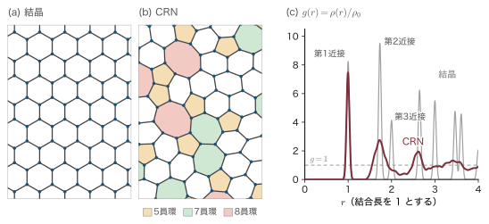
物理的意味：なぜ周期性がなくてもギャップが開くのか
第16章ではギャップを Bragg（ブラッグ）反射（周期ポテンシャル）から説明した．すると周期性のないアモルファスにはギャップが無いように思える．しかし Si のギャップには別の見方がある．Si 原子の $sp^3$ 混成軌道は隣の原子の混成軌道と結合軌道と反結合軌道を作り，前者が価電子帯，後者が伝導帯のもとになる．結合・反結合の分裂は1本1本の結合の性質で決まるので，結合の長さと角度（短距離秩序）が保たれていれば，ギャップも保たれる．Weaire と Thorpe（ソープ）は1971年に，簡単な強束縛模型で，四面体配位の網目なら原子のつながり方によらずギャップが開くことを示した．周期性が失われて変わるのは，バンドの端がぼやけて裾を引くことである．この裾が本章の主役になる．
28.1.2 動径分布関数 — ハローパターンから何が読めるか
アモルファスの回折強度から，原子の距離の分布を取り出すことができる．そのための式を導こう．
導出：Debye の散乱式と動径分布関数
ステップ1：散乱強度．第3章（3.4節）と同じく，入射波の波数ベクトルを $\kk$，散乱波を $\kk'$，散乱ベクトルを $\qq=\kk'-\kk$ とすると，位置 $\rr_j$ の原子（原子散乱因子 $f$）からの散乱波の振幅の和は $A(\qq)=f\sum_j\ee^{-i\qq\cdot\rr_j}$ に比例する．強度はその絶対値の2乗だから
$$ I(\qq)\propto\abs{A}^2=f^2\sum_j\sum_k \ee^{-i\qq\cdot(\rr_j-\rr_k)} $$二重和を $j=k$ の項（$N$ 個，どれも $\ee^0=1$）と $j\ne k$ の項に分ける．$\rr_{jk}\equiv\rr_j-\rr_k$ と書くと
$$ \frac{I(\qq)}{Nf^2}=1+\frac{1}{N}\sum_j\sum_{k\ne j}\ee^{-i\qq\cdot\rr_{jk}} $$ステップ2：向きについて平均する．アモルファスには特別な向きがないので，$\rr_{jk}$ の向きについて平均してよい．$\qq$ を $z$ 軸に取り，$\rr_{jk}$ が $z$ 軸となす角を $\theta$ とすると $\qq\cdot\rr_{jk}=qr\cos\theta$（$r=\abs{\rr_{jk}}$）．立体角で平均すると，$u=\cos\theta$ と置いて（$\sin\theta\,\dd\theta=-\dd u$）
$$ \left\langle\ee^{-iqr\cos\theta}\right\rangle=\frac{1}{4\pi}\int_0^{2\pi}\!\!\dd\phi\int_0^\pi\ee^{-iqr\cos\theta}\sin\theta\,\dd\theta =\frac12\int_{-1}^{1}\ee^{-iqru}\,\dd u =\frac12\cdot\frac{\ee^{-iqr}-\ee^{iqr}}{-iqr} =\frac{\sin qr}{qr} $$（最後に $\ee^{iqr}-\ee^{-iqr}=2i\sin qr$ を使った．）したがって
これを Debye の散乱式（1915）という．$S(q)$ を構造因子（structure factor）と呼ぶ．
ステップ3：和を距離の分布で書き直す．1個の原子から距離 $r$ と $r+\dd r$ の間（厚さ $\dd r$ の球殻）にある原子の平均の数を $J(r)\,\dd r$ と書き，$J(r)\equiv4\pi r^2\rho(r)$ で動径分布関数（radial distribution function，RDF）を定義する．$\rho(r)$ はその距離での平均の原子密度で，遠くでは平均密度 $\rho_0$ に近づく．$\sum_{k\ne j}$ は「原子 $j$ から見たすべての相手」についての和，$\frac1N\sum_j$ はそれを全原子で平均することだから，
$$ \frac1N\sum_j\sum_{k\ne j}F(r_{jk})=\int_0^\infty F(r)\,J(r)\,\dd r \qquad\Longrightarrow\qquad S(q)=1+\int_0^\infty4\pi r^2\rho(r)\,\frac{\sin qr}{qr}\,\dd r $$ステップ4：平均密度の部分を除く．$\rho(r)=\rho_0+[\rho(r)-\rho_0]$ と分ける．$\rho_0$ の部分は一様な連続体からの散乱で，試料全体の大きさを $L$ とすると $q\lesssim1/L$ のごく前方（透過光と区別できない方向）にしか強度を与えない．そこで $q\ne0$ では
$$ S(q)-1=\int_0^\infty4\pi r^2[\rho(r)-\rho_0]\frac{\sin qr}{qr}\,\dd r $$両辺に $q$ を掛けると
$$ q\,[S(q)-1]=\int_0^\infty4\pi r\,[\rho(r)-\rho_0]\sin qr\,\dd r $$ステップ5：Fourier（フーリエ）正弦変換を逆に解く．$F(q)=\int_0^\infty h(r)\sin qr\,\dd r$ ならば $h(r)=\frac{2}{\pi}\int_0^\infty F(q)\sin qr\,\dd q$ である（Fourier 正弦変換の反転公式．付録A.1，大学数学 第30章30.1）．$h(r)=4\pi r[\rho(r)-\rho_0]$ として適用し，両辺に $r$ を掛けると
∎ 測った $S(q)$ から，原子の距離の分布 $J(r)$ が計算できる．
物理的意味：ピークの位置と面積が教えること
$J(r)$ の第1ピークの位置は結合長，面積 $\int J(r)\,\dd r$ は配位数 $Z$ である（球殻の中の原子数を足し上げたものだから）．図28.1(c) の対分布関数 $g(r)=\rho(r)/\rho_0$ とは $J(r)=4\pi r^2\rho_0\,g(r)$ の関係にあり，$g(r)$ に $4\pi r^2\rho_0$ を掛けたものが $J(r)$ である．第2ピークの位置は結合角で決まり，第3ピークは次に述べる二面角で決まる．a-Si では第1ピークが $r_1=2.35\,\text{Å}$（結晶と同じ），配位数は $Z\approx3.8$〜$3.9$ で4にわずかに足りない（足りない分には，空隙や密度の不足と回折データの規格化の不確かさが効いている．1原子あたり $0.1$〜$0.2$ 本，$10^{22}\,\mathrm{cm^{-3}}$ 近くの結合が足りない計算になるが，28.1.3項の ESR で数える不対電子のダングリングボンド（原子の $0.02$〜$0.2\,\%$）はそのごく一部にすぎない），第2ピークも $r_2=3.84\,\text{Å}$ と結晶と同じ位置にある．しかし結晶 Si の第3ピーク（$4.50\,\text{Å}$，12個）は a-Si では消える．回折パターンで言えば，a-Si の構造因子の最初の山は $q\approx2.0\,\text{Å}^{-1}$ にあり，これは結晶 Si で最も強い (111) 反射の位置 $2\pi\sqrt3/a=2.00\,\text{Å}^{-1}$（$a=5.431\,\text{Å}$）とほぼ同じである．結晶の強い反射があった場所が，ぼやけたハローとして残ると考えればよい．
例題28.1 動径分布関数のピークから結合角と二面角の乱れを読む
a-Si の動径分布関数の第1ピークは $r_1=2.35\,\text{Å}$，第2ピークは $r_2=3.84\,\text{Å}$ にある．
(1) 平均の結合角 $\theta$ を求めよ．
(2) 結合角が $\pm10^\circ$ ばらつくと，第2ピークはどれだけの幅に広がるか．
(3) 原子 A–B–C–D と結合がつながるとき，結合 B–C のまわりのねじれの角（二面角）$\phi$ によって A と D の距離 $r_3$ が変わる．結合長 $b$，結合角が四面体角（$\cos\theta=-1/3$）のとき $r_3=\frac{b}{3}\sqrt{41-16\cos\phi}$ であることを示し（$\phi=0$ は A と D が同じ側に来る配置），結晶 Si の第3ピーク $4.50\,\text{Å}$ が a-Si で消える理由を説明せよ．
解答．
(1) 1個の原子から長さ $r_1$ の結合が2本，角度 $\theta$ で出ている．2本の先の原子の距離は二等辺三角形の底辺だから $r_2=2r_1\sin(\theta/2)$．これを $\theta$ について解いて
$$ \theta=2\arcsin\frac{r_2}{2r_1}=2\arcsin\frac{3.84}{4.70}=2\arcsin0.8170=2\times54.79^\circ=109.6^\circ $$四面体角 $\arccos(-1/3)=109.47^\circ$ とよく一致する．
(2) $r_2=2r_1\sin(\theta/2)$ を $\theta$ で微分すると（四面体角の半分 $54.74^\circ$ を使う）
$$ \frac{\dd r_2}{\dd\theta}=r_1\cos\frac\theta2=2.35\times\cos54.74^\circ=2.35\times0.5774=1.357\,\text{Å/rad} $$$\Delta\theta=10^\circ=0.1745\,\mathrm{rad}$ だから
$$ \Delta r_2=1.357\times0.1745=0.237\,\text{Å}\approx0.24\,\text{Å} $$結合長の揺らぎ（1〜2%，$0.02$〜$0.05\,\text{Å}$）よりずっと大きい．第2ピークが第1ピークより幅広いのはこのためである．
(3) B を原点，C を $(b,0,0)$ に置く．A は B から，BC と角度 $\theta$ をなす向き $\uu_1=(\cos\theta,\sin\theta,0)$ に，D は C から CB と角度 $\theta$ をなし，BC 軸のまわりに $\phi$ だけ回った向き $\uu_3=(-\cos\theta,\sin\theta\cos\phi,\sin\theta\sin\phi)$ にある．$\overrightarrow{\mathrm{AD}}=b(\hat{\bm{x}}+\uu_3-\uu_1)$ だから
$$ \frac{r_3^2}{b^2}=(1-2\cos\theta)^2+\sin^2\theta\,[(\cos\phi-1)^2+\sin^2\phi]=(1-2\cos\theta)^2+2\sin^2\theta\,(1-\cos\phi) $$$\cos\theta=-1/3$，$\sin^2\theta=8/9$ を入れると $(1+2/3)^2=25/9$ なので
$$ \frac{r_3^2}{b^2}=\frac{25}{9}+\frac{16}{9}(1-\cos\phi)=\frac{41-16\cos\phi}{9} \qquad\Longrightarrow\qquad r_3=\frac{b}{3}\sqrt{41-16\cos\phi} $$$b=2.35\,\text{Å}$ で，$\phi=0^\circ$ なら $\frac{2.35}{3}\sqrt{25}=3.92\,\text{Å}$，$\phi=60^\circ$ なら $\frac{2.35}{3}\sqrt{33}=4.50\,\text{Å}$，$\phi=180^\circ$ なら $\frac{2.35}{3}\sqrt{57}=5.91\,\text{Å}$．結晶 Si（ダイヤモンド構造）では二面角が $\pm60^\circ$ か $180^\circ$ の2通りに限られ，$\pm60^\circ$ の組がそろって第3近接の $4.50\,\text{Å}$ を，$180^\circ$ の組がそろって第5近接の $5.92\,\text{Å}$ を作る．a-Si では二面角がばらばらなので，第3近接の距離が $3.9$〜$5.9\,\text{Å}$ に散らばり，ピークにならない．
∎ CRN は結合長と結合角を保つが，二面角の秩序を失う．動径分布関数の第3ピークの消失は，そのことの直接の証拠である．
28.1.3 a-Si と a-Si:H — 水素がダングリングボンドを終端する
蒸着やスパッタで作った a-Si には大きな欠点がある．網目のところどころで結合が切れ，相手のいない混成軌道，すなわちダングリングボンド（dangling bond，未結合手）が $10^{19}$〜$10^{20}\,\mathrm{cm^{-3}}$ も残る．ダングリングボンドの準位はギャップの中央付近にあり，その密度が高すぎると Fermi 準位がそこに釘付けになる（ピンニング）．するとドーピングしても Fermi 準位が動かず，光で作った電子と正孔もすぐにダングリングボンドで再結合してしまう．このような膜はデバイスには使えない．低温では，Fermi 準位のところのダングリングボンドの間を電子が跳び移る伝導（28.3節の変動範囲ホッピング）が見える．
転機は，シラン $\mathrm{SiH_4}$ のグロー放電で作った膜だった．グロー放電は，低圧のガスに高周波の電圧をかけて放電させ，分解したガスから基板の上に膜を積もらせる方法で，プラズマ CVD（化学気相成長）ともいう．Chittick（チティック）ら（1969）が最初に作り，Spear と LeComber（スピアとルコンバー）がその性質を詳しく調べた．基板温度 $200$〜$300\,^\circ\mathrm{C}$ で堆積したこの膜は水素を約10 at.%（at.% は原子の個数の割合）含み，ダングリングボンドの密度が $10^{15}$〜$10^{16}\,\mathrm{cm^{-3}}$ まで下がる．水素原子が切れた結合の先に1個ずつ結合して，ダングリングボンドを終端するからである．これを水素化アモルファスシリコン（hydrogenated amorphous silicon，a-Si:H）という．
なぜ：ダングリングボンドは電子スピン共鳴（ESR）で数えられる
中性のダングリングボンドには対になっていない電子が1個ある（スピン $1/2$）．磁場の中に置くとスピンの向きでエネルギーが2つに分かれ，その差に一致する周波数のマイクロ波を吸収する．これが電子スピン共鳴（ESR）である．吸収の強さ（信号の積分値）は不対電子の数に比例するので，スピン数の分かった標準試料と比べれば，膜の中のダングリングボンドの数がわかる．a-Si のダングリングボンドは $g\approx2.0055$ の位置に信号を与える（$g$ は g 値と呼ばれる無次元の数で，共鳴の起こる磁場とマイクロ波の周波数の比を決める．自由電子では $2.0023$ で（第20章20.3節），そこからのずれが不対電子のまわりの環境を映す）．
例題28.2 ESR でダングリングボンドを数える
面積 $1\,\mathrm{cm^2}$，厚さ $1\,\mu\mathrm{m}$ の a-Si:H 膜の ESR 信号を標準試料と比べたところ，不対電子の数は $5\times10^{11}$ 個だった．
(1) ダングリングボンドの密度を求めよ．(2) Si 原子何個に1個の割合か．(3) ダングリングボンドの平均間隔はいくらか．(4) 蒸着した a-Si（$10^{19}\,\mathrm{cm^{-3}}$）と比べよ．
解答．
(1) 体積は $V=1\,\mathrm{cm^2}\times(1\times10^{-4}\,\mathrm{cm})=1\times10^{-4}\,\mathrm{cm^3}$．密度は
$$ N_{\mathrm{DB}}=\frac{5\times10^{11}}{1\times10^{-4}\,\mathrm{cm^3}}=5\times10^{15}\,\mathrm{cm^{-3}} $$(2) Si の原子密度は，格子定数 $5.431\,\text{Å}$ の立方体に8個だから $8/(5.431\times10^{-8}\,\mathrm{cm})^3=5.0\times10^{22}\,\mathrm{cm^{-3}}$（アモルファスでもほぼ同じ）．割合は $5\times10^{15}/5.0\times10^{22}=1\times10^{-7}$，すなわち Si 原子1000万個に1個である．
(3) 1個あたりの体積の3乗根を取って $N_{\mathrm{DB}}^{-1/3}=(5\times10^{15})^{-1/3}\,\mathrm{cm}=5.8\times10^{-6}\,\mathrm{cm}=58\,\mathrm{nm}$．
(4) $10^{19}\,\mathrm{cm^{-3}}$ なら割合は $2\times10^{-4}$（5000個に1個），間隔は $(10^{19})^{-1/3}\,\mathrm{cm}=4.6\,\mathrm{nm}$．
∎ 水素化でダングリングボンドは約2000分の1になった．一方，10 at.% の水素は $5\times10^{21}\,\mathrm{cm^{-3}}$ もあり，蒸着膜のダングリングボンドよりはるかに多い．水素の大部分はダングリングボンドの終端ではなく，網目のひずみを和らげることに使われていると考えられている．
ここまでの結晶 Si と a-Si:H の違いを，後の節で扱う性質も含めて表28.1 にまとめておく．
| 項目 | 結晶 Si（c-Si） | a-Si:H |
|---|---|---|
| 構造 | ダイヤモンド構造（長距離秩序） | 四面体の CRN（短距離秩序のみ），水素を約10 at.% |
| 作り方 | 融液から単結晶を引き上げる（約 $1400\,^\circ\mathrm{C}$） | $\mathrm{SiH_4}$ のプラズマ CVD，基板 $200$〜$300\,^\circ\mathrm{C}$，ガラス上に大面積 |
| ギャップ | $1.11\,\mathrm{eV}$（間接） | 移動度ギャップ $1.8\,\mathrm{eV}$ 程度，Tauc の光学ギャップ $1.7$〜$1.8\,\mathrm{eV}$ |
| $2\,\mathrm{eV}$ での吸収係数 | $4\times10^{3}\,\mathrm{cm^{-1}}$ 程度 | $10^{4}\,\mathrm{cm^{-1}}$ 程度（$\kk$ の選択則がないため大きい） |
| ギャップ内の欠陥 | きわめて少ない | ダングリングボンド $10^{15}$〜$10^{16}\,\mathrm{cm^{-3}}$ |
| 電子の移動度 | $1400\,\mathrm{cm^2/(V\,s)}$ | 広がった状態で $10$ 程度，裾のトラップを含むドリフト移動度で $1$ 程度 |
| 正孔の移動度 | $450\,\mathrm{cm^2/(V\,s)}$ | ドリフト移動度で $10^{-2}$ 程度以下 |
| ノンドープの暗伝導度（室温） | $3\times10^{-6}\,\Omega^{-1}\mathrm{cm^{-1}}$（真性．第17章の例題17.14） | $10^{-11}$〜$10^{-10}\,\Omega^{-1}\mathrm{cm^{-1}}$ 程度 |
| ドーピング | ほぼすべてのドーパントが活性 | 活性なのは一部だけ（28.1.7項） |
| 主な用途 | LSI，結晶系太陽電池 | 薄膜太陽電池，液晶の TFT，イメージセンサ |
28.1.4 バンド裾と Urbach 則
結晶の半導体では，光子エネルギーがギャップより小さいと光はほとんど吸収されない（第17章17.1節）．ところがアモルファス半導体では，ギャップより下でも吸収がすぐには消えず，光子エネルギーを下げるにつれて指数関数的に減っていく．片対数グラフでは直線になる（図28.2(a)）．この裾は
と書け，Urbach 則（ウルバッハ則）と呼ばれる．1953年に Urbach が臭化銀（AgBr）の結晶の吸収端で示し，その後ハロゲン化アルカリなど多くの結晶で確かめられた規則である．$\alpha_0$ と $E_0$ は物質で決まる定数で，$E_0$ はギャップ付近のエネルギー（次の導出では $E_g$ に当たる），$\alpha_0$ は $\hbar\omega=E_0$ での吸収係数である．$E_U$ を Urbach エネルギーといい，吸収が $\ee$ 分の1に減るのに必要な光子エネルギーの減少幅である．結晶では $E_U$ は主にフォノンによる揺らぎで決まり，低温では数 meV 程度と小さい．a-Si:H では静的な乱れが主で，良質な膜でも $E_U\approx50\,\mathrm{meV}$ ある．$E_U$ が大きいほど乱れが大きく，欠陥も多い傾向がある．
Urbach 裾は，価電子帯の端から指数関数的にギャップへしみ出した状態（バンド裾，band tail）があることの現れである．このことを確かめよう．
導出：指数関数的なバンド裾から Urbach 則が出る
仮定．伝導帯は広がった状態の放物線型 $N_c(E)=C_c(E-E_c)^{1/2}$（$E\gt E_c$），価電子帯の上には指数関数の裾 $N_v(E)=N_0\exp[-(E-E_v)/E_{0v}]$（$E\gt E_v$）があるとする．$E_c-E_v\equiv E_g$ とする．アモルファスでは $\kk$ の保存則がない（$\kk$ そのものが定義できない）ので，エネルギーさえ保存すればどの状態からどの状態へも遷移できる．行列要素を一定とすれば，吸収の強さはエネルギー差が $\hbar\omega$ の状態の組の数
$$ \int N_v(E)\,N_c(E+\hbar\omega)\,\dd E $$に比例する．
計算．$\hbar\omega\lt E_g$ とする．終状態のエネルギー $E'=E+\hbar\omega$ を伝導帯の底から測って $x=E'-E_c\ge0$ と置くと，始状態のエネルギーは $E=E_c+x-\hbar\omega$ である．これを裾の式に入れると
$$ N_v(E)=N_0\exp\!\left[-\frac{E_c+x-\hbar\omega-E_v}{E_{0v}}\right]=N_0\exp\!\left[-\frac{E_g-\hbar\omega}{E_{0v}}\right]\ee^{-x/E_{0v}} $$$x$ に依らない因子を積分の外に出し，$y=x/E_{0v}$ と置くと（$\dd x=E_{0v}\dd y$，$x^{1/2}=E_{0v}^{1/2}y^{1/2}$）
$$ \int_0^\infty C_cx^{1/2}\ee^{-x/E_{0v}}\dd x=C_cE_{0v}^{3/2}\int_0^\infty y^{1/2}\ee^{-y}\dd y=C_cE_{0v}^{3/2}\,\frac{\sqrt\pi}{2} $$（最後の積分は第17章17.5節で使った $\Gamma(3/2)=\sqrt\pi/2$．付録A.5）．したがって
$$ \alpha(\hbar\omega)\propto N_0C_c\frac{\sqrt\pi}{2}E_{0v}^{3/2}\exp\!\left(\frac{\hbar\omega-E_g}{E_{0v}}\right) $$∎ 指数関数の部分が光子エネルギーの変化を支配し，式 \eqref{eq:28-urbach} の形が出て $E_U=E_{0v}$ となる（式 \eqref{eq:28-urbach} の $E_0$ は $E_g$ に当たる）．伝導帯にも裾がある場合も，広いほうの裾（a-Si:H では価電子帯側，$E_{0v}\approx45\,\mathrm{meV}$；伝導帯側は $E_{0c}\approx25\,\mathrm{meV}$ 程度）が吸収端の傾きを決める．
例題28.3 吸収スペクトルから Urbach エネルギーを求める
a-Si:H 膜の吸収係数を測ったところ，$\hbar\omega=1.70\,\mathrm{eV}$ で $1.65\times10^2\,\mathrm{cm^{-1}}$，$\hbar\omega=1.80\,\mathrm{eV}$ で $1.20\times10^3\,\mathrm{cm^{-1}}$ だった（図28.2 の模型の値）．どちらも Urbach 裾の領域にあるとして $E_U$ を求めよ．室温の $k_BT$ と比べよ．
解答．式 \eqref{eq:28-urbach} の比を取ると $\alpha_0$ と $E_0$ が消える：
$$ \frac{\alpha(1.80)}{\alpha(1.70)}=\exp\!\left(\frac{1.80-1.70}{E_U}\right) \qquad\Longrightarrow\qquad E_U=\frac{0.10\,\mathrm{eV}}{\ln\bigl(1.20\times10^3/1.65\times10^2\bigr)} $$数値を入れると
$$ E_U=\frac{0.10\,\mathrm{eV}}{\ln7.27}=\frac{0.10\,\mathrm{eV}}{1.984}=0.0504\,\mathrm{eV} $$すなわち $E_U\approx50\,\mathrm{meV}$．室温の $k_BT=25.85\,\mathrm{meV}$ の約2倍である．
2点は，欠陥による吸収の肩（図28.2(a) の $1.5\,\mathrm{eV}$ より下）が効かない $1.65\,\mathrm{eV}$ より上で選んだ．同じ模型で $1.50\,\mathrm{eV}$（$\alpha=5.8\,\mathrm{cm^{-1}}$．その半分が欠陥による吸収）と $1.70\,\mathrm{eV}$ の2点を使うと $E_U=0.20\,\mathrm{eV}/\ln(165/5.8)=60\,\mathrm{meV}$ と，2割大きく出てしまう．
∎ 吸収は $50\,\mathrm{meV}$ ごとに $\ee$ 分の1，$E_U\ln10=115\,\mathrm{meV}$ ごとに10分の1になる．熱の揺らぎより大きな，凍結された乱れがバンド端をぼかしていることがわかる．傾きを読むときは，裾がほかの吸収に埋もれていない範囲を選ぶことが大切である．
28.1.5 移動度ギャップと光学ギャップ — Tauc プロット
裾があるとギャップの「端」が決まらないように思える．アモルファス半導体のギャップは2通りに定義される．
定義：移動度端・移動度ギャップ・光学ギャップ
バンドの裾の状態は乱れのために空間的に狭い範囲に局在しており（理由は28.2節で説明する），絶対零度ではそこにいる電子は電流を運べない．伝導帯で局在状態と広がった状態の境のエネルギーを $E_c$，価電子帯の境を $E_v$ と書き，移動度端（mobility edge）と呼ぶ．$E_c-E_v$ を移動度ギャップ（mobility gap）という．一方，吸収スペクトルの強い部分を次の Tauc の式で外挿して得られる $E_T$ を光学ギャップ（Tauc ギャップ）という．両者は a-Si:H で $0.1\,\mathrm{eV}$ 程度の範囲で近いが，同じ量ではない．
導出：Tauc の式 $(\alpha\hbar\omega)^{1/2}\propto\hbar\omega-E_T$
仮定．吸収の強い領域では，裾ではなく広がった状態どうしの遷移が主になる．その状態密度を放物線型 $N_v(E)=C_v(E_v-E)^{1/2}$（$E\lt E_v$），$N_c(E)=C_c(E-E_c)^{1/2}$（$E\gt E_c$）とし，Tauc にならって運動量の行列要素がエネルギーによらず一定，$\kk$ の保存則はないとする．誘電関数の虚部は $\epsilon_2(\omega)\propto\abs{p}^2J_{cv}(\hbar\omega)/\omega^2$（$J_{cv}$ はエネルギー差が $\hbar\omega$ の状態の組の数で，結合状態密度（joint density of states）と呼ばれる．第25章25.5節の $\epsilon_2$ の式で，$\kk$ についての制限を外したもの）であり，吸収係数は $\alpha=\omega\epsilon_2/(nc)$（$n$ は屈折率で，ほぼ一定とする）だから
$$ \alpha\hbar\omega\propto\omega^2\epsilon_2\propto J_{cv}(\hbar\omega)=\int N_v(E)\,N_c(E+\hbar\omega)\,\dd E $$計算．余剰エネルギーを $\Delta\equiv\hbar\omega-(E_c-E_v)$ とする．始状態を $y=E_v-E\ge0$ で表すと，終状態は伝導帯の底から $E+\hbar\omega-E_c=E_v-y+\hbar\omega-E_c=\Delta-y$ のところにあり，これが $0$ 以上でなければならないので $0\le y\le\Delta$．よって
$$ J_{cv}=C_vC_c\int_0^{\Delta}y^{1/2}(\Delta-y)^{1/2}\,\dd y=C_vC_c\,\frac{\pi}{8}\Delta^2 $$（積分は $y=\Delta\sin^2\varphi$ と置換して計算できる．第17章の演習17.1 と同じ積分である．）$\Delta=\hbar\omega-E_T$ と書けば $\alpha\hbar\omega=B_T(\hbar\omega-E_T)^2$（$B_T$ は定数）．平方根を取って
∎ $(\alpha\hbar\omega)^{1/2}$ を $\hbar\omega$ に対して描くと直線になり，横軸との交点が $E_T$ を与える．これが Tauc プロットである（Tauc ら，1966．最初はアモルファス Ge で使われた）．
補足：結晶の間接遷移と同じ指数 $1/2$ になる理由
第17章（17.1節）では，結晶の間接ギャップでも $(\alpha\hbar\omega)^{1/2}$ が直線になると述べた．間接遷移ではフォノンが運動量を補うので始状態と終状態を自由に組み合わせられ，状態の組の数え方が上の計算と同じ「積分 $\int y^{1/2}(\Delta-y)^{1/2}\dd y\propto\Delta^2$」になるからである．アモルファスではフォノンの助けがなくても，そもそも $\kk$ の制限がないので同じ数え方になる．同じ指数でも理由が違うことに注意しよう．なお，運動量の行列要素ではなく双極子（位置）の行列要素を一定とする仮定（Cody（コーディ）の方法）を使うと，$\alpha/\hbar\omega$ の平方根を描くことになり，得られるギャップが少し変わる．どの方法で決めたギャップかを書き添えるのが実験の作法である．
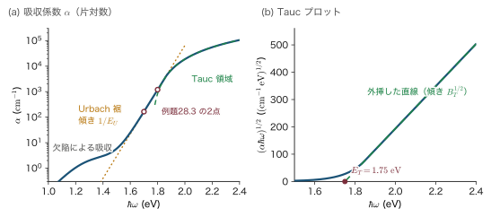
例題28.4 Tauc プロットで光学ギャップを決め，太陽電池の厚さを見積もる
a-Si:H 膜の吸収係数は $\hbar\omega=2.0\,\mathrm{eV}$ で $1.875\times10^4\,\mathrm{cm^{-1}}$，$2.4\,\mathrm{eV}$ で $1.056\times10^5\,\mathrm{cm^{-1}}$ だった．
(1) Tauc プロットの2点から $B_T$ と $E_T$ を求めよ．
(2) $2.0\,\mathrm{eV}$（波長 $620\,\mathrm{nm}$）の光の90% を吸収するのに必要な厚さを求め，結晶 Si（$\alpha\approx4\times10^3\,\mathrm{cm^{-1}}$）と比べよ．
解答．
(1) 縦軸の値を計算する．
$$ \begin{aligned} (\alpha\hbar\omega)^{1/2}\big|_{2.0}&=\sqrt{1.875\times10^4\times2.0}=\sqrt{3.75\times10^4}=193.6\\ (\alpha\hbar\omega)^{1/2}\big|_{2.4}&=\sqrt{1.056\times10^5\times2.4}=\sqrt{2.535\times10^5}=503.5 \end{aligned} $$（単位は $(\mathrm{cm^{-1}\,eV})^{1/2}$．）2点を通る直線の傾きは
$$ B_T^{1/2}=\frac{503.5-193.6}{2.4-2.0}=\frac{309.9}{0.4}=774.7\ (\mathrm{cm^{-1}\,eV^{-1}})^{1/2} $$2乗して $B_T=6.0\times10^5\,\mathrm{cm^{-1}\,eV^{-1}}$．
横軸との交点は，$2.0\,\mathrm{eV}$ の点から縦軸の値を傾きで割った分だけ左に戻ったところ：
$$ E_T=2.0-\frac{193.6}{774.7}=2.0-0.250=1.75\,\mathrm{eV} $$(2) 光の強さは Beer–Lambert（ベール・ランベルト）の法則 $I=I_0\ee^{-\alpha d}$ に従う．90% 吸収は $I/I_0=0.1$ だから $\alpha d=\ln10=2.303$．
$$ d_{\text{a-Si:H}}=\frac{2.303}{1.875\times10^4\,\mathrm{cm^{-1}}}=1.23\times10^{-4}\,\mathrm{cm}=1.2\,\mu\mathrm{m},\qquad d_{\text{c-Si}}=\frac{2.303}{4\times10^3\,\mathrm{cm^{-1}}}=5.8\,\mu\mathrm{m} $$∎ a-Si:H は可視光を結晶 Si の約5倍強く吸収する．$\kk$ の選択則がないので，間接ギャップの不利がないからである．a-Si:H 太陽電池の光吸収層が $0.3$〜$0.5\,\mu\mathrm{m}$ 程度（裏面の反射で光を往復させる）で済み，ガラス上の薄膜として作れるのはこのためである．
28.1.6 状態密度の模型 — CFO 模型と Davis–Mott 模型
アモルファス半導体の電子状態は，状態密度 $N(E)$ のどこが局在状態でどこが広がった状態かを描いた図で考えるのが標準である．歴史的に2つの模型が提案された（図28.3）．
Cohen–Fritzsche–Ovshinsky 模型（コーエン・フリッチェ・オブシンスキー模型，CFO 模型，1969）は，多成分のカルコゲナイド合金ガラスを念頭に置き，伝導帯と価電子帯の裾がギャップの中央を越えて深く伸び，互いに重なると考えた．重なった部分では価電子帯の裾の状態が伝導帯の裾の状態より上に来るので，電子が前者から後者へ移って両方が電荷を持ち，Fermi 準位はその重なりの中に固定される．しかし，この模型では裾の状態が多すぎて，カルコゲナイドガラスがギャップより低いエネルギーの光に対して透明であることと合わない．
Davis–Mott 模型（1970）は，裾は狭く（数十 meV から0.1 eV 程度），その代わりにギャップの中央付近にダングリングボンドなどの欠陥による局在準位の帯があると考えた．欠陥準位の帯は，電子を出しやすいもの（ドナー的．下の帯）と受け取りやすいもの（アクセプター的．上の帯）の2つに分かれ，Fermi 準位はその間に固定される．a-Si:H の実際の状態密度はこの模型に近い（図28.4）．
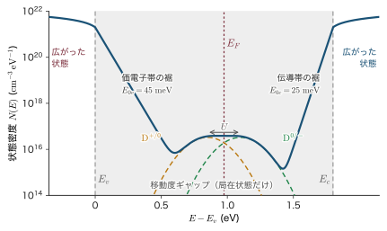
物理的意味：ギャップ内の状態は Fermi 準位の「おもし」になる
ギャップの中に状態密度 $N(E_F)$（単位体積・単位エネルギーあたり）の局在準位があると，Fermi 準位を $\Delta E_F$ 動かすには $N(E_F)\Delta E_F$ 個の電子を出し入れしなければならない．a-Si:H のように $N(E_F)\sim10^{16}\,\mathrm{cm^{-3}eV^{-1}}$ なら，$\Delta E_F=0.5\,\mathrm{eV}$ でも $5\times10^{15}\,\mathrm{cm^{-3}}$ の電子で足り，$10^{17}$〜$10^{18}\,\mathrm{cm^{-3}}$ のドーピングで十分動かせる．ところが水素を含まない a-Si のように $N(E_F)\sim10^{19}\,\mathrm{cm^{-3}eV^{-1}}$ 程度もあると，同じことに $5\times10^{18}\,\mathrm{cm^{-3}}$ の電子が要り，そのような高濃度のドーピングは網目そのものを壊してしまう．ギャップ内の状態を減らすことが，アモルファス半導体をデバイスにする第一の条件である．
28.1.7 ドーピングはなぜ可能になったか — Spear と LeComber
1970年代のはじめまで，アモルファス半導体はドーピングできないと考えられていた．理由は Mott が指摘した次の論法である．結晶では，Si の位置に入った P は周囲の4個の Si と結合せざるを得ず，余った5番目の電子がドナー電子になる（第17章17.6節）．ところが CRN には決まった格子位置がないので，P は自分の価電子5個にとって最も都合のよい形，すなわち3本の結合と1対の非共有電子対を作る（次項の8−N 則）．すると余る電子がなく，P はドナーにならない．
Spear と LeComber（1975）は，$\mathrm{SiH_4}$ のグロー放電にホスフィン $\mathrm{PH_3}$ やジボラン $\mathrm{B_2H_6}$ を混ぜて a-Si:H を作り，室温の暗伝導度が n 型・p 型とも何桁も変わることを示した．アモルファス半導体の pn 接合，太陽電池，TFT はすべてここから始まった．ドーピングが可能になった理由は2つある．
- ギャップ内の状態が少ない．28.1.6項の「おもし」が軽いので，わずかな電子の出し入れで Fermi 準位が動く．
- ドーパントの一部が4配位の荷電状態になる．Street（ストリート，1982）の模型では，P の大部分は8−N 則どおり3配位で不活性だが，一部が4配位で正に帯電した $\mathrm{P_4^+}$（下付きの4は配位数）となって電子を1個出し，その電子の多くは近くにできた負のダングリングボンド $\mathrm{D^-}$（電子を2個持って負に帯電したダングリングボンド．次項）に捕まる．このため活性なドーパントの割合（ドーピング効率）は低く，ドーピングするとダングリングボンドも増える．それでも Fermi 準位を伝導帯のそばまで動かすには十分である．
例題28.5 ドーピングで Fermi 準位はどれだけ動くか
a-Si:H の室温の暗伝導度は，伝導帯の移動度端 $E_c$ より上の広がった状態の電子によるとして $\sigma=\sigma_0\exp[-(E_c-E_F)/k_BT]$ と書ける（$\sigma_0\approx150\,\Omega^{-1}\mathrm{cm^{-1}}$ 程度．28.2.7項で出てくる最小金属伝導度と同じ程度の大きさで，その意味はそこで説明する）．P をドープして $\sigma$ が $10^{-11}$ から $10^{-2}\,\Omega^{-1}\mathrm{cm^{-1}}$ に増えたとき，Fermi 準位はどれだけ動いたか．ドープ前後の $E_c-E_F$ も求めよ．
解答．2つの状態の比を取ると $\sigma_0$ が消える：
$$ \frac{\sigma_2}{\sigma_1}=\exp\!\left(\frac{E_{F2}-E_{F1}}{k_BT}\right) $$対数を取って
$$ \Delta E_F=k_BT\ln\frac{\sigma_2}{\sigma_1}=0.02585\,\mathrm{eV}\times\ln10^{9}=0.02585\times20.72=0.536\,\mathrm{eV} $$それぞれの $E_c-E_F$ は $\sigma=\sigma_0\ee^{-(E_c-E_F)/k_BT}$ を解いて $E_c-E_F=k_BT\ln(\sigma_0/\sigma)$：
$$ \begin{aligned} \text{ドープ前：}&\ 0.02585\times\ln\frac{150}{10^{-11}}=0.02585\times30.34=0.78\,\mathrm{eV}\\ \text{ドープ後：}&\ 0.02585\times\ln\frac{150}{10^{-2}}=0.02585\times9.62=0.25\,\mathrm{eV} \end{aligned} $$∎ ノンドープの a-Si:H の Fermi 準位は移動度ギャップ（約 $1.8\,\mathrm{eV}$）の中央よりやや伝導帯寄りにあり，P のドーピングで $0.5\,\mathrm{eV}$ 以上も持ち上がる．伝導度の9桁の変化は，Fermi 準位の0.5 eV の移動にすぎない——指数関数の威力である．
28.1.8 カルコゲナイドガラス — 8−N 則と負の $U$
S，Se，Te（周期表の16族，カルコゲン）を主成分とするガラスをカルコゲナイドガラスという．$\mathrm{As_2Se_3}$，$\mathrm{As_2S_3}$，Se そのもの，相変化メモリに使う Ge–Sb–Te（GST）などがある．これらの網目の作り方は，次の規則でよく説明される．
定義：8−N 則（Mott）
価電子を $N$ 個（$N\ge4$）持つ原子は，共有結合で電子を分け合ってオクテット（8個）を完成させるのに $8-N$ 本の結合を作る．アモルファスでは格子位置の制約がないので，すべての原子がこの規則どおりの配位数を取る．Ge（$N=4$）は4配位，As・Sb（$N=5$）は3配位，Se・Te（$N=6$）は2配位である．
たとえば $\mathrm{As_2Se_3}$ の平均配位数は $(2\times3+3\times2)/5=12/5=2.4$ である．2配位の Se は鎖や環を作り，3配位の As がそれらをつなぐ．
カルコゲナイドガラスには不思議な性質がある．ギャップ内の準位がかなり多く，Fermi 準位はギャップの中央付近に固定され（伝導度の活性化エネルギーがギャップのほぼ半分），不純物を入れても伝導度がほとんど変わらない．ところが ESR の信号は暗所では見えない．準位が多いのに不対電子がないのである．低温で光を当てると初めて ESR 信号が現れる．Anderson（1975）はこれを，欠陥に2個の電子が入るほうが1個ずつ入るよりエネルギーが低い，すなわち実効的な電子間反発が負になるからだと説明した．Street と Mott（1975），Kastner（カストナー）・Adler（アドラー）・Fritzsche（1976）はその欠陥を，正に帯電した3配位のカルコゲン原子 $\mathrm{D^+}$（$\mathrm{C_3^+}$）と負に帯電した1配位のカルコゲン原子 $\mathrm{D^-}$（$\mathrm{C_1^-}$）の対だと考えた．どちらも電子がスピン対を作っているので ESR に現れない．
導出：格子のゆがみが実効的な $U$ を負にする（Anderson の模型）
1つの欠陥に $n$ 個（$n=0,1,2$）の電子がいるとする．欠陥のまわりの原子の変位を1つの座標 $x$ で代表させ，ばね定数を $C$，電子1個が格子を押す力を $A$ とする．電子どうしの Coulomb 反発（同じ場所に2個入るとき）を $U\gt0$ とすると，エネルギーは
$$ E_n(x)=-Anx+\frac12Cx^2+\frac{U}{2}n(n-1) $$第1項は電子が格子をゆがめて得をする分，第2項はゆがみの弾性エネルギー，第3項は電子対の反発である（$n=2$ のとき $U$，$n=0,1$ のとき $0$）．格子は自分でエネルギーが最小になるように動くので，$x$ で微分して $0$ と置く：
$$ \frac{\partial E_n}{\partial x}=-An+Cx=0 \qquad\Longrightarrow\qquad x_n=\frac{An}{C} $$これを代入すると
$$ E_n=-An\cdot\frac{An}{C}+\frac12C\left(\frac{An}{C}\right)^2+\frac U2n(n-1)=-\frac{A^2n^2}{2C}+\frac U2n(n-1) $$$n=0,1,2$ では $E_0=0$，$E_1=-A^2/(2C)$，$E_2=-2A^2/C+U$．2個の中性欠陥（$n=1$ が2つ）が，空の欠陥（$n=0$）と2個入った欠陥（$n=2$）に変わる反応 $2\mathrm{D^0}\to\mathrm{D^+}+\mathrm{D^-}$ のエネルギー変化を実効的な相関エネルギー $U_{\mathrm{eff}}$ と呼ぶ：
∎ 格子のゆがみで得をする $A^2/C$ が Coulomb 反発 $U$ より大きければ $U_{\mathrm{eff}}\lt0$ となり，電子は対になって1つの欠陥に集まる．すべての欠陥が $\mathrm{D^+}$ か $\mathrm{D^-}$ になるので不対電子が残らず，Fermi 準位は両者の準位の中間に固定される．
例題28.6 負の $U$ の大きさ
ある欠陥で $A=1.0\,\mathrm{eV/\text{Å}}$，$C=2.0\,\mathrm{eV/\text{Å}^2}$，$U=0.3\,\mathrm{eV}$ とする．$U_{\mathrm{eff}}$ と，電子が1個・2個入ったときの変位 $x_1,x_2$ を求めよ．a-Si:H のダングリングボンド（$U_{\mathrm{eff}}\approx+0.2$〜$0.3\,\mathrm{eV}$ 程度）と何が違うのか．
解答．式 \eqref{eq:28-ueff} に代入して
$$ \frac{A^2}{C}=\frac{(1.0\,\mathrm{eV/\text{Å}})^2}{2.0\,\mathrm{eV/\text{Å}^2}}=0.50\,\mathrm{eV},\qquad U_{\mathrm{eff}}=0.3-0.50=-0.2\,\mathrm{eV} $$変位は $x_n=An/C$ より $x_1=1.0/2.0=0.50\,\text{Å}$，$x_2=1.00\,\text{Å}$．結合長の4割ほども原子が動く（変位に比例する力と線形のばねを仮定した模型がそのまま使える範囲は超えている．数値は見やすさのために大きめに取った．ただし，カルコゲンの欠陥では結合の組み替え（3配位⇄1配位）が起こるので，実際にも原子は大きく動く）．
∎ 中性欠陥2個が $\mathrm{D^+}+\mathrm{D^-}$ に変わると対あたり $0.2\,\mathrm{eV}$ 得をする．カルコゲン原子は非共有電子対を持ち，結合の数を変えて（3配位⇄1配位）大きく形を変えられるので $A$ が大きい．Si のダングリングボンドは4配位の硬い網目に埋まっていて形を変えにくく，$A^2/C$ が小さいので $U_{\mathrm{eff}}\gt0$ のままである．同じ「欠陥」でも，網目の柔らかさで符号が変わる．
28.1.9 Staebler–Wronski 効果
Staebler と Wronski（1977）は，a-Si:H に強い光を何時間も当てると光伝導度と暗伝導度がともに下がり，$150$〜$200\,^\circ\mathrm{C}$ で焼きなますと元に戻ることを見つけた．この可逆な光劣化を Staebler–Wronski 効果という．原因は，光で作られた電子と正孔が再結合するときに放つエネルギーが，ひずんだ弱い Si–Si 結合を切り，ダングリングボンドを $10^{16}$ から $10^{17}\,\mathrm{cm^{-3}}$ 程度まで増やすことにある（水素の移動が新しいダングリングボンドを安定にすると考えられている）．a-Si:H 太陽電池の効率が使い始めの数か月で1〜3割下がってから安定するのはこのためである．
導出：ダングリングボンドは時間の1/3乗で増える
単位体積あたり毎秒 $G$ 個の電子・正孔対が光で作られ，主にダングリングボンド（密度 $N$）で再結合するとする．定常状態では生成と再結合がつり合い，電子密度は $n=G\tau$（$\tau$ は寿命）．寿命は再結合の相手が多いほど短いので $\tau\propto1/N$，したがって $n\propto G/N$，正孔も同様に $p\propto G/N$．新しいダングリングボンドは電子と正孔の再結合（$\propto np$）のエネルギーで作られると考えると，比例定数を $c$ として
$$ \frac{\dd N}{\dd t}=c\,np=c'\frac{G^2}{N^2} $$変数を分けて $N^2\dd N=c'G^2\dd t$．$0$ から $t$ まで積分し，初期値を $N_0$ とすると
$$ \frac{N^3-N_0^3}{3}=c'G^2t \qquad\Longrightarrow\qquad N(t)=\left(N_0^3+3c'G^2t\right)^{1/3} $$$N\gg N_0$ となった後は
∎ 欠陥が増えるほど電子と正孔が減って欠陥の生成が遅くなる「自己抑制」のため，増え方は時間の $1/3$ 乗とゆっくりである（Stutzmann（シュトゥッツマン）・Jackson（ジャクソン）・Tsai（ツァイ），1985）．$N$ を2倍にするには8倍の時間がかかる．光を2倍強くすると $N$ は $2^{2/3}=1.59$ 倍になる．
28.1.10 応用 — 太陽電池・TFT・電子写真・X線検出器・相変化メモリ・光ファイバ
- 薄膜太陽電池．Carlson（カールソン）と Wronski（1976）が最初の a-Si:H 太陽電池を作った．a-Si:H は拡散長（キャリアが再結合するまでに拡散で進める距離）が短いので，p 型の層と n 型の層の間に厚いノンドープの i 層（i は intrinsic，真性）をはさんだ p-i-n 構造にする．p 層と n 層の電位差で i 層の内部に電場（内蔵電場）ができ，光で作られた電子と正孔はこの電場で両側へ引き抜かれる．吸収が強いので i 層は $0.3$〜$0.5\,\mu\mathrm{m}$ で足りる（例題28.4）．電卓の太陽電池から始まり，微結晶 Si の太陽電池と重ねたタンデム型（吸収する波長の違う太陽電池を重ねて，光を無駄なく使う方式）にも使われた．
- 薄膜トランジスタ（TFT）．LeComber・Spear・Ghaith（ガイス）が1979年に a-Si:H の電界効果トランジスタを示し，液晶ディスプレイの画素スイッチとして普及した．電界効果移動度は $0.5$〜$1\,\mathrm{cm^2/(V\,s)}$ 程度と小さいが，ガラス上に大面積で均一に作れる．より高い移動度が要る高精細の画面や有機 EL では，アモルファス酸化物半導体の IGZO（移動度 $10\,\mathrm{cm^2/(V\,s)}$ 程度）が使われる（無機材料学入門 第10章10.13）．
- 電子写真と X 線検出器．a-Se は暗所での抵抗が非常に高く，光が当たったところだけ電荷が逃げる光導電体なので，複写機の感光体として長く使われた．現在は，厚い a-Se 膜が X 線を吸収して作った電子と正孔を $10^7\,\mathrm{V/m}$ 程度（$10\,\mathrm{V/\mu m}$）の電場で集める，直接変換型の平板 X 線検出器（乳房撮影など）に使われる．
- 相変化メモリ．GST などのカルコゲナイドは，アモルファス相と結晶相の間を熱で何度も行き来でき，両相で光の反射率も電気抵抗も大きく違う．書き換え型の光ディスクと，電気的な相変化メモリ（PCM）に使われる（28.4.4項）．
- 光ファイバ．石英ガラス（アモルファス $\mathrm{SiO_2}$）は結晶粒界がないので光を散乱させる境界がなく，波長 $1.55\,\mu\mathrm{m}$ で損失 $0.2\,\mathrm{dB/km}$ 程度まで透明になる．光通信はこの「乱れた固体」の上に成り立っている（第26章26.6節）．
28.2 Anderson 局在，移動度端，最小金属伝導度
28.2.1 乱れが電子を閉じ込める — Anderson 模型
金属に不純物を入れると電子は散乱され，Drude の描像（第15章15.6節）では平均自由行程 $\ell$ ごとに向きを変えながら拡散する．散乱が増えれば抵抗は増えるが，電子が試料の中を動き回ること自体は変わらない．ところが Anderson（1958）は，乱れが十分に強いと電子の波動関数が1か所のまわりに閉じ込められ，拡散そのものが止まることを示した．これを Anderson 局在（Anderson localization）という．古典的な粒子が深い穴に落ちて出られなくなるのとは違い，乱れで何度も散乱された波が互いに打ち消し合う干渉の効果である．そのため，電子に限らず光や音や冷たい原子の物質波でも同じ現象が観測されている．
Anderson はこの現象を最も簡単な模型で考えた．第18章の強束縛近似（18.4節）で，格子点 $i$ の原子軌道 $\ket{i}$ のエネルギー（サイトエネルギー）をでたらめにばらつかせる：
$\langle ij\rangle$ は隣り合うサイトの組，$t\gt0$ は飛び移り積分（第18章の $\gamma$ に当たる）である．乱れがなければ（$W=0$）単純立方格子では $E(\kk)=-2t(\cos k_xa+\cos k_ya+\cos k_za)$ となり（第18章の式），エネルギーは $-6t$ から $+6t$ に広がる．帯の幅は $B=12t$ である．単純立方格子や鎖，bcc，ダイヤモンド構造のように，サイトを2組に分けると隣どうしが必ず別の組に属する格子（2部格子）では，隣接サイトの数を $z$ として $B=2zt$ が厳密に成り立つ．fcc などではそうならない（fcc では $2zt=24t$ ではなく $16t$）が，本章では目安として $B\approx2zt$ を使う．模型の考え方を図28.5 に示す．
定義：局在状態・広がった状態・局在長
固有状態の波動関数が，試料をいくら大きくしても有限の領域に閉じ込められ，その外で $\abs{\psi(\rr)}\propto\exp(-\abs{\rr-\rr_0}/\xi)$ と指数関数的に減衰するとき，その状態を局在状態（localized state），減衰の長さ $\xi$ を局在長（localization length）という．試料全体に広がる状態を広がった状態（extended state）という．絶対零度で Fermi 準位が局在状態にあれば，直流伝導度は $0$ である．
28.2.2 局在の判定 — 乱れの幅 $W$ と帯の幅 $B$
局在するかどうかは，乱れ $W$ と飛び移り $t$ の競争で決まる．$W=0$ なら Bloch 状態で全部広がり，$t=0$ なら電子は各サイトに留まる．その中間を，2つのサイトの問題から考えよう．
導出：2つのサイトが「共鳴」する条件
サイトエネルギー $\varepsilon_a,\varepsilon_b$ の2つのサイト a，b を $-t$ で結ぶ．エネルギーの原点を $(\varepsilon_a+\varepsilon_b)/2$ に取り，差を $\Delta=\varepsilon_a-\varepsilon_b$ と書くと，ハミルトニアン行列は
$$ H=\begin{pmatrix}\Delta/2 & -t\\ -t & -\Delta/2\end{pmatrix} $$永年方程式 $(\Delta/2-E)(-\Delta/2-E)-t^2=0$ すなわち $E^2=\Delta^2/4+t^2$ より（付録A.6）
$$ E_\pm=\pm\sqrt{\frac{\Delta^2}{4}+t^2} $$低いほうの固有ベクトルを $(c_a,c_b)$ とすると，第1行から $(\Delta/2-E_-)c_a=tc_b$，すなわち
$$ \frac{c_a}{c_b}=\frac{t}{\Delta/2+\sqrt{\Delta^2/4+t^2}} $$$\abs\Delta\ll2t$ なら $c_a/c_b\to1$：2つのサイトに等しく広がった結合状態になる．$\abs\Delta\gg2t$ なら $c_a/c_b\approx t/\Delta\to0$：電子はほとんど低いほうのサイトに留まる．数値で見ると，$\Delta=2t$ で振幅比 $0.41$，$\Delta=10t$ で $0.10$ である．エネルギーの差がおよそ $2t$ 以内のとき，2つのサイトは「共鳴」して電子を分け合う．
多数のサイトへ．サイト $i$ の電子が隣のサイト $j$ と共鳴するには $\abs{\varepsilon_j-\varepsilon_i}\lesssim2t$，つまり $\varepsilon_j$ が幅 $4t$ の窓に入ればよい．$\varepsilon_j$ は幅 $W$ に一様に分布するので（$W\gg t$ とする），その確率は $4t/W$．隣は $z$ 個あるので，共鳴できる隣の数の期待値は
$$ n_{\mathrm{res}}\approx z\cdot\frac{4t}{W}=\frac{2B}{W} $$$n_{\mathrm{res}}\gt1$ なら電子は共鳴の鎖をたどって遠くへ移れ，$n_{\mathrm{res}}\lt1$ なら鎖が途切れて閉じ込められる．
∎ この数え方（共鳴の線引きを $\abs\Delta\lesssim2t$ とする）では，$n_{\mathrm{res}}=1$ となる $W\approx2B$ が境目である．線引きを $\abs\Delta\lesssim t$ にすれば窓の幅が半分になって $W\approx B$ となるので，この簡単な議論で言えるのは「境目は $W$ が $B$ の1〜2倍のところ」という程度である（正確な値は次に述べる数値計算の $W_c\approx1.4B$）．乱れの幅が帯の幅を超えると局在する，というのが Anderson 局在の目安である．
正確な境目（3次元の Anderson 転移の臨界値 $W_c$）は数値計算で決められている．単純立方格子で $\varepsilon_i$ が一様分布のとき $W_c\approx16.5\,t$，すなわち $W_c/B\approx16.5/12\approx1.4$ である（この値は解析的な式ではなく，大規模な数値計算の結果である．28.2.4項で自分でも確かめる）．
例題28.7 局在に必要な乱れ — a-Si の帯と不純物帯
(1) 単純立方格子（$z=6$）で $t=0.5\,\mathrm{eV}$ のとき，帯の幅 $B$ と，すべての状態を局在させるのに必要な乱れ $W_c$ を求めよ．
(2) Si 中に P を $N_D=10^{17}\,\mathrm{cm^{-3}}$ 入れると，ドナーの電子は隣のドナーへ飛び移れる．ドナー間の平均距離を $R=N_D^{-1/3}$，有効 Bohr 半径を $a_H=1.7\,\mathrm{nm}$，有効 Rydberg（リュードベリ）を $\mathrm{Ry}^*=e^2/(8\pi\epsilon_0\epsilon_sa_H)$ とし，2つのドナーの $1s$ 軌道の間の飛び移り積分を $t(R)\approx\frac43(R/a_H)\,\mathrm{Ry}^*\,\ee^{-R/a_H}$（水素分子イオン $\mathrm{H_2^+}$ の LCAO 計算から得られる $R\gg a_H$ での形．28.6.4項で導く）で見積もって，$B=2zt$（$z=6$）を，ランダムに置かれたイオンの Coulomb ポテンシャルの揺らぎ $W\sim e^2/(4\pi\epsilon_0\epsilon_sR)$ と比べよ（$\epsilon_s=11.7$）．
解答．
(1) $B=2zt=12\times0.5=6\,\mathrm{eV}$，$W_c\approx16.5t=8.3\,\mathrm{eV}$．アモルファス Si の結合長・結合角の揺らぎが作る乱れの大きさは，Urbach エネルギー（約 $50\,\mathrm{meV}$）から見て $0.1\,\mathrm{eV}$ 程度で，帯の幅（数 eV）よりずっと小さい．したがって帯の中央の状態は広がったままで，局在するのは状態密度が小さく実効的な帯の幅も小さい裾の状態だけである．これが移動度端の存在の理由である．
(2) $R=(10^{17}\,\mathrm{cm^{-3}})^{-1/3}=2.15\times10^{-6}\,\mathrm{cm}=21.5\,\mathrm{nm}$，$R/a_H=21.5/1.7=12.7$．$e^2/(4\pi\epsilon_0)=1.440\,\mathrm{eV\,nm}$ を使うと
$$ \mathrm{Ry}^*=\frac{1.440\,\mathrm{eV\,nm}}{2\times11.7\times1.7\,\mathrm{nm}}=36\,\mathrm{meV} $$ $$ t=\frac43\times12.7\times36\,\mathrm{meV}\times\ee^{-12.7}=610\,\mathrm{meV}\times3.1\times10^{-6}=1.9\,\mu\mathrm{eV} $$ $$ B=12t\approx23\,\mu\mathrm{eV},\qquad W\sim\frac{1.440\,\mathrm{eV\,nm}}{11.7\times21.5\,\mathrm{nm}}=5.7\,\mathrm{meV} \qquad\Longrightarrow\qquad \frac{W}{B}\approx250\gg1.4 $$∎ 薄くドープした半導体の不純物帯は，乱れに比べて桁違いに狭い．ドナー電子はすべて局在し，伝導は熱の助けを借りたホッピングになる（28.5節）．$t$ は $R$ が縮むと指数関数的に増えるので，濃度を上げていくと事情は一変する（28.6節）．
28.2.3 局在長と逆参加比 — 1次元の数値実験
波動関数が何個のサイトに広がっているかを1つの数で表す量が，逆参加比（inverse participation ratio，IPR）である．
導出：逆参加比 $P=\sum_i\abs{\psi_i}^4$ の意味
規格化された固有状態 $\sum_i\abs{\psi_i}^2=1$ について $P\equiv\sum_i\abs{\psi_i}^4$ と定義する．
一様に広がった場合．$N$ サイトに等しく $\abs{\psi_i}^2=1/N$ なら，$P=N\times(1/N)^2=1/N$．試料を大きくすると $0$ に近づく．
指数関数的に局在した場合（1次元）．$\abs{\psi_i}^2=C\ee^{-2\abs{i}/\xi}$（$\abs\psi\propto\ee^{-\abs i/\xi}$ の2乗）とし，$\xi\gg1$ として和を積分で近似する．規格化は
$$ 1=C\int_{-\infty}^{\infty}\ee^{-2\abs x/\xi}\dd x=C\cdot2\cdot\frac\xi2=C\xi \qquad\Longrightarrow\qquad C=\frac1\xi $$したがって
∎ $1/P$ は「波動関数が実質的に乗っているサイトの数」で，局在状態では試料の大きさによらず局在長の程度で止まる．$d$ 次元なら $P\sim\xi^{-d}$ の程度である．
1次元の Anderson 模型を実際に対角化してみよう．サイト数 $N=400$ の鎖について，式 \eqref{eq:28-anderson} のハミルトニアンを $N\times N$ の行列で書く．対角成分（$i$ 行 $i$ 列）が $\varepsilon_i$，そのすぐ隣の成分（$i$ 行 $i\pm1$ 列）が $-t$，それ以外はすべて $0$ の行列（三重対角行列）である．この行列を数値的に対角化し，全固有状態を求める．結果を図28.6 に示す．
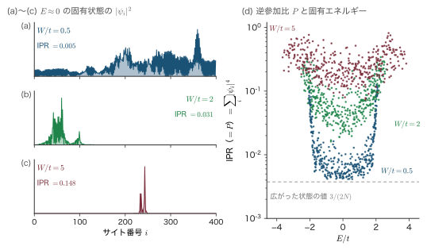
局在長は転送行列（transfer matrix）の方法で精度よく求められる．固有値方程式 $\Ham\psi=E\psi$ を $n$ 番目のサイトについて書くと $-t\psi_{n+1}-t\psi_{n-1}+\varepsilon_n\psi_n=E\psi_n$，これを $\psi_{n+1}$ について解くと
$$ \psi_{n+1}=\frac{\varepsilon_n-E}{t}\,\psi_n-\psi_{n-1} $$となる．隣り合う2つの振幅の組 $(\psi_{n+1},\psi_n)$ を $(\psi_n,\psi_{n-1})$ から作る $2\times2$ の行列を次々に掛けていく計算になるので，転送行列の方法という．エネルギー $E$ が固有値からずれていると，こうして作った解は初期値によらずどちらかの向きに指数関数的に増えてしまう（そのため鎖の両端で $0$ になる固有状態にはならない）．その増え方の速さは，固有状態が中心から離れるにつれて減衰する速さと同じであることが知られている．そこで漸化式を数百万回くり返して，$\abs{\psi_n}$ が $\ee^{n/\xi}$ のように増える長さ $\xi$ を求めれば，それが局在長になる（増え方の速さ $1/\xi$ を Lyapunov（リャプノフ）指数という）．
乱れが弱いときには，局在長を次のように見積もれる（Thouless（サウレス）の摂動論の概略）．波数 $k$ の波（サイト間隔を単位とした波数で，$E=-2t\cos k$）が乱れ $\varepsilon_n$ の1つのサイトで反射される割合（反射確率）は，乱れが弱ければ $\varepsilon_n^2/(4t^2\sin^2k)=\varepsilon_n^2/(4t^2-E^2)$ である．多くのサイトでの反射はでたらめな位相で重なるので，$N$ サイトを通り抜ける透過確率 $\mathcal T_N$ は
$$ \mathcal T_N\approx\exp\Bigl[-\sum_n\frac{\varepsilon_n^2}{4t^2-E^2}\Bigr]=\exp\Bigl[-\frac{N\langle\varepsilon^2\rangle}{4t^2-E^2}\Bigr] $$と指数関数的に減る（$\langle\varepsilon^2\rangle$ は $\varepsilon_n^2$ の平均）．一方，振幅が $\ee^{-n/\xi}$ で減るなら，透過確率（振幅の2乗）は $\ee^{-2N/\xi}$ である．両者を比べて $2/\xi=\langle\varepsilon^2\rangle/(4t^2-E^2)$．幅 $W$ の一様分布の分散 $\langle\varepsilon^2\rangle=W^2/12$ を入れると
が得られる．帯の中央 $E=0$ だけは，第1式の $96t^2/W^2$ が少しずれて $105t^2/W^2$ になる．$E=0$ では $k=\pi/2$ で，波の位相が1サイトごとにちょうど $\pi/2$ ずつ進んで4サイトで元に戻るため，「でたらめな位相で重なる」という仮定が成り立たなくなるからである（Kappus–Wegner（カップス・ヴェグナー）の異常．本書では導かない）．図28.7(a) に示すように，数値計算はこの式とよく一致する．
物理的意味：1次元ではすべての状態が局在する（Mott–Twose）
式 \eqref{eq:28-xi1d} の $\xi$ はどんなに小さな $W$ でも有限である．1次元では，乱れがどんなに弱くてもすべての状態が局在する．これを最初に論じたのは Mott と Twose（トゥーズ，1961）である．1次元の電子は散乱体をよけて通ることができず，すべての散乱体を順に通り抜けなければならない．散乱体ごとに一部が反射され，反射波が干渉して重なっていくので，透過確率は長さとともに指数関数的に減る．局在長 $\xi\propto1/W^2$ が試料の長さより短くなれば，その電線は絶縁体である．弱い乱れでは $\xi$ が非常に長いので，短い試料では金属のように見える．
例題28.8 1次元 Anderson 模型の局在長と逆参加比
(1) $W/t=0.5,\ 2,\ 5$ のとき，帯の中央の局在長 $\xi(0)$ をサイト数で求め，サイト間隔 $a=0.5\,\mathrm{nm}$ として長さに直せ．
(2) 式 \eqref{eq:28-ipr} で $P$ を見積もり，図28.6 の数値実験（$\abs E\lt0.5t$ の状態の $P$ の中央値は，$W/t=0.5,\ 2,\ 5$ でそれぞれ $0.0058,\ 0.036,\ 0.18$）と比べよ．
解答．
(1) $\xi(0)=105t^2/W^2$ より
$$ \begin{aligned} \frac Wt=0.5&:\quad \xi=\frac{105}{0.25}=420\quad(210\,\mathrm{nm})\\ \frac Wt=2&:\quad \xi=\frac{105}{4}=26\quad(13\,\mathrm{nm})\\ \frac Wt=5&:\quad \xi=\frac{105}{25}=4.2\quad(2.1\,\mathrm{nm}) \end{aligned} $$(2) $P=1/(2\xi)$ は $W/t=2$ で $1/52=0.019$，$W/t=5$ で $1/8.4=0.12$．数値実験の中央値 $0.036$，$0.18$ はその1.5〜2倍で，ほぼ $P\approx1/\xi$ である．実際の固有状態は滑らかな指数関数ではなく，振幅が大きく揺らぐ（図28.6）ので，その分だけ $\abs\psi^4$ の和が大きくなる．$W/t=0.5$ では $\xi=420$ が鎖の長さ $N=400$ を超えているので，$P$ は局在長ではなく鎖の長さで決まり，広がった定在波の値 $3/(2N)=0.0038$ に近い．
∎ $W/t=0.5$ の400サイトの鎖は「見かけ上は金属」だが，長さを1桁伸ばせば絶縁体になる．1次元で局在を見るには，局在長より長い試料が必要である．
28.2.4 3次元の Anderson 転移と移動度端
3次元では事情が違う．乱れが小さい（$W\lt W_c$）とき，帯の中央の状態は広がったままで，状態密度の小さい帯の端の状態だけが局在する．その境目のエネルギーが移動度端 $E_c$ である（Mott が1966〜67年に導入した）．乱れを強くすると，上下の移動度端は帯の中央に向かって近づき，$W=W_c$ で中央で出会って，それより強い乱れではすべての状態が局在する．
このことを数値で確かめる手がかりは，準位の間隔の統計である．広がった状態どうしは空間的に重なり合うので，エネルギーが近づくと混ざって反発し，間隔が $0$ に近い組ができにくい．これを準位反発（level repulsion）という（Wigner–Dyson（ウィグナー・ダイソン）統計．成分がでたらめな実対称行列の固有値と同じ性質で，そのような行列の集まりを Gauss 型直交アンサンブル（GOE）と呼ぶ）．局在状態どうしは遠く離れていれば互いを知らないので，準位は独立に並び，間隔は指数分布になる（Poisson（ポアソン）統計）．隣り合う2つの間隔 $s_n,s_{n+1}$ の比
$$ r_n=\frac{\min(s_n,s_{n+1})}{\max(s_n,s_{n+1})} $$を使う．間隔そのものではなく比を使うのは，平均の間隔（状態密度で決まり，エネルギーによって違う）で割り直す手間がいらないからである．比の平均 $\langle r\rangle$ は，両者で $0.53$（広がった状態）と $0.386$（局在状態）になる．
導出：独立な準位（Poisson）の $\langle r\rangle=2\ln2-1$
間隔 $s_1,s_2$ が独立に指数分布 $\ee^{-s}$ に従うとする（平均間隔を単位とする）．$0\le x\le1$ のとき「$r\lt x$」は「$s_1\lt xs_2$」または「$s_2\lt xs_1$」で，両者は同時には起こらない．対称性から
$$ \Pr(r\lt x)=2\Pr(s_1\lt xs_2)=2\int_0^\infty\ee^{-s_2}\left(1-\ee^{-xs_2}\right)\dd s_2=2\left(1-\frac{1}{1+x}\right)=\frac{2x}{1+x} $$$x$ で微分すると分布の密度 $p(r)=\dfrac{2}{(1+r)^2}$．平均は，部分分数 $\dfrac{r}{(1+r)^2}=\dfrac{1}{1+r}-\dfrac{1}{(1+r)^2}$ を使って
$$ \langle r\rangle=\int_0^1\frac{2r}{(1+r)^2}\dd r=2\left[\ln(1+r)+\frac{1}{1+r}\right]_0^1=2\left(\ln2+\frac12-1\right)=2\ln2-1=0.386 $$∎ 広がった状態（GOE）の値 $0.5307$ は，ランダム行列の固有値の数値計算で知られている（Atas（アタス）ら，2013）．
単純立方格子 $L\times L\times L$（$L=6,8,10,12$，周期境界）の Anderson 模型を対角化し，スペクトル中央20% の準位で $\langle r\rangle$ を計算した結果が図28.7(b) である．$W\lesssim15t$ では $L$ が大きいほど $\langle r\rangle$ が広がった状態の値に近づき，$W\gtrsim18t$ では逆に局在状態の値に近づく．曲線の並び順が入れ替わる $W\approx16\,t$ 前後が転移点で（この大きさの計算では，隣り合う $L$ どうしの曲線の交点が $\pm1\,t$ 程度ばらつく），文献値 $W_c\approx16.5\,t$（$W_c/B\approx1.4$）と合う．大きさを変えても変わらない点が転移点になるという考え方は，次の28.2.8項のスケーリングの考え方そのものである．
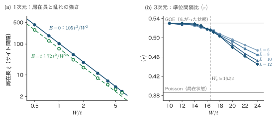
移動度端は伝導を次のように決める．絶対零度で Fermi 準位が移動度端より下（局在状態の領域）にあれば $\sigma=0$．有限温度では，電子が $E_c$ より上の広がった状態へ熱励起されて流れる成分
$$ \sigma\simeq\sigma_0\exp\!\left(-\frac{E_c-E_F}{k_BT}\right) $$と（例題28.5 で使った形），局在状態の間を跳ぶホッピングの成分（28.3節）とが足し合わされる．前者は高温で，後者は低温で勝つ．
28.2.5 数値実験 — 共有結合の鎖の裾とダングリングボンドは局在している
アモルファス半導体に戻ろう．Si の価電子帯と伝導帯は結合・反結合の軌道からできていた（28.1.1項）．これを最も簡単に表すのが，強い結合 $t_1$（共有結合の中）と弱い結合 $t_2$（結合と結合の間）が交互に並ぶ1次元の鎖である．これは第29章29.7節のポリアセチレンの SSH 模型と同じ形の模型でもある．
導出：結合交替鎖のバンドとギャップ
単位胞（長さ $a$）に2つのサイト A，B があり，胞の中の A–B を $t_1$，隣の胞の B–A を $t_2$ が結ぶ．Bloch の定理により $\psi_{A,n}=u_A\ee^{ikna}$，$\psi_{B,n}=u_B\ee^{ikna}$ と置く．サイト $A_n$ の隣は $B_n$（$t_1$）と $B_{n-1}$（$t_2$），サイト $B_n$ の隣は $A_n$（$t_1$）と $A_{n+1}$（$t_2$）だから，固有値方程式は
$$ -t_1u_B-t_2u_B\ee^{-ika}=Eu_A,\qquad -t_1u_A-t_2u_A\ee^{ika}=Eu_B $$2式を掛け合わせると $E^2u_Au_B=\abs{t_1+t_2\ee^{ika}}^2u_Au_B$，すなわち
$$ E=\pm\abs{t_1+t_2\ee^{ika}}=\pm\sqrt{t_1^2+t_2^2+2t_1t_2\cos ka} $$$\cos ka$ が $-1$ から $1$ まで動くので $\abs{t_1-t_2}\le\abs E\le t_1+t_2$．$-$ 符号の帯が結合軌道（価電子帯），$+$ 符号の帯が反結合軌道（伝導帯）に当たり，
$$ E_g=2\abs{t_1-t_2} $$のギャップが開く．∎ ギャップの大きさは強い結合と弱い結合の差だけで決まり，鎖全体の周期性はいらない．$t_2$ をでたらめに変えても，どの $t_2$ も $t_1$ より小さい限りギャップは残る．
この鎖に乱れを入れて数値実験をする．$t_1$ を $\pm15\%$，$t_2$ を $0.2t_1$〜$0.6t_1$ の範囲でばらつかせ，サイトエネルギーにも $\pm0.15t_1$ の乱れを加え，さらに0.4% の割合で強い結合を切る（$t_1=0$：Si–Si 結合が切れて2本のダングリングボンドができることに当たる）．2000サイトの鎖40本を対角化した結果が図28.8 である．
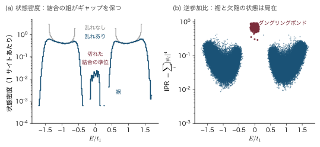
結果は28.1節で述べた a-Si:H の状態密度の模型（図28.4）の骨格をそのまま再現している．(i) 周期性がなくても，結合の組がギャップを保つ．(ii) 乱れはバンドの端に裾を作り，(iii) 裾の状態は帯の中央より強く局在する．(iv) 切れた結合は1本につき2個の準位をギャップの中央に作り，それは非常に強く局在している．(iv) の局在の強さは解析的にもわかる．切れた結合の端のサイトの状態は $E=0$ の解で，鎖の内側へ向かって1胞ごとに振幅が $t_2/t_1$ 倍になる（$E=0$ の方程式 $t_1\psi_{A,n}+t_2\psi_{A,n+1}=0$ から）．$t_2/t_1=0.4$ なら局在長は $a/\ln(t_1/t_2)=1.1a$，逆参加比は $(1-0.4^2)^2/(1-0.4^4)=0.72$ で，数値実験の中央値 $0.71$ と合う．1次元なのでどの状態も局在するが（28.2.3項），3次元では裾の局在した状態と帯の中の広がった状態の境が，移動度端という鋭い境界になる．
28.2.6 Ioffe–Regel 条件 — 平均自由行程は波長より短くなれない
局在とふつうの散乱の境目を，散乱の強さの側から見てみよう．Drude の伝導度を Fermi 波数 $k_F$ と平均自由行程 $\ell$ で書き直す．
導出：$\sigma=\dfrac{e^2}{3\pi^2\hbar}\,k_F^2\ell$
Drude の式は $\sigma=ne^2\tau/m^*$（第15章15.6節）．平均自由行程は Fermi 速度 $v_F=\hbar k_F/m^*$ と緩和時間 $\tau$ の積 $\ell=v_F\tau=\hbar k_F\tau/m^*$ だから，$\tau/m^*=\ell/(\hbar k_F)$．また Fermi 球の体積から $n=k_F^3/(3\pi^2)$（第15章15.2節，スピンの2を含む）．代入して
∎ 伝導度は量子 $e^2/\hbar$ と，無次元の組 $k_F\ell$ で書ける．
Boltzmann 方程式や Drude の描像（第21章21.4節）は，電子が衝突と衝突の間に何波長も進む「波束」として扱えることを前提にしている．つまり $k_F\ell\gg1$ が必要である．Ioffe と Regel（1960）は，平均自由行程が波長（あるいは原子間隔）より短くなることは意味をなさないと指摘した．波は少なくとも1波長進まなければ「進む波」とは言えないからである．散乱が強くなって
に達すると，伝導を散乱の重ね合わせとして描くことができなくなる．これが Ioffe–Regel 条件で，局在が始まる目安である．
例題28.9 $k_F\ell$ を評価する — GaAs と a-Si:H
(1) 電子密度 $n=1\times10^{18}\,\mathrm{cm^{-3}}$，移動度 $\mu=2500\,\mathrm{cm^2/(V\,s)}$ の n 型 GaAs（$m^*=0.067m$）について $k_F$，$\tau$，$\ell$，$k_F\ell$ を求めよ．
(2) a-Si:H の伝導帯の移動度端の上の電子は，移動度 $\mu\approx10\,\mathrm{cm^2/(V\,s)}$ で動くとされる．質量を $m$，エネルギーを $k_BT$（室温）として $k\ell$ を見積もれ．
解答．
(1) まず SI 単位に直す：$n=10^{18}\,\mathrm{cm^{-3}}=10^{24}\,\mathrm{m^{-3}}$，$\mu=2500\,\mathrm{cm^2/(V\,s)}$ は $2500\times10^{-4}\,\mathrm{m^2/(V\,s)}=0.25\,\mathrm{m^2/(V\,s)}$，$m^*=0.067\times9.109\times10^{-31}\,\mathrm{kg}=6.10\times10^{-32}\,\mathrm{kg}$．
$$ k_F=(3\pi^2n)^{1/3}=(2.96\times10^{25})^{1/3}=3.09\times10^{8}\,\mathrm{m^{-1}} $$ $$ \tau=\frac{\mu m^*}{e}=\frac{0.25\times6.10\times10^{-32}}{1.602\times10^{-19}}=9.5\times10^{-14}\,\mathrm{s} $$ $$ v_F=\frac{\hbar k_F}{m^*}=\frac{1.055\times10^{-34}\times3.09\times10^8}{6.10\times10^{-32}}=5.3\times10^5\,\mathrm{m/s} $$したがって
$$ \ell=v_F\tau=5.3\times10^5\times9.5\times10^{-14}=5.1\times10^{-8}\,\mathrm{m}=51\,\mathrm{nm} $$ $$ k_F\ell=3.09\times10^8\times5.1\times10^{-8}=16 $$（確かめ：式 \eqref{eq:28-kfl} は $ne\mu=4.0\times10^4\,\mathrm{S/m}$ と同じ値を与える．）
(2) $\mu=10\,\mathrm{cm^2/(V\,s)}$ を $10\times10^{-4}\,\mathrm{m^2/(V\,s)}=10^{-3}\,\mathrm{m^2/(V\,s)}$ に直して
$$ \tau=\frac{\mu m}{e}=\frac{10^{-3}\times9.109\times10^{-31}}{1.602\times10^{-19}}=5.7\times10^{-15}\,\mathrm{s} $$$\frac12mv^2=k_BT$（室温で $k_BT=4.14\times10^{-21}\,\mathrm{J}$）から
$$ v=\sqrt{\frac{2k_BT}{m}}=\sqrt{\frac{2\times4.14\times10^{-21}}{9.109\times10^{-31}}}=9.5\times10^4\,\mathrm{m/s} $$$\ell=v\tau=5.4\times10^{-10}\,\mathrm{m}=5.4\,\text{Å}$，$k=mv/\hbar=8.2\times10^{8}\,\mathrm{m^{-1}}$ より
$$ k\ell=8.2\times10^8\times5.4\times10^{-10}\approx0.4 $$∎ GaAs の伝導電子は $k_F\ell=16$ で，Drude の描像が十分使える．a-Si:H の移動度端の電子は $k\ell\sim1$，Ioffe–Regel の限界ちょうどで動いている．移動度 $10\,\mathrm{cm^2/(V\,s)}$ 程度という値は，広がった状態として動ける最も小さい移動度に近い．
28.2.7 Mott の最小金属伝導度
Mott は，3次元で Fermi 準位が移動度端を横切るとき，伝導度は有限の値から $0$ へ不連続に落ちると考えた．広がった状態にある限り $k_F\ell\gtrsim1$ なので，伝導度はある最小値より小さくなれない，という論法である．この最小値を最小金属伝導度（minimum metallic conductivity）$\sigma_{\min}$ と呼ぶ．大きさを2通りに見積もってみよう．
Ioffe–Regel からの粗い見積もり．式 \eqref{eq:28-kfl} で，平均自由行程を最小の $\ell\approx a$，帯の中央の波数を $k_F\approx\pi/a$ とすると
$$ \sigma\approx\frac{e^2}{3\pi^2\hbar}\left(\frac\pi a\right)^2a=\frac{e^2}{3\hbar a}\approx0.33\,\frac{e^2}{\hbar a} $$導出：Mott の論法 — Kubo–Greenwood の式と「でたらめな位相」
（この導出は少し込み入っている．初めて読むときは，結論の式 \eqref{eq:28-sigmamin} と例題28.10 の数値まで飛ばしてよい．）
出発点．独立な電子の伝導度は，固有状態の間の速度の行列要素で書ける．これを Kubo–Greenwood の公式という（久保亮五と Greenwood（グリーンウッド）による．久保公式を固有状態で表したもの．線形応答理論入門 第7章7.8）．中身は「エネルギーのほぼ等しい2つの状態の組の数（状態密度の2乗）」×「その2つの状態の間の遷移の強さ（行列要素の2乗）」で，Fermi の黄金律（量子力学 第51章51.2）と同じ形をしている．絶対零度・直流では
$$ \sigma=\frac{2\pi e^2\hbar^3\Omega}{m^2}\,\overline{\abs{D}^2}\,N(E_F)^2,\qquad D=\int\psi_E^*\frac{\partial}{\partial x}\psi_{E'}\,\dd^3r $$$\Omega$ は試料の体積，$N(E_F)$ は単位体積・単位エネルギーあたり・スピン1方向あたりの状態密度，$\overline{\abs D^2}$ は $E_F$ のすぐ近くの2つの状態 $E,E'$ についての平均である（因子2はスピンの和）．
仮定1：行列要素．原子軌道 $\ket n$（位置 $x_n$）で $\psi_E=\sum_nc_n\ket n$ と展開する．$[x,\Ham]=i\hbar p_x/m$ と $\partial/\partial x=(i/\hbar)p_x$ より $\partial/\partial x=(m/\hbar^2)[x,\Ham]$．これを隣り合う軌道で挟むと $\bra n\partial_x\ket{n'}=(m/\hbar^2)(x_n-x_{n'})\bra n\Ham\ket{n'}$．$x$ 方向の隣（距離 $a$）では $\bra n\Ham\ket{n'}=-t$ なので大きさは $mat/\hbar^2$ である．
仮定2：でたらめな位相．転移のすぐ近くの広がった状態では，$\abs{c_n}^2\approx1/N_s$（$N_s=\Omega/a^3$ はサイトの数）で，係数の位相がサイトごとにでたらめだとする．すると $D=\sum_{n,n'}c_n^*c'_{n'}\bra n\partial_x\ket{n'}$ の2乗の平均では異なる組の交差項が消え，$x$ 方向の隣の組（各サイトに2つ，計 $2N_s$ 組）だけが残る：
$$ \overline{\abs D^2}=2N_s\cdot\frac{1}{N_s}\cdot\frac{1}{N_s}\left(\frac{mat}{\hbar^2}\right)^2=\frac{2a^3}{\Omega}\left(\frac{mat}{\hbar^2}\right)^2 $$仮定3：状態密度．乱れが帯の幅より大きい（$W\gtrsim B$）とき，1サイトに1つ（スピン1方向あたり）の状態がエネルギー幅 $W$ に散らばるので，$N(E_F)\approx1/(Wa^3)$．
計算．3つを代入すると
$$ \sigma=\frac{2\pi e^2\hbar^3\Omega}{m^2}\cdot\frac{2a^3}{\Omega}\frac{m^2a^2t^2}{\hbar^4}\cdot\frac{1}{W^2a^6}=\frac{4\pi e^2t^2}{\hbar W^2a}=4\pi\left(\frac tW\right)^2\frac{e^2}{\hbar a} $$この式は乱れが減るほど大きくなるので，最も小さいのは広がった状態が許される最大の乱れ，すなわち転移点 $W=W_c$ のときである．単純立方格子で $W_c\approx16.5t$ なら係数は $4\pi/16.5^2=0.046$，Mott の時代の見積もり（$W_c/B\approx2$）なら $4\pi/24^2=0.022$ になる．
∎ Mott はこの係数を $0.026$ とした．数係数は $0.02$〜$0.05$ の幅を持つが，$e^2/\hbar a$ という組み合わせが本質である．
例題28.10 最小金属伝導度の数値
(1) $a=3\,\text{Å}$ のとき，式 \eqref{eq:28-sigmamin} の $\sigma_{\min}$ を $\Omega^{-1}\mathrm{cm^{-1}}$ で求めよ．
(2) Si:P の不純物帯で，サイト間隔を臨界濃度 $n_c=3.7\times10^{18}\,\mathrm{cm^{-3}}$ のドナー間隔 $a=n_c^{-1/3}$ としたときの $\sigma_{\min}$ を求めよ．
解答．まずコンダクタンスの量子を計算しておく：
$$ \frac{e^2}{\hbar}=\frac{(1.602\times10^{-19})^2}{1.055\times10^{-34}}=2.434\times10^{-4}\,\mathrm{S}\quad\Bigl(=\frac{1}{4108\,\Omega}\Bigr) $$(1)
$$ \sigma_{\min}=0.03\times\frac{2.434\times10^{-4}\,\mathrm{S}}{3\times10^{-10}\,\mathrm{m}}=0.03\times8.11\times10^{5}\,\mathrm{S/m}=2.4\times10^{4}\,\mathrm{S/m}=2.4\times10^{2}\,\Omega^{-1}\mathrm{cm^{-1}} $$係数を $0.02$〜$0.05$ とすれば $1.6\times10^2$〜$4\times10^2\,\Omega^{-1}\mathrm{cm^{-1}}$，抵抗率では数 $\mathrm{m\Omega\,cm}$ である．
(2) $a=(3.7\times10^{18})^{-1/3}\,\mathrm{cm}=6.5\times10^{-7}\,\mathrm{cm}=6.5\,\mathrm{nm}$．
$$ \sigma_{\min}=0.03\times\frac{2.434\times10^{-4}}{6.5\times10^{-9}}\,\mathrm{S/m}=1.1\times10^{3}\,\mathrm{S/m}=11\,\Omega^{-1}\mathrm{cm^{-1}} $$∎ (1) の値は，a-Si:H の活性化型伝導の前因子 $\sigma_0\approx10^2\,\Omega^{-1}\mathrm{cm^{-1}}$ 程度（例題28.5）と同じ桁である．移動度端の電子の伝導は「最小金属伝導度で走る電子が熱で励起されている」と見ることができる．ただし次項で述べるように，$\sigma_{\min}$ という「床」そのものはスケーリング理論によって否定された．
28.2.8 スケーリング理論 — $\beta$ 関数
Abrahams・Anderson・Licciardello・Ramakrishnan（エイブラハムズ・アンダーソン・リッチャルデッロ・ラマクリシュナン，1979）は，Thouless の考えを発展させ，試料の大きさ $L$ を変えたときに伝導がどう変わるかで局在を判定した（局在のスケーリング理論）．一辺 $L$ の $d$ 次元の立方体のコンダクタンス $G$（抵抗の逆数．物質の性質である伝導度 $\sigma$ とは別の量）は，伝導度 $\sigma$ に断面積 $L^{d-1}$ を掛けて長さ $L$ で割ったもので
$$ G=\sigma\,\frac{L^{d-1}}{L}=\sigma L^{d-2} $$である．これをコンダクタンスの量子 $e^2/\hbar$ で割った無次元の量 $g=G/(e^2/\hbar)$ を無次元コンダクタンスという．スケーリング理論の仮定は，$g$ が $L$ とともにどう変わるかは，そのときの $g$ の値だけで決まるということである．その変わり方を
と書き，$\beta$ 関数と呼ぶ．その形を図28.9 に示す．途中の形は理論だけでは決まらないが，両端の形は決まる．
- $g$ が大きいとき（よい金属）．オーム則 $\sigma$ 一定なので $g\propto L^{d-2}$，$\ln g=(d-2)\ln L+\text{定数}$ を $\ln L$ で微分して $\beta=d-2$．
- $g$ が小さいとき（局在）．コンダクタンスは試料を通り抜ける波動関数の重なりで決まり $g=g_0\ee^{-L/\xi}$．$\ln g=\ln g_0-L/\xi$ を $\ln L$ で微分すると $\dd(-L/\xi)/\dd\ln L=-L/\xi=\ln(g/g_0)$，すなわち $\beta=\ln(g/g_0)\lt0$．
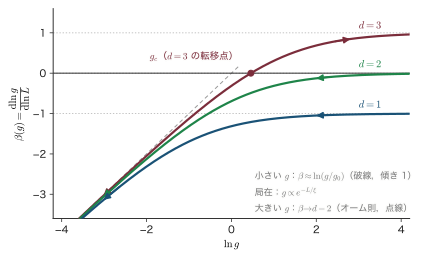
$\beta$ が $g$ について連続で単調だと仮定すると，次の結論が出る．
- 1次元と2次元では，すべての状態が局在する．$\beta\lt0$ なので $L$ を大きくすると $g$ は必ず小さくなる（スピン軌道相互作用が強い場合を除く．そのときは2次元の $\beta$ が大きい $g$ で正になり得る）．
- 3次元の転移は連続である．$\beta(g_c)=0$ の近くで $\beta$ を直線で近似する．$x\equiv\ln(g/g_c)$ と書くと $\beta=\dd x/\dd\ln L\approx s\,x$（$s$ は $g_c$ での傾き）で，これを解くと $x=x_0(L/L_0)^s$（$x_0$ は最初の大きさ $L_0$ での値）．$x$ は $L$ とともに冪で増え，$g$ が $g_c$ からはっきり離れる（$\abs x\sim1$ になる）長さ $\xi$ は $\abs{x_0}(\xi/L_0)^s\sim1$ から $\xi\sim L_0\abs{x_0}^{-1/s}$ である．転移点からのずれ（エネルギーなら $E-E_c$）が小さいとき $x_0\propto E-E_c$ なので，$\xi\propto\abs{E-E_c}^{-\nu}$，$\nu=1/s$ となる．この $\xi$ を相関長という（絶縁体側では局在長に一致するので，同じ記号を使う）．金属側では $L\approx\xi$ で $g\approx g_c$，それより大きい $L$ ではオーム則に移るので，$G(\xi)=g_c\,e^2/\hbar=\sigma\xi$（3次元では $G=\sigma L$）より
となり，伝導度は転移点に向かって連続的に $0$ に近づく．$\sigma_{\min}$ という不連続な「床」は存在しない．3次元の Anderson 模型の数値計算では $\nu\approx1.6$ が得られている．Mott の論法の弱点は「転移のすぐ近くでも波動関数の振幅はどのサイトでも同じ程度」と仮定した点にあった．実際には転移に近づくと波動関数は激しく揺らぎ，Kubo–Greenwood の式の平均値がいくらでも小さくなれる．
定理28.1 局在のスケーリング理論の帰結（Abrahams・Anderson・Licciardello・Ramakrishnan）
無次元コンダクタンス $g$ の大きさ依存性 $\beta(g)=\dd\ln g/\dd\ln L$ が $g$ だけで決まる連続で単調な関数であり，$g\to\infty$ で $d-2$，$g\to0$ で $\ln(g/g_0)$ に近づくと仮定すると，
- $d=1,2$ では（スピン軌道相互作用がなければ）乱れがどんなに弱くても，十分大きな試料ではすべての状態が局在する．
- $d=3$ では $\beta(g_c)=0$ の不安定な固定点が金属と絶縁体を分け，転移は連続である：伝導度は $\sigma\propto(E-E_c)^{\nu}$ で $0$ に近づき，有限の最小金属伝導度は存在しない．
28.2.9 弱局在 — 時間反転した経路の干渉
現象．局在の「芽」は，$k_F\ell\gg1$ のよい金属にもすでにある．乱れた金属の薄膜や細線を極低温まで冷やすと抵抗がわずかに増え，そこに弱い磁場をかけると抵抗が下がる（負の磁気抵抗）．ふつうの金属では磁場をかけると抵抗は上がるので，これは目立った現象である．
考え方．電子が出発点に戻ってくる閉じた経路を考えると，同じ経路を逆回りにたどる波（時間反転した経路）がある．2つの波の振幅を $A_1,A_2$ とすると，出発点に戻る確率は $\abs{A_1+A_2}^2=\abs{A_1}^2+\abs{A_2}^2+2\,\mathrm{Re}(A_1^*A_2)$．時間反転の対称性があれば両者は同じ経路長・同じ散乱を経るので $A_1=A_2$ で，確率は古典的な $2\abs{A}^2$ ではなく $4\abs{A}^2$，ちょうど2倍になる．後ろへ戻りやすくなる分だけ伝導度が下がる．これを弱局在（weak localization）といい，強い局在の前ぶれである．磁場をかけると（この項だけ $B$ は磁束密度を表す），2つの経路は同じ輪を逆向きに回るので，輪を貫く磁束 $\Phi$（磁束密度×輪の面積）に応じて Aharonov–Bohm（アハラノフ・ボーム）の位相差 $2e\Phi/\hbar$ が生じ，干渉が壊れて伝導度が上がる．これが負の磁気抵抗の正体である．
数値．位相が保たれる長さ（位相緩和長）を $L_\varphi$ とすると，干渉に効く輪の大きさは $L_\varphi$ 程度なので，位相差 $2e\Phi/\hbar\approx2eBL_\varphi^2/\hbar$ が1の程度になる磁場の目安は $B\sim\hbar/(eL_\varphi^2)$（数係数は除く）で，$L_\varphi=1\,\mu\mathrm{m}$ なら $0.66\,\mathrm{mT}$ と非常に小さい．光でも，乱れた媒質からの後方散乱が真後ろでだけ2倍に強まる現象（コヒーレント後方散乱）として1984〜85年に観測された．
28.3 変動範囲ホッピング伝導
28.3.1 局在した電子はどう動くか — フォノン支援ホッピング
蒸着した a-Ge や a-Si の膜の伝導度を低温まで測ると，$\ln\sigma$ は $1/T$ に対して直線にならず（活性化型でなく），$T^{-1/4}$ に対して直線になる．Fermi 準位がダングリングボンドの局在準位の中にあるので，電子は局在状態から局在状態へ跳び移って電流を運んでいるのである．これをホッピング伝導（hopping conduction）という．
エネルギー $E_i$ の局在状態 $i$ から，距離 $R$ だけ離れたエネルギー $E_j$ の局在状態 $j$ へ電子が移るには2つのことが必要である．第一に，2つの波動関数が重なっていなければならない．第二に，$E_j\gt E_i$ ならエネルギーの差 $\Delta E=E_j-E_i$ をどこかからもらわなければならない．もらう相手はフォノンである．
導出：Miller–Abrahams（ミラー・エイブラハムズ）のホッピング率
トンネルの因子．局在状態の波動関数は中心から $\abs\psi\propto\ee^{-r/\xi}$ と減るので，距離 $R$ 離れた2つの状態の重なり（遷移の行列要素）は $\ee^{-R/\xi}$ に比例する．Fermi の黄金律（量子力学 第51章51.2）では遷移率は行列要素の2乗に比例するから，因子は $\ee^{-2R/\xi}$ である．
フォノンの因子．上向きの跳び（$\Delta E\gt0$）では，エネルギー $\Delta E$ のフォノンを1個吸収する．その確率はフォノンの数 $n_B=1/(\ee^{\Delta E/k_BT}-1)$（Planck（プランク）分布，第14章14.1節）に比例し，$\Delta E\gg k_BT$ なら $n_B\approx\ee^{-\Delta E/k_BT}$．下向きの跳びではフォノンを放出すればよく，この因子はほぼ1である．
2つを掛け，フォノンの振動数程度の比例係数 $\nu_0$（$10^{12}$〜$10^{13}\,\mathrm{s^{-1}}$）を付けると
∎ これが Miller–Abrahams（ミラー・エイブラハムズ，1960）のホッピング率である．遠いほど，上り坂が急なほど，跳びにくい．
28.3.2 最近接ホッピングと，低温でのその破綻
局在状態の密度が $N$ なら，最も近い状態までの距離は $R_{nn}\sim N^{-1/3}$ である．いつも最も近い状態へ跳ぶとすると，そのエネルギー差は局在状態のエネルギーの広がり程度の決まった値 $\varepsilon$ を取るので，
$$ \sigma\propto\exp\!\left(-\frac{2R_{nn}}{\xi}\right)\exp\!\left(-\frac{\varepsilon}{k_BT}\right) $$と，決まった活性化エネルギー $\varepsilon$ を持つ Arrhenius（アレニウス）型になる．これを最近接ホッピング（nearest-neighbor hopping）といい，28.5節の不純物伝導の $\varepsilon_3$ 伝導がこれに当たる．
しかし温度が下がると $\ee^{-\varepsilon/k_BT}$ は急速に小さくなる．そうなると，少し遠くてもエネルギーのより近い状態を探して跳んだほうが得になる．遠くまで探すほど候補の数が増え，エネルギーの近い状態が見つかりやすくなるからである．跳ぶ距離が温度とともに変わるこの伝導を，変動範囲ホッピング（variable-range hopping，VRH）という．その考え方を図28.10 に示す．
28.3.3 Mott の変動範囲ホッピング — $T^{-1/4}$ 則の導出
導出：Mott の $T^{-1/4}$ 則
ステップ1：$R$ 以内で見つかる最も近いエネルギー．$E_F$ のまわりの局在状態の密度（単位体積・単位エネルギーあたり）を $N(E_F)$ とし，$E_F$ の近くでは一定とする．出発点から半径 $R$ の球の中で，エネルギーが $E_F$ から $E_F+\Delta E$ の範囲にある状態の数は $\frac{4\pi}{3}R^3N(E_F)\Delta E$．これがちょうど1個になる $\Delta E$ が，距離 $R$ まで探したときに見つかる最も近いエネルギー差である：
ステップ2：指数を最小にする．式 \eqref{eq:28-ma} の指数（の符号を変えたもの）は
$$ f(R)=\frac{2R}{\xi}+\frac{\Delta E(R)}{k_BT}=\frac{2R}{\xi}+\frac{3}{4\pi N(E_F)k_BT}\,\frac{1}{R^3} $$第1項は $R$ とともに増え，第2項は減るので最小値がある．$R$ で微分して $0$ と置く：
$$ \frac{\dd f}{\dd R}=\frac2\xi-\frac{9}{4\pi N(E_F)k_BT}\,\frac{1}{R^4}=0 \qquad\Longrightarrow\qquad R_{\mathrm{opt}}=\left[\frac{9\,\xi}{8\pi N(E_F)k_BT}\right]^{1/4} $$ステップ3：最小値を計算する．最適条件 $\frac{9}{4\pi N k_BT R^4}=\frac2\xi$ を使うと，第2項は
$$ \frac{3}{4\pi Nk_BTR^3}=\frac{R}{3}\cdot\frac{9}{4\pi Nk_BTR^4}=\frac R3\cdot\frac2\xi=\frac{2}{3}\,\frac{R}{\xi} $$となる（第1項 $2R/\xi$ のちょうど3分の1）．したがって
$$ f_{\min}=\frac{2R_{\mathrm{opt}}}{\xi}+\frac23\frac{R_{\mathrm{opt}}}{\xi}=\frac83\,\frac{R_{\mathrm{opt}}}{\xi} =\frac83\left[\frac{9}{8\pi N(E_F)k_BT\xi^3}\right]^{1/4} =\left[\left(\frac83\right)^4\frac{9}{8\pi}\,\frac{1}{N(E_F)k_BT\xi^3}\right]^{1/4} $$数係数は $(8/3)^4\times9/(8\pi)=\frac{4096}{81}\cdot\frac{9}{8\pi}=\frac{512}{9\pi}=18.1$．
ステップ4：伝導度．伝導度は最も跳びやすい跳び方の率で決まると考えて $\sigma\propto\ee^{-f_{\min}}$：
∎ これが Mott の $T^{-1/4}$ 則（1969）である．最適な跳びの距離とエネルギーは，$f_{\min}=(T_0/T)^{1/4}$ を使って
$$ R_{\mathrm{opt}}=\frac38\,\xi\left(\frac{T_0}{T}\right)^{1/4},\qquad \Delta E_{\mathrm{opt}}=\frac14\,k_BT\left(\frac{T_0}{T}\right)^{1/4} $$と書ける（第2項が $f_{\min}$ の4分の1であることから）．温度が下がると，跳ぶ距離は $T^{-1/4}$ で長くなり，エネルギー差は $T^{3/4}$ で小さくなる．
定理28.2 Mott の変動範囲ホッピング
Fermi 準位のまわりの局在状態の密度 $N(E_F)$ が一定で，局在長が $\xi$ のとき，低温のホッピング伝導度は
$$ \sigma=\sigma_0\exp\!\left[-\left(\frac{T_0}{T}\right)^{1/4}\right],\qquad T_0=\frac{\beta_M}{k_BN(E_F)\xi^3}\quad(\beta_M\approx16\text{〜}21) $$に従う．最適な跳びの距離は $R_{\mathrm{opt}}=\frac38\xi(T_0/T)^{1/4}$，エネルギー差は $\Delta E_{\mathrm{opt}}=\frac14k_BT(T_0/T)^{1/4}$ で，$d$ 次元では指数 $1/4$ が $1/(d+1)$ に変わる．
注意：数係数 $\beta_M$ は導き方で変わる
上の導出は「1個見つかる」という粗い数え方を使った．上向きと下向きの跳びの両方を数える，状態の分布の揺らぎを考える，などで係数は変わり，浸透理論（ネットワークのどこかに必ず抵抗の大きな「関門」があり，それが全体を律するという考え方．28.5.3項）を使った評価では $\beta_M\approx21$ になる．文献では16〜21程度の値が使われている．指数 $1/4$ は数え方によらないが，$T_0$ から $N(E_F)\xi^3$ を出すときには係数の選び方で2割ほどの違いが出ることに注意する．また導出が成り立つには $R_{\mathrm{opt}}\gt\xi$，すなわち $(T_0/T)^{1/4}\gt8/3$ が必要で，さらに $\Delta E_{\mathrm{opt}}$ が状態密度を一定とみなせる範囲に収まっていなければならない．
次の例題28.11 の数値で，指数 $f(R)$ の最小化と伝導度の温度依存性を描いたのが図28.11 である．
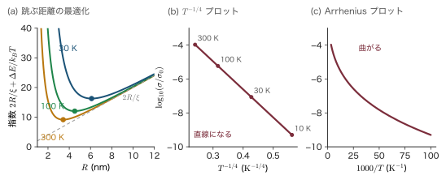
例題28.11 $T_0$ と最適なホッピングの距離
局在長 $\xi=1\,\mathrm{nm}$，Fermi 準位での状態密度 $N(E_F)=10^{20}\,\mathrm{eV^{-1}cm^{-3}}$ のアモルファス半導体について，(1) $T_0$ を求めよ．(2) $T=100\,\mathrm{K}$ で $(T_0/T)^{1/4}$，$\sigma/\sigma_0$，$R_{\mathrm{opt}}$，$\Delta E_{\mathrm{opt}}$ を求め，$\Delta E_{\mathrm{opt}}$ を $k_BT$ と比べよ．
解答．
(1) 単位をそろえる．$N(E_F)=10^{20}\,\mathrm{eV^{-1}cm^{-3}}=10^{26}\,\mathrm{eV^{-1}m^{-3}}$，$\xi^3=10^{-27}\,\mathrm{m^3}$ なので $N(E_F)\xi^3=0.1\,\mathrm{eV^{-1}}$．$k_B=8.617\times10^{-5}\,\mathrm{eV/K}$ を使って
$$ T_0=\frac{18.1}{k_BN(E_F)\xi^3}=\frac{18.1}{8.617\times10^{-5}\,\mathrm{eV/K}\times0.1\,\mathrm{eV^{-1}}}=\frac{18.1}{8.617\times10^{-6}}\,\mathrm{K}=2.1\times10^{6}\,\mathrm{K} $$(2) $T_0/T=2.1\times10^4$ で，その4乗根は $(2.1\times10^4)^{1/4}=12.0$．
$$ \frac{\sigma}{\sigma_0}=\ee^{-12.0}=5.9\times10^{-6},\qquad R_{\mathrm{opt}}=\frac38\times1\,\mathrm{nm}\times12.0=4.5\,\mathrm{nm} $$ $$ \Delta E_{\mathrm{opt}}=\frac14\times8.62\,\mathrm{meV}\times12.0=26\,\mathrm{meV} $$$k_BT=8.62\,\mathrm{meV}$ の約3倍である．確かめに，距離 $R_{\mathrm{opt}}$ 以内・幅 $\Delta E_{\mathrm{opt}}$ に入る状態の数を数えると
$$ \frac{4\pi}{3}R^3N\Delta E=4.19\times(4.5\times10^{-7}\,\mathrm{cm})^3\times10^{20}\,\mathrm{eV^{-1}cm^{-3}}\times0.026\,\mathrm{eV}=1.0 $$で，ちょうど1個になっている．
∎ 電子は局在長の4.5倍も離れた状態へ跳ぶ．$T_0$ が $10^6\,\mathrm{K}$ と途方もなく大きく見えるのは，$T^{-1/4}$ という弱い温度依存性を指数に書くためである．実際の伝導度の変化は $300\,\mathrm{K}$ から $30\,\mathrm{K}$ までで $\ee^{-9.2}$ から $\ee^{-16.3}$，約3桁である．
28.3.4 $d$ 次元の変動範囲ホッピング
薄い膜（2次元）や細い線（1次元）では，指数 $1/4$ が変わる．式 \eqref{eq:28-dE} の球の体積を $d$ 次元の「球」の体積 $V_dR^d$（$V_1=2$，$V_2=\pi$，$V_3=4\pi/3$）に置き換え，$N_d$ を $d$ 次元の状態密度とすると $\Delta E=1/(V_dR^dN_d)$ で
$$ f(R)=\frac{2R}{\xi}+\frac{1}{V_dN_dk_BT}\,\frac{1}{R^d},\qquad \frac{\dd f}{\dd R}=\frac2\xi-\frac{d}{V_dN_dk_BT}\,\frac{1}{R^{d+1}}=0 \quad\Longrightarrow\quad R_{\mathrm{opt}}^{\,d+1}=\frac{d\,\xi}{2V_dN_dk_BT} $$このとき第2項は第1項の $1/d$ になる（ステップ3と同じ計算）ので $f_{\min}=\frac{2}{\xi}\left(1+\frac1d\right)R_{\mathrm{opt}}\propto T^{-1/(d+1)}$．したがって
3次元で $1/4$，2次元で $1/3$，1次元で $1/2$ である（$d=3$ に戻すと前項の結果と一致する）．ただし1次元では，跳び越えられないほど遠い「すき間」（状態がたまたま少ない区間）が長い鎖のどこかに必ずあり，電子はそこを迂回できないので，それが全体を律する．そのため伝導度が鎖の長さにも依るようになり，式 \eqref{eq:28-vrh-d} はそのままでは使えない（本書では扱わない）．
28.3.5 Efros–Shklovskii — Coulomb ギャップと $T^{-1/2}$ 則
Mott の導出では電子どうしの Coulomb 相互作用を無視した．しかし局在した電子は遮蔽されにくい．電子が状態 $i$ から $j$ に移ると，後に正の「穴」が残り，跳んだ電子との間に引力が働く．Efros と Shklovskii（1975）は，この相互作用が Fermi 準位の近くの状態密度を大きく変えることを示した．
導出：Coulomb ギャップと $T^{-1/2}$ 則（概略）
ステップ1：安定性の条件．基底状態では，詰まった状態 $i$（$E_i\lt E_F$）の電子を空の状態 $j$（$E_j\gt E_F$）に移してもエネルギーが下がってはならない．移すのに要るエネルギーは，状態のエネルギー差から電子と穴の引力を引いたもので
$$ \Delta_{ij}=E_j-E_i-\frac{e^2}{4\pi\epsilon_0\epsilon_sr_{ij}}\gt0 $$ステップ2：$E_F$ の近くの状態は互いに遠い．$E_F$ から $\pm\varepsilon$ 以内にある状態を2つ（詰まったもの $i$ と空のもの $j$）取ると $E_j-E_i\lt2\varepsilon$．安定性の条件から $e^2/(4\pi\epsilon_0\epsilon_sr_{ij})\lt2\varepsilon$，すなわち $r_{ij}\gt e^2/(8\pi\epsilon_0\epsilon_s\varepsilon)$．このような状態の密度は1個あたりの体積 $r_{ij}^3$ の逆数を超えられないので
$$ \int_{-\varepsilon}^{\varepsilon}N(E)\,\dd E\lesssim\left(\frac{8\pi\epsilon_0\epsilon_s\varepsilon}{e^2}\right)^3\propto\varepsilon^3 $$（$N(E)$ は状態密度で，ここでは $E$ を $E_F$ から測る．）両辺を $\varepsilon$ で微分すると $N(E)\propto E^2$．Fermi 準位で状態密度が $0$ になり，そのまわりで $E^2$ で増える．これを Coulomb ギャップという．
ステップ3：変動範囲ホッピング．$N(E)\propto E^2$ を使うと，距離 $R$ 以内・エネルギー $\pm\Delta E$ 以内の状態の数は $R^3\Delta E^3$ に比例する．これが1になるのは $R\Delta E$ がある定数のときだから，$\Delta E\approx C_1e^2/(4\pi\epsilon_0\epsilon_sR)$（$C_1$ は1程度の数）．つまり見つかるエネルギー差は「その距離での Coulomb エネルギー」そのものになる．指数は
$$ f(R)=\frac{2R}{\xi}+\frac{C_1e^2}{4\pi\epsilon_0\epsilon_sk_BT}\,\frac1R $$$f=aR+b/R$ の形の関数は $R=\sqrt{b/a}$ で最小値 $2\sqrt{ab}$ をとる．$a=2/\xi$，$b=C_1e^2/(4\pi\epsilon_0\epsilon_sk_BT)$ を入れて
$$ f_{\min}=2\sqrt{\frac{2C_1e^2}{4\pi\epsilon_0\epsilon_s\xi k_BT}}=\left(\frac{T_{ES}}{T}\right)^{1/2} $$∎ 指数は次元によらず $1/2$ になる．数係数 $\beta_{ES}$ は浸透理論による値である．
Coulomb ギャップの幅は有限なので，温度が高く最適な跳びのエネルギー $\Delta E_{\mathrm{opt}}$ がギャップの幅より大きいうちは Mott の $T^{-1/4}$ 則が成り立ち，低温で $\Delta E_{\mathrm{opt}}$ がギャップの中に入ると Efros–Shklovskii の $T^{-1/2}$ 則に移る．
例題28.12 Efros–Shklovskii の $T_{ES}$
Si（$\epsilon_s=11.7$）中の不純物帯で，局在長が $\xi=10\,\mathrm{nm}$ のとき $T_{ES}$ を求めよ．$T=4\,\mathrm{K}$ と $1\,\mathrm{K}$ での $\sigma/\sigma_0$ はいくらか．
解答．$e^2/(4\pi\epsilon_0)=1.440\,\mathrm{eV\,nm}$ を使うと，$\xi=10\,\mathrm{nm}$ での Coulomb エネルギーは
$$ \frac{e^2}{4\pi\epsilon_0\epsilon_s\xi}=\frac{1.440}{11.7\times10}\,\mathrm{eV}=12.3\,\mathrm{meV} \qquad\Longrightarrow\qquad T_{ES}=\frac{2.8\times12.3\times10^{-3}\,\mathrm{eV}}{8.617\times10^{-5}\,\mathrm{eV/K}}=4.0\times10^{2}\,\mathrm{K} $$ $$ T=4\,\mathrm{K}:\ \frac{\sigma}{\sigma_0}=\ee^{-\sqrt{100}}=\ee^{-10}=4.5\times10^{-5},\qquad T=1\,\mathrm{K}:\ \frac{\sigma}{\sigma_0}=\ee^{-\sqrt{400}}=\ee^{-20}=2.1\times10^{-9} $$∎ 温度を4分の1にすると伝導度は4桁以上下がる．極低温の抵抗が指数関数的に増える半導体は，その急な温度依存性を利用して極低温用の抵抗温度計に使われる．
28.3.6 実験での検証
蒸着した a-Ge や a-Si の膜では，室温付近から数十 K まで $\ln\sigma$ が $T^{-1/4}$ に対して何桁にもわたって直線になることが確かめられ，Mott の理論の最初の強い支持になった．$T_0$ と，$\xi\sim1\,\mathrm{nm}$ という仮定から，$N(E_F)$ はダングリングボンドの多い膜にふさわしい大きな値と見積もられる．水素化してダングリングボンドを減らすと，この伝導は消える．ドープした結晶半導体（とくに補償した Ge や Si）の極低温でも，Mott 則から Efros–Shklovskii 則への移り変わりが観測されている．
補足：指数をデータから決める方法
$\ln\sigma$ を $T^{-1/4}$ と $T^{-1/2}$ のどちらで描いても，狭い温度範囲ではともに直線に見えることがある．そこで $w(T)\equiv\dd\ln\sigma/\dd\ln T$ を計算する．$\sigma=\sigma_0\exp[-(T_0/T)^p]$ なら $\ln\sigma=\ln\sigma_0-T_0^pT^{-p}$ を $\ln T$ で微分して $w=pT_0^pT^{-p}=p(T_0/T)^p$，したがって $\ln w=\ln(pT_0^p)-p\ln T$ となり，$\ln w$ と $\ln T$ のグラフの傾きが $-p$ を直接与える．活性化型（$p=1$），Mott（$1/4$），Efros–Shklovskii（$1/2$）が区別できる．
28.3.7 交流ホッピング伝導とホッピング熱電能
交流ホッピング伝導．局在状態の系に交流電場をかけると，直流では遠くまで電流を運べない「孤立した近い組」の中でも電子が行ったり来たりして，電流が流れる．Pollak と Geballe（ポラックとゲバレ，1961）は Si の不純物帯で，伝導度が振動数とともに $\sigma(\omega)\propto\omega^s$，$s\approx0.8$ で増えることを見つけた．同じ振る舞いはアモルファス半導体やガラスに広く見られる．
導出：指数 $s=1-4/\ln(\nu_0/\omega)\approx0.8$（組の近似）
距離 $r$ の2つの状態の組は，電子が行き来する速さ $\nu_0\ee^{-2r/\xi}$ が電場の角振動数 $\omega$ と同じ程度のとき，最もよくエネルギーを吸収する．その距離は
$$ \nu_0\ee^{-2r_\omega/\xi}=\omega\qquad\Longrightarrow\qquad r_\omega=\frac\xi2\ln\frac{\nu_0}{\omega} $$吸収に効く組の数は距離 $r_\omega$ の球殻の面積 $\propto r_\omega^2$ に，1組の分極（電気双極子 $er_\omega$ の2乗）$\propto r_\omega^2$ を掛けたものに比例し，さらに吸収の速さとして $\omega$ が掛かるので（Austin–Mott（オースティン・モット）の式）
$$ \sigma(\omega)\propto\omega\,r_\omega^4\propto\omega\left[\ln\frac{\nu_0}{\omega}\right]^4 $$対数を取って $\ln\sigma=\ln\omega+4\ln\ln(\nu_0/\omega)+\text{定数}$．$\ln\omega$ で微分すると，$\dd\ln\ln(\nu_0/\omega)/\dd\ln\omega=-1/\ln(\nu_0/\omega)$ なので
∎ $\nu_0/\omega$ は $10^8$〜$10^{10}$ と大きく，その対数は18〜23程度なので，$s$ は1より少し小さい0.8前後になり，振動数とともにゆっくり減る．
例題28.13 交流ホッピングの指数 $s$
$\nu_0=10^{12}\,\mathrm{s^{-1}}$ とする．周波数 $f=1\,\mathrm{kHz}$ と $1\,\mathrm{MHz}$ での $s$ を求めよ．
解答．$\omega=2\pi f$ である．
$$ f=1\,\mathrm{kHz}:\ \ln\frac{10^{12}}{6.28\times10^{3}}=\ln(1.59\times10^{8})=18.9,\quad s=1-\frac{4}{18.9}=0.79 $$ $$ f=1\,\mathrm{MHz}:\ \ln\frac{10^{12}}{6.28\times10^{6}}=\ln(1.59\times10^{5})=12.0,\quad s=1-\frac{4}{12.0}=0.67 $$∎ 実測の「$s\approx0.8$」はまさにこの範囲である．$s$ が周波数とともに下がるかどうかは，この組の模型を確かめる目印になる．
ホッピング熱電能．移動度端より上の広がった状態の電子が電流を運ぶ場合，熱起電力は第17章（17.9.2項）と同じく $S\simeq-(k_B/e)[(E_c-E_F)/k_BT+A]$ で，大きく，$1/T$ に比例する．ところが $E_F$ のまわりの局在状態の間のホッピングでは，電子は $E_F$ の少し上の状態にも少し下の状態にも跳ぶので，運ぶエネルギーの平均はほとんど打ち消し合い，熱起電力は小さくなる．Mott の変動範囲ホッピングでは，温度を下げると $S$ は $T^{1/2}$ に比例して小さくなり，その符号は $E_F$ での状態密度の傾き（$E_F$ の上と下のどちらに状態が多いか）で決まる．熱起電力の大きさと温度依存性を見れば，電流が広がった状態を流れているのか，局在状態の間を跳んでいるのかが区別できる．
28.4 アモルファス半導体の高電界効果
結晶の半導体に強い電場をかけると，電子が格子より熱くなり，ついにはなだれ増倍やトンネルが起こる（第23章23.1節）．アモルファス半導体や絶縁体の薄膜では，キャリアの多くが局在状態（トラップ）に捕まっているので，強い電場の効き方が違う．電場は(1) トラップから電子を引きはがしやすくし，(2) ホッピングを片向きにし，(3) 電極から注入されたキャリアの電荷そのものが電流を制限するようにし，(4) カルコゲナイドでは抵抗を何桁も一気に下げる（スイッチング）．さらに a-Se では，(5) アモルファスなのになだれ増倍が起こる．順に見ていく．
28.4.1 Poole–Frenkel 効果 — Coulomb トラップの障壁低下
窒化シリコン膜やカルコゲナイドガラスなど，トラップの多い絶縁性の膜に電場をかけると，電流が $\sqrt{\mathcal E}$（$\mathcal E$ は電場の大きさ）の指数関数で増えることが多い．Frenkel（1938）はこれを次のように説明した．電子を放出すると正に帯電するトラップ（ドナー型のトラップ）では，捕まっている電子は Coulomb 引力の井戸の底にいる．電場をかけると井戸の片側が下がり，電子が熱で乗り越えるべき障壁が低くなる（図28.12(a)）．これを Poole–Frenkel 効果という．電極の金属から絶縁体へ電子が出ていく場合にも，鏡像力の井戸に電場が加わって障壁が下がる．こちらは第24章（24.5節）の Schottky 効果である．
本節では，トラップの深さや障壁の高さ $\phi$ をエネルギー（単位 eV）で書く．第24章では Schottky 障壁の高さ $\phi_B$ を電位（単位 V）で書いたので，第24章の $e\phi_B$ が本節の $\phi_B$ に当たる．
導出：$\Delta\phi_{PF}=\sqrt{e^3\mathcal E/(\pi\epsilon_s\epsilon_0)}$ と Schottky 効果との2倍の違い
Poole–Frenkel．電荷 $+e$ のトラップから距離 $x$ にいる電子のポテンシャルエネルギーを $E_p(x)$ と書く．$x$ は，電子が電場から力を受けて進む向き（電場と逆向き．図28.12(a) の右向き）に測る．電場ゼロのときの伝導帯の端（無限遠）を原点として
$$ E_p(x)=-\frac{e^2}{4\pi\epsilon_s\epsilon_0x}-e\mathcal Ex $$第1項は Coulomb 引力，第2項は電場の位置エネルギーである．最大になる位置は $\dd E_p/\dd x=0$ から
$$ \frac{e^2}{4\pi\epsilon_s\epsilon_0x_m^2}-e\mathcal E=0 \qquad\Longrightarrow\qquad x_m=\sqrt{\frac{e}{4\pi\epsilon_s\epsilon_0\mathcal E}} $$最大値は，この条件 $e^2/(4\pi\epsilon_s\epsilon_0x_m)=e\mathcal Ex_m$ を使うと $E_p(x_m)=-e\mathcal Ex_m-e\mathcal Ex_m=-2e\mathcal Ex_m$．障壁の頂上が電場ゼロのときより下がった量は
（$\epsilon_s$ は電子を囲む媒質の比誘電率である．後の注意で述べるように，トラップからの放出の速さで決まる実効的な値は，静的な値よりも光学的な値 $\epsilon_\infty\approx n^2$（$n$ は屈折率）に近い．）
Schottky（鏡像力）．金属の表面から距離 $x$ の電子は，金属の中の距離 $2x$ の位置に像電荷 $+e$ を作り，引力 $e^2/[4\pi\epsilon_s\epsilon_0(2x)^2]$ を受ける．これを $x$ から無限遠まで積分した位置エネルギーは $-e^2/(16\pi\epsilon_s\epsilon_0x)$ である．Poole–Frenkel の式の $4\pi$ を $16\pi$ に置き換えて同じ計算をすると
$$ x_m^{S}=\sqrt{\frac{e}{16\pi\epsilon_s\epsilon_0\mathcal E}},\qquad \Delta\phi_S=2e\mathcal Ex_m^{S}=\sqrt{\frac{e^3\mathcal E}{4\pi\epsilon_s\epsilon_0}}\equiv\beta_S\sqrt{\mathcal E} $$∎ 比は $\Delta\phi_{PF}/\Delta\phi_S=\sqrt4=2$．Poole–Frenkel の障壁低下は Schottky の2倍である．理由は，トラップの正電荷が動かないのに対し，像電荷は電子と一緒に動いて距離が常に $2x$ になり，同じ $x$ での引力のポテンシャルが4分の1しかないからである．
トラップから伝導帯へ熱的に放出される率は $\exp[-(\phi-\Delta\phi_{PF})/k_BT]$ に比例し，放出された電子は電場でドリフトするので電流は $\mathcal E$ にも比例する：
$\ln(J/\mathcal E)$ を $\sqrt{\mathcal E}$ に対して描いたものを Poole–Frenkel プロットといい，傾き $\beta_{PF}/k_BT$ から誘電率が逆算できる（図28.13(a)）．Schottky 放出なら $J\propto T^2\exp[-(\phi_B-\beta_S\sqrt{\mathcal E})/k_BT]$ なので $\ln(J/T^2)$ と $\sqrt{\mathcal E}$ が直線になり，傾きは半分である．
注意：傾きだけで機構を決めつけない
電子がトラップから逃げる時間は格子の分極がついてこられないほど短いので，傾きから出す誘電率は静的な $\epsilon_s$ ではなく，光学的な値 $\epsilon_\infty\approx n^2$（$n$ は屈折率）に近くなるはずである．そこで「Poole–Frenkel と仮定して出した誘電率が $n^2$ に近いか」が判定の目安になる．ただし，トラップとドナーの濃度の関係（補償の程度）によっては指数の分母が $2k_BT$ になることもあるので，膜厚を変えたとき（体積の効果か界面の効果か），電極の金属を変えたとき，温度を変えたときの振る舞いも合わせて判断する．
例題28.14 Poole–Frenkel か Schottky か — 傾きから誘電率を読む
(1) 比誘電率 $6.6$ の膜で，$\mathcal E=10^7$ と $10^8\,\mathrm{V/m}$ のときの $\Delta\phi_{PF}$ と $\Delta\phi_S$ を求めよ．
(2) ある膜（屈折率から $n^2\approx6.6$）の $\ln(J/\mathcal E)$ と $\sqrt{\mathcal E}$ のグラフの傾きが $300\,\mathrm{K}$ で $1.14\times10^{-3}\,(\mathrm{m/V})^{1/2}$ だった．Poole–Frenkel と仮定した場合と Schottky と仮定した場合のそれぞれで誘電率を出し，どちらがもっともらしいか判断せよ．
解答．
(1) 障壁低下を電圧（eV を e で割ったもの）で書くと $\Delta\phi_{PF}/e=\sqrt{e\mathcal E/(\pi\epsilon_s\epsilon_0)}$．係数を先に計算する：
$$ \frac{e}{\pi\epsilon_s\epsilon_0}=\frac{1.602\times10^{-19}}{\pi\times6.6\times8.854\times10^{-12}}=\frac{1.602\times10^{-19}}{1.836\times10^{-10}}=8.73\times10^{-10}\,\mathrm{V\,m} $$ $$ \begin{aligned} \mathcal E=10^7\,\mathrm{V/m}&:\quad \Delta\phi_{PF}=\sqrt{8.73\times10^{-3}}\,\mathrm{eV}=0.093\,\mathrm{eV}\\ \mathcal E=10^8\,\mathrm{V/m}&:\quad \Delta\phi_{PF}=\sqrt{8.73\times10^{-2}}\,\mathrm{eV}=0.30\,\mathrm{eV} \end{aligned} $$$\Delta\phi_S$ はその半分で $0.047\,\mathrm{eV}$ と $0.15\,\mathrm{eV}$．$10^8\,\mathrm{V/m}$ で障壁が $0.3\,\mathrm{eV}$ も下がれば，室温の放出率は $\ee^{0.30/0.0259}=10^5$ 倍になる．
(2) 傾きから逆算する比誘電率を $\epsilon_r$ と書く（静的な $\epsilon_s$ とは区別し，屈折率から出した光学的な値 $n^2$ と比べる）．傾きを $s$ とすると $\beta=sk_BT$（eV を e で割った単位）．$k_BT=0.02585\,\mathrm{eV}$ なので $\beta=1.14\times10^{-3}\times0.02585=2.95\times10^{-5}\,\mathrm{V^{1/2}m^{1/2}}$．
$$ \text{PF：}\ \beta^2=\frac{e}{\pi\epsilon_r\epsilon_0}\ \Rightarrow\ \epsilon_r=\frac{e}{\pi\epsilon_0\beta^2}=\frac{1.602\times10^{-19}}{\pi\times8.854\times10^{-12}\times8.70\times10^{-10}}=6.6 $$ $$ \text{Schottky：}\ \beta^2=\frac{e}{4\pi\epsilon_r\epsilon_0}\ \Rightarrow\ \epsilon_r=\frac{6.6}{4}=1.7 $$∎ Schottky と仮定すると誘電率が $1.7$ という，固体としてありえないほど小さな値になる．Poole–Frenkel と仮定した値 $6.6$ は $n^2$ と一致するので，この膜の電流は膜の内部のトラップからの Poole–Frenkel 放出と判断できる．
28.4.2 電場で助けられたホッピング
局在状態の間のホッピングでも，電場はエネルギーの坂を傾ける．距離 $R$ の跳びで，電子が電場から力を受ける向き（電場と逆向き．電子にとっては下り坂）に跳ぶ場合はエネルギー差が $e\mathcal ER/2$ だけ小さく，逆向きでは同じだけ大きくなるとする（跳びの中点を基準にした近似）．もともとのエネルギー差を $\Delta E$ とすると，正味の跳びの率は
$$ \Gamma_+-\Gamma_-\propto\ee^{-\Delta E/k_BT}\left(\ee^{e\mathcal ER/2k_BT}-\ee^{-e\mathcal ER/2k_BT}\right)=2\,\ee^{-\Delta E/k_BT}\sinh\frac{e\mathcal ER}{2k_BT} $$となる．$e\mathcal ER\ll2k_BT$ なら $\sinh x\approx x$ でオーム則（電流 $\propto\mathcal E$），$e\mathcal ER\gg2k_BT$ なら電流は $\exp(e\mathcal ER/2k_BT)$ で急に増える．境目の電場は $\mathcal E\approx2k_BT/(eR)$ で，$R=5\,\mathrm{nm}$，$300\,\mathrm{K}$ なら $2\times0.02585\,\mathrm{V}/5\times10^{-9}\,\mathrm{m}=1.0\times10^7\,\mathrm{V/m}$（$10^5\,\mathrm{V/cm}$）である．さらに強い電場では，電子は熱の助けがなくても力を受ける向き（電場と逆向き）へ次々に跳べるようになり，変動範囲ホッピングの式の中で温度の役割を電場が肩代わりする（$\ln\sigma\propto-\mathcal E^{-1/4}$ の形）．
28.4.3 空間電荷制限電流 — Mott–Gurney 則
絶縁体をオーム性の電極（いくらでも電子を注入できる電極）ではさんで電圧を上げると，ある電圧から電流がオーム則より速く，$V^2$ に比例して増え始める．注入された電子の数が，もともと膜の中にあった熱平衡の電子の数を上回り，注入された電子自身の電荷（空間電荷）が電場をさえぎって電流を制限するからである．これを空間電荷制限電流（space-charge-limited current，SCLC）という．真空管で電流が $V^{3/2}$ に比例する Child（チャイルド）の法則の，固体版である．
導出：Mott–Gurney 則 $J=\dfrac98\epsilon\mu\dfrac{V^2}{L^3}$
仮定．厚さ $L$ の膜で，$x=0$ の電極から電子が注入され，$x=L$ の電極に集められる．拡散を無視し，電流はドリフトだけ，トラップはないとする．$\epsilon=\epsilon_s\epsilon_0$ と書く．
2つの式．電流密度（定常なので $x$ によらない）と Poisson の方程式は
$$ J=en(x)\mu\mathcal E(x),\qquad \frac{\dd\mathcal E}{\dd x}=\frac{en(x)}{\epsilon} $$（電子の電荷は $-e$ だが，電場と電流の向きをまとめて正に取った．）第1式から $en=J/(\mu\mathcal E)$ を第2式に入れて $n$ を消すと
$$ \frac{\dd\mathcal E}{\dd x}=\frac{J}{\epsilon\mu\mathcal E} \qquad\Longrightarrow\qquad \mathcal E\,\dd\mathcal E=\frac{J}{\epsilon\mu}\dd x \qquad\Longrightarrow\qquad \frac12\dd(\mathcal E^2)=\frac{J}{\epsilon\mu}\dd x $$境界条件．電子をいくらでも出せる電極の前では電子がたまり，その電荷で電極の表面の電場が $0$ になる：$\mathcal E(0)=0$．$0$ から $x$ まで積分して
$$ \mathcal E(x)^2=\frac{2Jx}{\epsilon\mu}\qquad\Longrightarrow\qquad\mathcal E(x)=\sqrt{\frac{2J}{\epsilon\mu}}\;x^{1/2} $$電圧．$V=\int_0^L\mathcal E\,\dd x=\sqrt{\dfrac{2J}{\epsilon\mu}}\cdot\dfrac23L^{3/2}$．両辺を2乗して $V^2=\dfrac{2J}{\epsilon\mu}\cdot\dfrac49L^3$，$J$ について解くと
∎ これが Mott–Gurney 則（1940）である．電流は電圧の2乗に比例し，膜厚の3乗に反比例する．
実際の膜にはトラップがある．浅いトラップ（エネルギー $E_t$ の準位で，伝導帯の端 $E_c$ より $E_c-E_t$ だけ下にあり，密度は $N_t$）が注入電子の大部分を捕まえると，動ける電子は全体の一部 $\theta=n/(n+n_t)$（$n_t$ はトラップに捕まった電子の密度）だけになる．浅いトラップがあまり埋まっていなければ $\theta\approx(N_c/N_t)\ee^{-(E_c-E_t)/k_BT}$（$N_c$ は伝導帯の有効状態密度．第17章17.5節）でほぼ一定なので，$J=\frac98\theta\epsilon\mu V^2/L^3$ と $\theta$ 倍に下がる．電圧が低いうちは熱平衡の電子 $n_0$ によるオーム則 $J=en_0\mu V/L$ が勝ち，両者が等しくなる $V_\Omega=\frac89en_0L^2/(\theta\epsilon)$ で $V^2$ 則に移る．さらに電圧を上げて注入電荷がトラップを全部埋めると，以後の注入電子はすべて動けるので電流が急に増え，トラップのない Mott–Gurney 則に乗り移る．そのときの電圧は，密度 $eN_t$ の一様な電荷が $\mathcal E(0)=0$ から作る電位差 $V=\int_0^L(eN_tx/\epsilon)\,\dd x$ で
となる．これをトラップ充満限界電圧（trap-filled-limit voltage）という（Lampert（ランパート），1956）．$V_{TFL}$ からトラップ密度が，トラップのない Mott–Gurney 則の部分から移動度が求まるので，SCLC は有機半導体や a-Si:H のトラップを調べる標準的な方法である．a-Si:H のように伝導帯の裾の状態（幅 $E_{0c}$．28.1.4項）がトラップとして指数関数的に分布する場合は，電圧を上げるにつれて埋まるトラップの深さが変わり，$J\propto V^{E_{0c}/k_BT+1}$ となる．$E_{0c}\gt k_BT$ の低温ほど，2乗より急な冪になる．
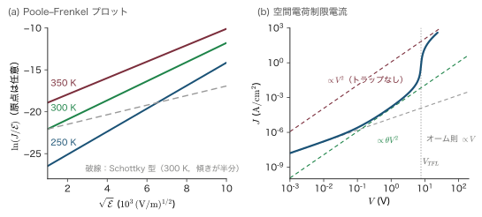
例題28.15 空間電荷制限電流とトラップ充満限界電圧
厚さ $L=1\,\mu\mathrm{m}$，比誘電率 $11.8$，電子の移動度 $1\,\mathrm{cm^2/(V\,s)}$ の a-Si:H 膜をオーム性電極ではさむ．
(1) トラップがないとき，$V=1\,\mathrm{V}$ での SCLC の電流密度を求めよ．
(2) 浅いトラップが $N_t=10^{16}\,\mathrm{cm^{-3}}$ あるとき $V_{TFL}$ を求めよ．$\theta=10^{-4}$ なら $V=1\,\mathrm{V}$ の電流はいくらか．
解答．SI 単位で $\epsilon=11.8\times8.854\times10^{-12}=1.045\times10^{-10}\,\mathrm{F/m}$，$\mu=1\times10^{-4}\,\mathrm{m^2/(V\,s)}$，$L=10^{-6}\,\mathrm{m}$．
(1)
$$ J=\frac98\times1.045\times10^{-10}\times10^{-4}\times\frac{1^2}{(10^{-6})^3}=1.18\times10^{4}\,\mathrm{A/m^2}=1.2\,\mathrm{A/cm^2} $$(2) $N_t=10^{22}\,\mathrm{m^{-3}}$ として
$$ V_{TFL}=\frac{1.602\times10^{-19}\times10^{22}\times(10^{-6})^2}{2\times1.045\times10^{-10}}=\frac{1.602\times10^{-9}}{2.09\times10^{-10}}=7.7\,\mathrm{V} $$$\theta=10^{-4}$ なら $1\,\mathrm{V}$ の電流は (1) の $10^{-4}$ 倍で $1.2\times10^{-4}\,\mathrm{A/cm^2}$．
∎ 図28.13(b) の数値解は，$1\,\mathrm{V}$ で $1.5\times10^{-4}\,\mathrm{A/cm^2}$（オーム則の寄与と，トラップのわずかな埋まりの分だけ大きい），$V_{TFL}=7.7\,\mathrm{V}$ で急増して，その上でトラップのない Mott–Gurney 則に近づく．同じ膜でも，トラップを埋め切るかどうかで電流が4桁違う．
28.4.4 しきい値スイッチングとメモリスイッチング — Ovshinsky
Ovshinsky（オブシンスキー，1968）は，カルコゲナイドガラスの薄膜を電極ではさんで電圧を上げると，あるしきい値電圧 $V_{th}$ で抵抗が何桁も一気に下がり，ナノ秒以下の時間で低抵抗の状態に移ることを報告した（図28.14(a)）．電流を流し続ける限り膜の電圧はほぼ一定の保持電圧 $V_h$ に保たれ，電流を保持電流より下げると高抵抗に戻る．これをしきい値スイッチング（threshold switching）という．組成によっては，電流を切っても低抵抗のまま戻らない．電流の通り道が結晶化したためで，これをメモリスイッチング（memory switching）という．
スイッチングの仕組みには，熱的な模型と電子的な模型がある．熱的な模型は，電流のジュール熱で膜が温まると活性化型の伝導度が上がり，さらに電流が増えて温まる，という正のフィードバック（熱暴走）である．これが起こる条件を導こう．
導出：熱暴走のしきい値（Semenov（セミョーノフ）の条件）
膜の抵抗は活性化型 $R(T)=R_\infty\ee^{E_a/k_BT}$ とする．電圧 $V$ で発生するジュール熱は $P_{\mathrm{in}}(T)=V^2/R(T)=(V^2/R_\infty)\ee^{-E_a/k_BT}$，周囲（温度 $T_0$）へ逃げる熱は熱コンダクタンスを $G_{th}$ として $P_{\mathrm{out}}=G_{th}(T-T_0)$ である．定常状態 $P_{\mathrm{in}}=P_{\mathrm{out}}$ が存在しなくなる電圧が熱暴走のしきい値である．$P_{\mathrm{in}}(T)$ は $T$ とともに急に増える曲線，$P_{\mathrm{out}}$ は直線なので，しきい値では2つが接する：値と傾きがともに等しい．
$$ \frac{V^2}{R_\infty}\ee^{-E_a/k_BT}=G_{th}(T-T_0),\qquad \frac{V^2}{R_\infty}\ee^{-E_a/k_BT}\cdot\frac{E_a}{k_BT^2}=G_{th} $$第2式を第1式で割ると $E_a/(k_BT^2)=1/(T-T_0)$，すなわち
$$ T-T_0=\frac{k_BT^2}{E_a} $$$E_a\gg k_BT_0$ なら右辺の $T$ を $T_0$ で近似してよく，しきい値での温度上昇は
∎ 膜が周囲よりわずか $k_BT_0^2/E_a$ だけ温まると，もう定常状態が存在せず，温度と電流が暴走する．しきい値電圧は第1式から $V_{th}^2=G_{th}R(T_c)\,\Delta T_c$ である．
しかし薄い膜では，しきい値電圧が膜厚にほぼ比例し（しきい値の電場がほぼ一定），スイッチングがナノ秒以下で起こる．これは熱だけでは説明しにくい．現在では，強い電場によるトラップの充満や裾の状態での衝突イオン化などの電子的な過程が引き金になり，流れ始めた大電流のジュール熱が ON 状態を保つ，と考えられている．
相変化メモリ．メモリスイッチングを積極的に使うのが相変化メモリ（phase-change memory，PCM）である．$\mathrm{Ge_2Sb_2Te_5}$（GST）などの小さなセルを，アモルファス（高抵抗）と結晶（低抵抗．抵抗比は2〜3桁）の間で切り替える（図28.14(b)）．RESET では数十 ns の大きな電流パルスでセルを融点（GST で約 $600\,^\circ\mathrm{C}$）より高く熱し，パルスを急に切って急冷し，原子が並ぶ暇を与えずにアモルファスにする．SET では100 ns 程度の小さめのパルスで結晶化温度（GST で約 $150\,^\circ\mathrm{C}$）と融点の間に保ち，結晶化させる．ここでしきい値スイッチングが重要な役割を果たす．高抵抗のアモルファスのセルにそのまま電流を流して熱するには非常に高い電圧が要るが，しきい値スイッチングで一時的に低抵抗になるので，ふつうの電圧で十分な電流を流して熱することができる．READ では $V_{th}$ よりずっと低い電圧で抵抗だけを読む．
例題28.16 熱暴走のしきい値の温度上昇
伝導の活性化エネルギーが $E_a=0.3\,\mathrm{eV}$ と $0.5\,\mathrm{eV}$ の膜について，周囲が $T_0=300\,\mathrm{K}$ のとき熱暴走が起こる温度上昇 $\Delta T_c$ を求めよ．近似しない式 $T-T_0=k_BT^2/E_a$ の小さいほうの解とも比べよ．
解答．式 \eqref{eq:28-semenov} より
$$ \begin{aligned} E_a=0.3\,\mathrm{eV}&:\quad \Delta T_c=\frac{8.617\times10^{-5}\times300^2}{0.3}=\frac{7.76}{0.3}=25.9\,\mathrm{K}\\ E_a=0.5\,\mathrm{eV}&:\quad \Delta T_c=\frac{7.76}{0.5}=15.5\,\mathrm{K} \end{aligned} $$近似しない式は $T$ の2次方程式 $\frac{k_B}{E_a}T^2-T+T_0=0$ で，小さいほうの解は $T=\dfrac{1-\sqrt{1-4k_BT_0/E_a}}{2k_B/E_a}$．$E_a=0.3\,\mathrm{eV}$ では $k_B/E_a=2.872\times10^{-4}\,\mathrm{K^{-1}}$，$4k_BT_0/E_a=0.3447$ なので $T=(1-0.8095)/(5.745\times10^{-4})=331.6\,\mathrm{K}$，すなわち $\Delta T_c=31.6\,\mathrm{K}$．同様に $E_a=0.5\,\mathrm{eV}$ では $k_B/E_a=1.723\times10^{-4}\,\mathrm{K^{-1}}$，$4k_BT_0/E_a=0.2068$ なので $T=(1-0.8906)/(3.447\times10^{-4})=317.4\,\mathrm{K}$，すなわち $\Delta T_c=17.4\,\mathrm{K}$．
∎ 近似式は1〜2割小さめに出る（$25.9/31.6=0.82$，$15.5/17.4=0.89$）が，桁は合う．わずか数十 K の温度上昇で暴走が始まる．活性化型の伝導をする材料に大電流を流すときに常に気をつけなければならない現象である．
28.4.5 a-Se のなだれ増倍 — HARP 撮像管
結晶の半導体では，強い電場で加速されたキャリアが価電子帯の電子を叩き上げて電子・正孔対を増やすなだれ増倍がよく知られている（第23章23.3節）．アモルファスでは散乱が強すぎてキャリアが十分に加速されないと考えられていたが，a-Se では $7\times10^7\,\mathrm{V/m}$ 程度を超える電場で正孔がなだれ増倍を起こす．NHK はこれを撮像管の光電変換膜に使い，1980年代後半に HARP（High-gain Avalanche Rushing amorphous Photoconductor）と名づけた膜を開発して，1990年代にかけて高感度カメラとして実用化した．$10^8\,\mathrm{V/m}$ 程度の電場で，膜厚を厚くするほど大きな利得（数十 $\mu\mathrm{m}$ の膜で数百〜1000倍程度）が得られ，暗い夜間の報道撮影などに使われた．
a-Se のなだれでは，ほぼ正孔だけが増倍し電子は増倍しない．片方のキャリアだけが増えることが重要である．
例題28.17 a-Se の HARP 膜にかける電圧と，片方のキャリアだけのなだれ利得
(1) 膜厚 $25\,\mu\mathrm{m}$ の a-Se 膜に $1.0\times10^8\,\mathrm{V/m}$ の電場をかけるのに必要な電圧はいくらか．
(2) 正孔だけが衝突イオン化係数 $\alpha_h$（単位長さあたりに新しい電子・正孔対を作る回数）でなだれ増倍し，電子は増倍しないとする．光が膜の入口で作った正孔が膜を通り抜ける間の利得 $M$ を求め，$M=1000$ に必要な $\alpha_h$ を計算せよ．
(3) 電子も同じ $\alpha$ で増倍する場合，利得は $M=1/(1-\alpha L)$ になる（第23章）．両者を比べ，片方だけの増倍の利点を述べよ．
解答．
(1)
$$ V=\mathcal EL=1.0\times10^8\,\mathrm{V/m}\times25\times10^{-6}\,\mathrm{m}=2.5\times10^3\,\mathrm{V} $$(2) 位置 $x$ での正孔の流れを $p(x)$ とすると，$\dd x$ 進む間に $\alpha_hp\,\dd x$ 個の対ができ，そのうち正孔は同じ向きに進んで流れに加わる（電子は逆向きに流れ去り，増倍しない）．よって $\dd p/\dd x=\alpha_hp$，解は $p(L)=p(0)\ee^{\alpha_hL}$ で
$$ M=\ee^{\alpha_hL},\qquad \alpha_h=\frac{\ln M}{L}=\frac{\ln1000}{25\times10^{-4}\,\mathrm{cm}}=\frac{6.91}{2.5\times10^{-3}\,\mathrm{cm}}=2.8\times10^{3}\,\mathrm{cm^{-1}} $$(3) 両方が増倍すると $M=1/(1-\alpha L)$ は $\alpha L\to1$ で発散する．電子が戻って新しい正孔を作り，その正孔がまた電子を作るという正のフィードバックがあるからで，これが降伏である．片方だけなら $M=\ee^{\alpha_hL}$ は電場とともに滑らかに増えるだけで発散しない．
∎ 片方のキャリアだけのなだれは，降伏の心配がなく，利得の揺らぎ（雑音）も小さい．数千ボルトをかけても安定に動く高利得の光電変換膜が作れるのは，この性質のおかげである．
28.4.6 a-Si:H TFT の高電界での劣化
a-Si:H の TFT に長い時間ゲート電圧をかけ続けると，しきい値電圧が少しずつずれていく．原因は2つで，ゲート絶縁膜（窒化シリコン）への電荷の注入・捕獲と，チャネルの a-Si:H の中で水素が動いてダングリングボンドが新たにできること（Staebler–Wronski 効果と同じ種類の準安定な欠陥生成）である．後者は温度が高いほど速く，時間に対して冪や伸長指数関数のようにゆっくり進む．交流で駆動する液晶の画素スイッチでは問題が小さいが，有機 EL のように画素に直流電流を流し続ける用途では，しきい値のずれがそのまま明るさの変化になる．このため有機 EL の駆動には，補正回路を組むか，劣化の小さい多結晶 Si や IGZO の TFT が使われる．移動度が小さいので，結晶の MOSFET で問題になる熱い電子による劣化はほとんど起こらない．
28.5 不純物伝導とは何か
28.5.1 凍結したはずの電子がまだ電気を運ぶ
第17章（17.7.2項）で見たように，n 型半導体を冷やすと伝導帯の電子はドナーに戻り（凍結），電子密度は $n\propto\ee^{-E_d/2k_BT}$ のように指数関数的に減る．伝導度も同じように $0$ へ向かうはずである．ところがドープした Ge や Si を液体ヘリウム温度まで冷やすと，$\ln\sigma$ と $1/T$ のグラフは途中で曲がって傾きが急に緩くなり，予想よりはるかに大きな伝導度が残る．1950年に Hung（洪朝生）が Ge で見つけ，その後 Fritzsche らが詳しく調べたこの伝導を不純物伝導（impurity conduction）という．伝導帯に上がらなくても，電子がドナーからドナーへ直接跳び移ることで電流が流れるのである．
ここで鍵になるのが補償（compensation）である．n 型の結晶にも少しはアクセプターが混じっている．その濃度の比 $K\equiv N_A/N_D$（$0\lt K\lt1$）を補償度という．低温ではアクセプターがドナーから電子を1個ずつ奪うので，$N_A$ 個のドナーは空（$\mathrm{D^+}$）になり，残り $N_D-N_A$ 個が電子を持つ中性のドナー（$\mathrm{D^0}$）になる．電子は $\mathrm{D^0}$ から近くの空いた $\mathrm{D^+}$ へ跳べる（図28.15(a)）．跳んでも電荷の総数は変わらないので，大きなエネルギーは要らない．補償がまったくなければ（$K=0$）すべてのドナーが中性で，電子は中性のドナーに2個目として乗るしかなく，そのためには余分なエネルギーが要る．
28.5.2 3つの活性化エネルギー $\varepsilon_1,\varepsilon_2,\varepsilon_3$
ドープした半導体の低温の伝導度は，ほぼ次の3項の和で書ける：
指数関数の和なので，温度ごとにどれか1項が支配し，$\ln\sigma$ と $1/T$ のグラフは傾きの違う3本の直線をつないだ形になる（図28.16）．
- $\varepsilon_1$：伝導帯の電子（凍結領域）．補償があり，$n\ll N_A$ の低温では，ドナーの電離の平衡の式（第17章17.7節．$N_c$ は伝導帯の有効状態密度，因子 $1/2$ はドナーに電子が入るときのスピンの2通りから来る）$\dfrac{n\,N_D^+}{N_D^0}=\dfrac{N_c}{2}\ee^{-E_d/k_BT}$ に $N_D^+\approx N_A$，$N_D^0\approx N_D-N_A$ を入れて $n\approx\dfrac{N_c}{2}\dfrac{N_D-N_A}{N_A}\ee^{-E_d/k_BT}$．したがって $\varepsilon_1\approx E_d$（補償がないときの $E_d/2$ と違うことに注意）．
- $\varepsilon_2$：$\mathrm{D^-}$ の帯．中性ドナーに2個目の電子が束縛された状態 $\mathrm{D^-}$ は，水素の負イオン $\mathrm{H^-}$ の焼き直しで，束縛エネルギーは $E_d$ の $5.5\,\%$ ほどしかない（$\mathrm{H^-}$ の電子親和力 $0.75\,\mathrm{eV}$ は $13.6\,\mathrm{eV}$ の $5.5\,\%$）．$\mathrm{D^0}$ から別の $\mathrm{D^0}$ へ電子を移して $\mathrm{D^+}$ と $\mathrm{D^-}$ を作るのに要るエネルギーが $\varepsilon_2$ で，孤立したドナーでは $E_d$ に近いが，ドナーが濃くなって $\mathrm{D^-}$ の軌道（大きく広がっている）が重なり帯を作ると小さくなる．$\varepsilon_2$ の伝導は，補償の弱い試料で，次の節の Mott 転移に近い濃度でよく見える．$\mathrm{D^-}$ の帯は28.6節の「上の Hubbard 帯」に当たる．
- $\varepsilon_3$：ドナー間のホッピング．最も低温で現れる．活性化エネルギーの起源は，ランダムに置かれた荷電不純物（$\mathrm{D^+}$ と $\mathrm{A^-}$）の Coulomb ポテンシャルである．各ドナーのエネルギーは近くの電荷によって $e^2/(4\pi\epsilon_0\epsilon_sr)$ の程度ずつずれるので，電子が $\mathrm{D^0}$ から $\mathrm{D^+}$ へ跳ぶには平均してこの程度のエネルギーを上らなければならない．ドナー間の距離 $r\sim N_D^{-1/3}$ を入れると $\varepsilon_3\sim e^2N_D^{1/3}/(4\pi\epsilon_0\epsilon_s)$ に1より小さい数係数（補償度 $K$ によって変わる）を掛けたものになる．$\varepsilon_3$ の伝導は28.3.2項の最近接ホッピングであり，さらに低温では変動範囲ホッピングに移る．
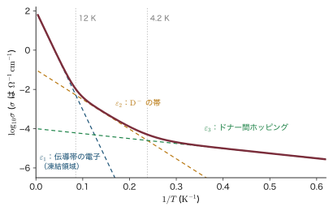
例題28.18 Si:P（$N_D=10^{17}\,\mathrm{cm^{-3}}$，$K=0.1$）の $\varepsilon_3$ を見積もる
(1) ドナー間の平均距離 $r=N_D^{-1/3}$ と，その距離での Coulomb エネルギー $e^2/(4\pi\epsilon_0\epsilon_sr)$ を求めよ（$\epsilon_s=11.7$）．
(2) 空いたドナー（$\mathrm{D^+}$）とアクセプターの濃度はいくらか．
(3) $\varepsilon_3$ を数係数 $0.5$〜$1$ として見積もり，Si:P のイオン化エネルギー $45\,\mathrm{meV}$ と比べよ．
解答．
(1) $r=(10^{17}\,\mathrm{cm^{-3}})^{-1/3}=2.15\times10^{-6}\,\mathrm{cm}=21.5\,\mathrm{nm}$．$e^2/(4\pi\epsilon_0)=1.440\,\mathrm{eV\,nm}$ を使って
$$ \frac{e^2}{4\pi\epsilon_0\epsilon_sr}=\frac{1.440\,\mathrm{eV\,nm}}{11.7\times21.5\,\mathrm{nm}}=5.7\,\mathrm{meV} $$(2) $N_A=KN_D=10^{16}\,\mathrm{cm^{-3}}$．低温では同数の $10^{16}\,\mathrm{cm^{-3}}$ のドナーが空になり，$9\times10^{16}\,\mathrm{cm^{-3}}$ が中性である．
(3) $\varepsilon_3\approx(0.5$〜$1)\times5.7\,\mathrm{meV}=3$〜$6\,\mathrm{meV}$．これは $E_d=45\,\mathrm{meV}$ の1割程度である．$k_B$ で割った温度にすると $\varepsilon_3/k_B\approx30$〜$70\,\mathrm{K}$，$E_d/k_B\approx520\,\mathrm{K}$ で，$\ln\sigma$ と $1/T$ のグラフの傾きが1桁ほど緩くなる．
∎ 伝導帯の電子の項 $\sigma_1\ee^{-\varepsilon_1/k_BT}$ は，前因子は大きいが温度を下げると急速に減るので，十分低温では必ず $\varepsilon_3$ の項に追い越される．$\varepsilon_3$ が濃度とともに $N_D^{1/3}$ でゆっくり増えるのに対し，前因子 $\sigma_3$ は次に見るように指数関数的に増える．
28.5.3 Miller–Abrahams の抵抗ネットワーク
Miller と Abrahams（1960）は，不純物の間のホッピングを，各ドナーの組を抵抗でつないだ電気回路に置き換えた．その抵抗を導こう．
導出：ドナー $i$ と $j$ の間の抵抗
電流．ドナー $i$ の占有確率を $f_i$，$i$ から $j$ への跳びの率を $\Gamma_{ij}$ とする．$i$ に電子がいて（$f_i$），$j$ が空いている（$1-f_j$）ときだけ跳べるので，$i$ から $j$ への正味の粒子の流れは
$$ \frac{I_{ij}}{e}=f_i(1-f_j)\Gamma_{ij}-f_j(1-f_i)\Gamma_{ji} $$平衡．熱平衡（$f=f^0$，Fermi–Dirac（フェルミ・ディラック）分布）では正味の流れは $0$ で，各組ごとに $f_i^0(1-f_j^0)\Gamma_{ij}=f_j^0(1-f_i^0)\Gamma_{ji}\equiv\Gamma^0_{ij}$（詳細つり合い）．
線形応答．小さな電場をかけると，各ドナーの占有確率がわずかに変わる．これを，ドナーごとに Fermi 準位が $E_F$ から $E_F+\delta E_{F,i}$ にずれた（局所的な Fermi 準位．電気化学ポテンシャルともいう）と表す：$f_i=1/(\ee^{(E_i-E_F-\delta E_{F,i})/k_BT}+1)$．Fermi 分布の微分 $\partial f/\partial E_F=f(1-f)/k_BT$ を使うと，1次までで
$$ \delta f_i=f_i^0(1-f_i^0)\,\frac{\delta E_{F,i}}{k_BT} $$である．正味の流れ $I_{ij}/e$ の変化を，積の微分の規則で1次まで書くと（$\Gamma_{ij}$，$\Gamma_{ji}$ は平衡の値のまま）
$$ \frac{\delta I_{ij}}{e}=\bigl[(1-f_j^0)\Gamma_{ij}+f_j^0\Gamma_{ji}\bigr]\,\delta f_i-\bigl[f_i^0\Gamma_{ij}+(1-f_i^0)\Gamma_{ji}\bigr]\,\delta f_j $$ここに $\delta f_i$ を入れ，詳細つり合い $f_i^0(1-f_j^0)\Gamma_{ij}=f_j^0(1-f_i^0)\Gamma_{ji}=\Gamma^0_{ij}$ を使うと，$\delta E_{F,i}$ の係数は
$$ \frac{f_i^0(1-f_i^0)\bigl[(1-f_j^0)\Gamma_{ij}+f_j^0\Gamma_{ji}\bigr]}{k_BT} =\frac{(1-f_i^0)\,\Gamma^0_{ij}+f_i^0\,\Gamma^0_{ij}}{k_BT}=\frac{\Gamma^0_{ij}}{k_BT} $$となる（分子を $(1-f_i^0)\times\bigl[f_i^0(1-f_j^0)\Gamma_{ij}\bigr]+f_i^0\times\bigl[f_j^0(1-f_i^0)\Gamma_{ji}\bigr]$ と組み替えた）．同じ計算で $\delta E_{F,j}$ の係数は $-\Gamma^0_{ij}/k_BT$ になる．平衡では流れが $0$ なので
$$ I_{ij}=\frac{e\,\Gamma_{ij}^0}{k_BT}\,(\delta E_{F,i}-\delta E_{F,j}) $$である．$I_{ij}$ は $i$ から $j$ への電子の流れに $e$ を掛けたものである．電場はサイトのエネルギー $E_i$ と率 $\Gamma_{ij}$ も少し変えるが，その分を足すと $\delta E_{F,i}$ がちょうど電気化学ポテンシャルのずれに置き換わるだけなので，$\delta E_{F,i}$ をそのように読めばよい．電子の電気化学ポテンシャルのずれは電位のずれ $\delta V$ と $\delta E_F=-e\,\delta V$ の関係にあるので，$I_{ij}=(V_j-V_i)/R_{ij}$ の形になり
$$ R_{ij}=\frac{k_BT}{e^2\Gamma^0_{ij}} $$平衡の率．$\Gamma_{ij}^0$ を式 \eqref{eq:28-ma} から計算する．エネルギーを $E_F$ から測り，$E_j\gt E_i\gt0$（どちらも Fermi 準位の上）の場合，$f_i^0\approx\ee^{-E_i/k_BT}$，$1-f_j^0\approx1$，上向きの跳びの率は $\nu_0\ee^{-2r_{ij}/a_H}\ee^{-(E_j-E_i)/k_BT}$ なので，$\Gamma^0_{ij}=\nu_0\ee^{-2r_{ij}/a_H}\ee^{-E_j/k_BT}$．他の場合も含めた一般形は
∎（$E_j\gt E_i\gt0$ では $\varepsilon_{ij}=\frac12(E_i+E_j+E_j-E_i)=E_j$ で上の結果と一致する．）ここで局在長はドナーの有効 Bohr 半径 $a_H$ である．
$R_{ij}$ は距離とエネルギーの指数関数なので，回路の中の抵抗の値は何十桁にもわたってばらつく．このような回路の全体の抵抗は平均値では決まらない．小さい抵抗から順につないでいき，試料の端から端までつながった道が初めてできたときの最後の抵抗（臨界抵抗 $R_c$）が全体を決める．これが浸透理論（percolation theory）の考え方で，最近接ホッピングの濃度依存性も，28.3節の変動範囲ホッピングの係数も，この考え方で精密に計算できる．
28.5.4 濃度依存性 — $\ln\rho_3\propto N_D^{-1/3}/a_H$
導出：$\varepsilon_3$ 伝導の前因子の濃度依存性
$\varepsilon_3$ の項 $\sigma_3\ee^{-\varepsilon_3/k_BT}$ の前因子 $\sigma_3$ は，主にトンネルの因子 $\ee^{-2r/a_H}$ で決まる．跳ぶ距離 $r$ をドナー1個あたりの体積の球の半径 $r=(3/4\pi N_D)^{1/3}$ と取ると
$$ \ln\sigma_3=\text{定数}-\frac{2r}{a_H}=\text{定数}-2\left(\frac{3}{4\pi}\right)^{1/3}\frac{1}{N_D^{1/3}a_H}=\text{定数}-\frac{1.24}{N_D^{1/3}a_H} $$より正確には，浸透理論で「各ドナーのまわりに半径 $r_c$ の球を描き，球の中にいる相手とだけ結合を作るとき，結合が試料の端から端までつながる」条件 $\frac{4\pi}{3}N_Dr_c^3=B_c\approx2.7$ を使う．$r_c=(3B_c/4\pi)^{1/3}N_D^{-1/3}=0.864\,N_D^{-1/3}$ を指数に入れて
∎ $\ln\rho_3$ を $N_D^{-1/3}$ に対して描くと直線になり，傾きから $a_H$ が読める．ドナーの濃度は指数の肩に $N_D^{-1/3}$ として入るので，濃度を少し変えるだけで抵抗率が何桁も変わる．
実際，Ge:Sb や Si:P の4 K の抵抗率は，ドナー濃度を1桁変えるだけで10桁近くも変わり，$\ln\rho_3$ と $N_D^{-1/3}$ はよい直線に乗る．これは不純物伝導がトンネルによるホッピングであることの最も直接的な証拠であり，その傾きから求めた $a_H$ はドナーの波動関数の広がりの見積もりとよく合う．
例題28.19 Ge:Sb の4 K の抵抗率の濃度依存性
Ge:Sb の有効 Bohr 半径を $a_H=4.5\,\mathrm{nm}$ とする．式 \eqref{eq:28-lnrho3} を使い，ドナー濃度を (1) $10^{15}$ から $2\times10^{15}\,\mathrm{cm^{-3}}$ に，(2) $10^{15}$ から $10^{16}\,\mathrm{cm^{-3}}$ に増やしたとき，$\rho_3$ は何分の1になるか．
解答．$N^{-1/3}$ を nm で書くと，$10^{15}\,\mathrm{cm^{-3}}$ で $100\,\mathrm{nm}$，$2\times10^{15}$ で $100/2^{1/3}=79.4\,\mathrm{nm}$，$10^{16}$ で $100/10^{1/3}=46.4\,\mathrm{nm}$．指数の差は
$$ \text{(1)}\ \ \frac{1.73}{4.5\,\mathrm{nm}}(100-79.4)\,\mathrm{nm}=0.384\times20.6=7.9 \quad\Longrightarrow\quad \frac{\rho_3(10^{15})}{\rho_3(2\times10^{15})}=\ee^{7.9}=2.8\times10^{3} $$ $$ \text{(2)}\ \ 0.384\times(100-46.4)=0.384\times53.6=20.6 \quad\Longrightarrow\quad \ee^{20.6}=8.8\times10^{8} $$∎ 濃度を2倍にするだけで抵抗率は3桁以上，10倍にすれば9桁近く下がる．不純物伝導の抵抗率は，ドナー濃度の最も敏感な「ものさし」である．
28.5.5 不純物バンドの形成から Mott 転移へ
ドナーをさらに濃くするとどうなるか．飛び移り積分 $t\propto\ee^{-r/a_H}$ は指数関数的に大きくなり，ドナーの準位は幅 $B=2zt$ の不純物バンドを作る．一方，乱れの大きさ（Coulomb ポテンシャルの揺らぎ）は $N_D^{1/3}$ でゆっくりしか増えない．したがって $B/W$ は急に大きくなり，例題28.7 の不純物帯のように $W/B\gg1$ だった状況から，やがて $W/B\lesssim1$ に移る．同時に，$\mathrm{D^0}$ の帯（下の Hubbard 帯）と $\mathrm{D^-}$ の帯（上の Hubbard 帯）が広がって近づき，$\varepsilon_2$ は小さくなって消える．ある臨界濃度 $n_c$ で，低温でも活性化エネルギーのない伝導，すなわち金属の伝導が現れる．これが次節の Mott 転移である．
28.6 Mott の金属・非金属転移
28.6.1 ドナーを増やすと金属になる
Si に P を加えていくと，ある濃度を境に低温の性質ががらりと変わる．$n_c\approx3.7\times10^{18}\,\mathrm{cm^{-3}}$ より薄い試料では，温度を下げるにつれて伝導度は（不純物伝導を経て）限りなく $0$ に近づく．絶縁体である．$n_c$ より濃い試料では，絶対零度に外挿しても有限の伝導度が残る．金属である．この変化を金属・非金属転移（metal–nonmetal transition），とくに電子の相関と遮蔽で起こるものを Mott 転移という．第17章の例題17.10 では目安 $N_D^{1/3}a_d\simeq0.25$ を天下りに使った．ここではその根拠を導く．
Mott（1949）の問題意識はこうである．水素原子を格子状に並べ，格子間隔を広げていくことを考える．1原子に1電子なので，バンド理論ではバンドは半分だけ詰まっていて，どんなに間隔が広くても金属になるはずである（第16章16.7節）．しかし間隔が非常に広ければ，各電子は自分の陽子に束縛された孤立した原子にすぎず，電気は流れないはずである．どこかで金属から絶縁体に変わる．その境目を決めるのは何か．
28.6.2 Mott 判定 — 遮蔽が束縛状態を消す
Mott の答えは遮蔽である．もし伝導電子がたくさんあれば，それらがドナーの正電荷のまわりに集まって Coulomb ポテンシャルを遮蔽する．遮蔽されたポテンシャル（Thomas–Fermi（トーマス・フェルミ）遮蔽．第21章21.3節，線形応答理論入門 第10章10.2）は
$$ V(r)=-\frac{e^2}{4\pi\epsilon_0\epsilon_sr}\,\ee^{-q_{TF}r} $$で，遮蔽が強すぎると電子を束縛できない．束縛状態がなければ電子は局在できないので，系は金属のままでいられる．逆に電子が少なく遮蔽が弱ければ，電子はドナーに束縛されて動けず，遮蔽もいっそう弱くなる．金属であることと遮蔽が強いことは互いに支え合っている．その境目を求めよう．
導出：Mott 判定 $n_c^{1/3}a_H\approx0.25$
ステップ1：Thomas–Fermi の遮蔽波数．縮退した電子気体の遮蔽波数は $q_{TF}^2=e^2D(E_F)/(\epsilon_0\epsilon_s)$ で与えられる（第21章21.3節の遮蔽長の式 $1/L_{TF}^2=(e^2/\epsilon_s\epsilon_0)\,\partial n/\partial E_F$ で，$\partial n/\partial E_F=D(E_F)$）．$D(E_F)$ は単位体積・単位エネルギーあたりの状態密度（スピンの2を含む）で，自由電子なら $D(E_F)=m^*k_F/(\pi^2\hbar^2)$（第15章15.2節の $D(\epsilon)$ を $E_F=\hbar^2k_F^2/2m^*$ で書き直したもの）．代入して
$$ q_{TF}^2=\frac{e^2m^*k_F}{\pi^2\hbar^2\epsilon_0\epsilon_s}=\frac{4k_F}{\pi}\cdot\frac{e^2m^*}{4\pi\epsilon_0\epsilon_s\hbar^2}=\frac{4k_F}{\pi a_H} $$最後に有効 Bohr 半径 $a_H=4\pi\epsilon_0\epsilon_s\hbar^2/(m^*e^2)$（第17章17.6節の $a_d$）を使った．
ステップ2：束縛が消える条件．遮蔽の長さ $\lambda_{TF}=1/q_{TF}$ がドナーの軌道の大きさ $a_H$ と同じになると，電子は束縛を感じなくなる，と Mott は考えた：$q_{TF}a_H\approx1$．2乗して代入すると
$$ q_{TF}^2a_H^2=\frac{4k_Fa_H}{\pi}=1\qquad\Longrightarrow\qquad k_Fa_H=\frac\pi4 $$ステップ3：濃度に直す．$k_F=(3\pi^2n)^{1/3}$ だから $(3\pi^2)^{1/3}n_c^{1/3}a_H=\pi/4$，すなわち
∎ これが Mott 判定（Mott criterion）である．電子の平均間隔 $n^{-1/3}$ がドナーの Bohr 半径の約4倍まで縮まると金属になる．
ステップ2の「$q_{TF}a_H\approx1$」は大まかな線引きである．遮蔽された Coulomb ポテンシャルが本当に束縛状態を持たなくなる $q_{TF}a_H$ の値は，Schrödinger（シュレーディンガー）方程式を解けば決まる．これを数値で求めてみよう．長さを $a_H$，エネルギーを有効 Rydberg $\mathrm{Ry}^*=e^2/(8\pi\epsilon_0\epsilon_sa_H)$ を単位とすると，$s$ 状態の動径方程式は $u(r)=r\psi(r)$ について
$$ -\frac{\dd^2u}{\dd r^2}-\frac{2\ee^{-\lambda r}}{r}u=Eu,\qquad\lambda\equiv q_{TF}a_H $$となる（$\lambda=0$ で水素様の $E_{1s}=-1\,\mathrm{Ry}^*$）．これを差分法で解いて最も低い固有値を求め，さらに $E=0$ の解の節の数が変わる $\lambda$ を二分法で探すと，束縛状態は $\lambda_c=q_{TF}a_H=1.19$ で消える（図28.17(a)）．ステップ2と同じ計算で $4k_Fa_H/\pi=\lambda_c^2$ から $n_c^{1/3}a_H=\pi\lambda_c^2/[4(3\pi^2)^{1/3}]=0.36$ となる（線形応答理論入門 第10章10.7.3）．
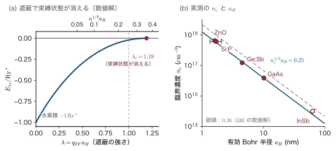
なぜ：粗い0.25 のほうが，ていねいな0.36 より実験に合う
図28.17(b) のように，実験は $0.25$ のまわりに並び，Schrödinger 方程式をきちんと解いた $0.36$ からはずれる．これは「ていねいに解いたほうが悪い」のではなく，出発点の Thomas–Fermi 遮蔽そのものが，転移点の近くでは悪い近似だからである．Thomas–Fermi の式は縮退した電子気体を前提にしているが，転移点の近くの電子は半ば局在し，ドナーの乱れた配置も効く（28.6.5項）．Mott 判定は「遮蔽が束縛を消す」という正しい物理を含み，数係数はたまたま実験とよく合っている目安と考えるのがよい．28.6.4項の Hubbard 模型による別の議論でも $0.22$〜$0.24$ 程度の値が出る．
例題28.20 Si:P と GaAs の Mott 臨界濃度
(1) Si:P の実効的な有効 Bohr 半径を $a_H=1.7\,\mathrm{nm}$（この値の根拠は解答の後で述べる）として，式 \eqref{eq:28-mott} から $n_c$ を求め，実測 $3.7\times10^{18}\,\mathrm{cm^{-3}}$ と比べよ．
(2) GaAs（$\epsilon_s=12.9$，$m^*=0.067m$）の $a_H$ と $n_c$ を求めよ．
解答．
(1) $a_H=1.7\times10^{-7}\,\mathrm{cm}$ として
$$ n_c=\left(\frac{0.25}{a_H}\right)^3=\left(\frac{0.25}{1.7\times10^{-7}\,\mathrm{cm}}\right)^3=(1.47\times10^{6}\,\mathrm{cm^{-1}})^3=3.2\times10^{18}\,\mathrm{cm^{-3}} $$実測の $3.7\times10^{18}$ と15% の違いで一致する．逆に実測値から
$$ n_c^{1/3}a_H=(3.7\times10^{18})^{1/3}\times1.7\times10^{-7}=1.55\times10^6\times1.7\times10^{-7}=0.26 $$(2) 水素様の式（第17章17.6節）で
$$ a_H=0.0529\,\mathrm{nm}\times\epsilon_s\times\frac{m}{m^*}=0.0529\times\frac{12.9}{0.067}=10.2\,\mathrm{nm} $$ $$ n_c=\left(\frac{0.25}{1.02\times10^{-6}\,\mathrm{cm}}\right)^3=(2.45\times10^5)^3\,\mathrm{cm^{-3}}=1.5\times10^{16}\,\mathrm{cm^{-3}} $$∎ GaAs は Si より2桁以上薄い濃度で金属になる．
Si:P の $a_H$ には注意が要る．Si の伝導帯は異方的（$m_l$，$m_t$）なのでドナーの波動関数は回転楕円体で，半径は方向によって違い，さらに中心セル補正（第17章）で縮んでいる．そのため $a_H$ の決め方が何通りもある．(i) 実測の束縛エネルギー $E_d=45.6\,\mathrm{meV}$ を水素様の式 $E_d=e^2/(8\pi\epsilon_0\epsilon_sa_H)$ に入れると $a_H=1.440/(2\times11.7\times0.0456)\,\mathrm{nm}=1.35\,\mathrm{nm}$．(ii) Kohn–Luttinger（コーン・ラッティンジャー）の変分波動関数の2つの半径（谷の軸に垂直な向きに $2.5\,\mathrm{nm}$，平行な向きに $1.42\,\mathrm{nm}$）の幾何平均を取ると $(2.5^2\times1.42)^{1/3}=2.07\,\mathrm{nm}$．(iii) 本章では，文献で Mott 判定の議論に慣用される，その間の値 $1.7\,\mathrm{nm}$ を使った．この範囲で実測の $n_c$ から出す $n_c^{1/3}a_H$ は $0.21$〜$0.32$ と動く（表28.2）．第17章の例題17.10 は等方的な $m^*=0.2m$ から $a_d=3.1\,\mathrm{nm}$ としたので $n_c$ が7倍ずれ，線形応答理論入門の例題10.3 は長いほうの半径 $2.5\,\mathrm{nm}$ を使っている．本書の第21章の例題21.8 は第17章の $a_d\approx3\,\mathrm{nm}$ を目安に使い，第22章の22.2.5項は伝導度有効質量 $0.26m$ から $a_B^*=2.4\,\mathrm{nm}$ とした．定義が違うので値も違うのであって，どれかが計算の誤りというわけではない．$n_c\propto a_H^{-3}$ なので，半径の取り方の違いは3乗に効く．
28.6.3 実在の半導体で確かめる
Mott 判定の強みは，物質によらない普遍性にある．Edwards と Sienko（エドワーズとシエンコ，1978）は，ドープした半導体だけでなく金属–アンモニア溶液や膨張させた金属蒸気まで含め，臨界濃度が10桁以上にわたって変わる系を集め，$n_c^{1/3}a_H=0.26\pm0.05$ がよく成り立つことを示した．半導体の例を表28.2 にまとめる．
| 物質 | $\epsilon_s$ | $m^*/m$ | $a_H$ (nm) | 予測 $n_c=(0.25/a_H)^3$ ($\mathrm{cm^{-3}}$) | 実測 $n_c$ ($\mathrm{cm^{-3}}$) | 実測の $n_c^{1/3}a_H$ |
|---|---|---|---|---|---|---|
| Si:P | 11.7 | （異方的） | 1.7 （1.35〜2.07） | $3.2\times10^{18}$ （$1.8$〜$6.4\times10^{18}$） | $3.7\times10^{18}$ | 0.26 （0.21〜0.32） |
| Ge:Sb | 16 | （異方的） | 4.5 | $1.7\times10^{17}$ | $\sim1.5\times10^{17}$ | 0.24 |
| GaAs:Si | 12.9 | 0.067 | 10.2 | $1.5\times10^{16}$ | $\sim(1$〜$2)\times10^{16}$ | 0.22〜0.28 |
| InSb | 16.8 | 0.014 | 64 | $6\times10^{13}$ | $\sim10^{14}$ | $\sim0.3$ |
| ZnO | 8.5 | 0.28 | 1.6 | $3.8\times10^{18}$ | $4.2\times10^{18}$ | 0.26 |
| GaN | 9.5 | 0.20 | 2.5 | $1.0\times10^{18}$ | （報告に幅がある） | — |
実測の臨界濃度は $10^{14}$ から $4\times10^{18}\,\mathrm{cm^{-3}}$ まで4〜5桁も違うのに，$n_c^{1/3}a_H$ はどれも $0.25$ 前後に収まる．InSb は $a_H$ が非常に大きいので，ほんのわずかなドーピング（$10^{14}\,\mathrm{cm^{-3}}$ 程度）で金属になる．そのため，ふつうに手に入る InSb の結晶は，低温でも電子がドナーに凍結せず，金属的な伝導を示す．ZnO や GaN は $a_H$ が小さいので，透明導電膜や発光素子のように高濃度のドーピングを使う場面で，この転移を越えた縮退半導体として振る舞う．
28.6.4 Hubbard 模型の描像 — $U$ と $B$
Mott 判定には，電子どうしの反発から見た別の導き方がある．ドナー1個に電子1個がいる状態から，電子を隣のドナーへ移すことを考える．移った先のドナーには電子が2個（$\mathrm{D^-}$），元のドナーには0個（$\mathrm{D^+}$）になる．同じドナーに2個の電子が乗ると Coulomb 反発のエネルギー $U$ がかかる．一方，隣へ移れることで電子は運動エネルギーの面で得をし，その得の目安が帯の幅 $B$ である．この2つの競争を表すのが Hubbard 模型（Hubbard，1963）である：
$$ \Ham=-t\sum_{\langle ij\rangle,\sigma}\left(c_{i\sigma}^\dagger c_{j\sigma}+c_{j\sigma}^\dagger c_{i\sigma}\right)+U\sum_in_{i\uparrow}n_{i\downarrow} $$$c_{i\sigma}^\dagger$ はサイト $i$ にスピン $\sigma$ の電子を作る演算子，$n_{i\sigma}=c_{i\sigma}^\dagger c_{i\sigma}$ はその数である（量子力学 第59章59.5）．$U\gg B$ では，1サイトに1電子ずつ並んだ状態から動くには $U$ だけ損をするので，電子は動けない．状態密度は電子が1個目として乗る「下の Hubbard 帯」と2個目として乗る「上の Hubbard 帯」に分かれ，その間に約 $U-B$ のギャップが開く．これが Mott 絶縁体である（量子力学 第59章59.6.4，本書第16章16.7.4項）．$B$ が $U$ と同じ程度になると2つの帯が重なって金属になる（図28.18）．
導出：$B=U$ から臨界濃度を見積もる
$U$ の大きさ．水素原子で考える．2個の中性原子 $\mathrm{H}+\mathrm{H}$ から $\mathrm{H^+}+\mathrm{H^-}$ を作るエネルギーが $U$ である．$\mathrm{H}$ のエネルギーは $-13.6\,\mathrm{eV}$，$\mathrm{H^-}$ は $-13.6-0.754=-14.36\,\mathrm{eV}$（電子親和力 $0.754\,\mathrm{eV}$），$\mathrm{H^+}$ は $0$ なので
$$ U=E(\mathrm{H^+})+E(\mathrm{H^-})-2E(\mathrm{H})=0-14.36+27.21=12.85\,\mathrm{eV}=0.945\,\mathrm{Ry} $$ドナーでは Rydberg を有効 Rydberg に置き換えて $U\approx0.945\,\mathrm{Ry}^*$（$\mathrm{Ry}^*$ はドナーの束縛エネルギー $E_d$ と同じもの）．
$B$ の大きさ．距離 $R$ 離れた2つのドナーの $1s$ 軌道の間の飛び移り積分は，水素分子イオン $\mathrm{H_2^+}$ の LCAO 計算（量子力学 第39章39.5）から求められる．長さを Bohr 半径，エネルギーを Hartree（ハートリー．$1\,\text{Hartree}=2\,\mathrm{Ry}=27.2\,\mathrm{eV}$）を単位とすると，結合軌道と反結合軌道のエネルギーは
$$ E_\pm=-\frac12+\frac1R-\frac{J'\pm K'}{1\pm S} $$で，3つの積分は
$$ S=\Bigl(1+R+\frac{R^2}{3}\Bigr)\ee^{-R},\qquad J'=\frac1R-\Bigl(1+\frac1R\Bigr)\ee^{-2R},\qquad K'=(1+R)\,\ee^{-R} $$である（$S$ は重なり積分，$J'$ は軌道 a の電子雲が相手の核 b から受ける引力，$K'$ は2つの軌道が重なった部分の電荷が核から受ける引力．量子力学 第39章と同じ記号）．2つのサイトの強束縛模型では，サイトエネルギーが等しいとき（28.2.2項で $\Delta=0$）分裂は $2t$ なので，分裂の半分が飛び移り積分である：
$$ t=\frac{E_--E_+}{2}=\frac12\left[\frac{J'+K'}{1+S}-\frac{J'-K'}{1-S}\right]=\frac{K'-SJ'}{1-S^2} $$（角括弧の中を通分すると，分子は $(J'+K')(1-S)-(J'-K')(1+S)=2K'-2SJ'$ になる．）$R$ が大きいときは $\ee^{-2R}$ の項と $S^2$ を落とせて，
$$ K'-SJ'\approx(1+R)\,\ee^{-R}-\Bigl(1+R+\frac{R^2}{3}\Bigr)\ee^{-R}\cdot\frac1R=\Bigl(\frac{2R}{3}-\frac1R\Bigr)\ee^{-R}\approx\frac23R\,\ee^{-R} $$ドナーでは長さの単位を $a_H$，エネルギーの単位（Hartree）を $2\mathrm{Ry}^*$ に読み替えて
$$ t(R)\approx\frac23\,\frac{R}{a_H}\cdot2\mathrm{Ry}^*\,\ee^{-R/a_H}=\frac43\,\frac{R}{a_H}\,\mathrm{Ry}^*\,\ee^{-R/a_H} $$となる．$K'$ だけを飛び移り積分とみなすと，$R=4$〜$5\,a_H$ では約2倍の過大評価になる．2つの原子軌道は重なっている（$S\ne0$）ので，軌道 a と b の間の行列要素には「重なり $S$ × 対角のエネルギー」の分が含まれている．それを差し引き，重なりのない（直交化した）軌道どうしで計算したものが本当の飛び移り積分で，その結果 $K'$ から $SJ'$ が引かれるのである．ドナーが単純立方の格子状に並ぶと考えて $R=n^{-1/3}$，$z=6$ とすると $B=2zt=12t$．
転移点．$B=U$ と置き，$x=R/a_H$ と書く．まず漸近形で解くと
$$ 12\times\frac43\,x\,\ee^{-x}=16\,x\,\ee^{-x}=0.945 $$左辺は $x$ とともに単調に減るので，数値的に解ける：$x=4.2$ で $16\times4.2\times0.01500=1.008$，$x=4.3$ で $16\times4.3\times0.01357=0.934$ なので，$x\approx4.28$．$x$ が4程度ではまだ漸近形に6% ほどの誤差があるので，$t=(K'-SJ')/(1-S^2)$ をそのまま使って解き直す．$x=4.2$ では $S=0.166$，$J'=0.238$，$K'=0.0780$ で，$t=(0.0780-0.166\times0.238)/(1-0.166^2)=0.0396$（Hartree 単位）$=0.0791\,\mathrm{Ry}^*$，$12t=0.949\,\mathrm{Ry}^*$．同様に $x=4.3$ では $12t=0.880\,\mathrm{Ry}^*$ なので，$12t=0.945\,\mathrm{Ry}^*$ となるのは $x\approx4.21$．したがって
$$ n_c^{1/3}a_H=\frac{a_H}{R}=\frac1x\approx0.24 $$∎（漸近形のままなら $0.23$．$z=8$ なら $16t=U$ から $0.22$．LCAO ではなく $\mathrm{H_2^+}$ の厳密な分裂の漸近形（Herring（ヘリング），1962）を使うと係数 $\frac23$ が $2/\ee\approx0.74$ に変わり，$0.23$ になる．）遮蔽の議論（$0.25$）とは出発点がまったく違うのに，ほぼ同じ値になる．どちらも「ドナーの軌道が重なり始めるのは平均間隔が $a_H$ の4倍あまりのとき」と言っているのである．
定理28.3 Mott 判定
有効 Bohr 半径 $a_H$ のドナーを濃度 $n$ で含む半導体は，Thomas–Fermi 遮蔽の長さがドナーの軌道の大きさと等しくなる条件（$q_{TF}a_H\approx1$）から，およそ
$$ n^{1/3}a_H\gtrsim0.25 $$で金属になる（臨界濃度 $n_c\approx(0.25/a_H)^3$）．これは数係数に幅のある目安で，遮蔽された Coulomb ポテンシャルの束縛状態が消える厳密な条件 $q_{TF}a_H=1.19$ からは係数 $0.36$，Hubbard 模型の $B=U$ からは $0.22$〜$0.24$ が得られ，実験は $0.26\pm0.05$ に集まる．
28.6.5 Mott 転移と Anderson 転移 — 相関と乱れ
ここまでに2種類の金属・絶縁体転移が出てきた．混同しやすいので表28.3 に並べておく．
| Mott 転移 | Anderson 転移 | |
|---|---|---|
| 原因 | 電子どうしの反発（相関）$U$ | ポテンシャルの乱れ $W$ |
| 競争相手 | 帯の幅 $B$（$U/B\sim1$ で転移） | 帯の幅 $B$（$W/B\approx1.4$ で転移，3次元） |
| 基本の模型 | Hubbard 模型（乱れがなくても起こる） | Anderson 模型（相互作用がなくても起こる） |
| 絶縁体側の姿 | 下の Hubbard 帯が満ち，ギャップが開く．電子1個ずつが局在した磁気モーメントを持つ | Fermi 準位が局在状態の中にある（状態密度は有限で，ギャップはない） |
| 例 | 遷移金属酸化物（$\mathrm{V_2O_3}$，NiO），銅酸化物超伝導体の母物質 | アモルファス半導体の裾，乱れた合金の薄膜 |
ドープした半導体のドナーは結晶の中にでたらめに散らばっているので，相関（ドナーに2個目の電子を乗せるエネルギー $U$）と乱れ（ドナーの位置と近くの電荷のばらつき）の両方が効く．実際の転移は両者が絡み合った Mott–Anderson 転移である．絶縁体側でドナーの電子が局在した磁気モーメントを持ち，帯磁率が Curie（キュリー）則 $\chi\propto1/T$ に従うのは Mott 的な特徴であり，転移が連続で伝導度が $0$ に向かって滑らかに減るのは Anderson 的なスケーリングの特徴である（28.6.7項）．
28.6.6 縮退半導体 — $n\gt n_c$ の性質
臨界濃度を超えてドープした半導体を縮退半導体（degenerate semiconductor）という．伝導電子は Fermi 準位まで詰まった縮退 Fermi 気体になり，性質は金属に近い．
- 伝導度．$T\to0$ でも有限の伝導度が残る．低温の抵抗はイオン化不純物による散乱でほぼ一定になる．
- 磁性．絶縁体側のドナー電子は独立な磁気モーメントとして Curie 則に従うが，縮退した電子は Pauli 常磁性（第20章20.6節）を示し，帯磁率は温度によらなくなる．
- 統計．Boltzmann 近似が使えず，Fermi–Dirac 分布で扱う必要がある（第17章17.5.2項）．目安は $E_F\gg k_BT$ である（例題28.21）．
- 光学．吸収端が高エネルギーへずれ（Burstein–Moss シフト，下の導出），赤外ではプラズマ反射が起こる（第21章21.3節）．
例題28.21 縮退の条件 $E_F\gg k_BT$
n 型 GaAs（$m^*=0.067m$）で，電子密度が $10^{17}$，$10^{18}$，$10^{19}\,\mathrm{cm^{-3}}$ のとき，伝導帯の底から測った Fermi エネルギー $E_F=\hbar^2(3\pi^2n)^{2/3}/(2m^*)$ を求め，室温の $k_BT=25.85\,\mathrm{meV}$ と比べよ．
解答．$n=10^{18}\,\mathrm{cm^{-3}}=10^{24}\,\mathrm{m^{-3}}$ では $k_F=(3\pi^2\times10^{24})^{1/3}=3.09\times10^8\,\mathrm{m^{-1}}$（例題28.9）．
$$ E_F=\frac{(1.055\times10^{-34})^2\times(3.09\times10^8)^2}{2\times0.067\times9.109\times10^{-31}}\,\mathrm{J}=\frac{1.06\times10^{-51}}{1.22\times10^{-31}}\,\mathrm{J}=8.7\times10^{-21}\,\mathrm{J}=54\,\mathrm{meV} $$$E_F\propto n^{2/3}$ なので，$10^{17}$ では $54/10^{2/3}=54/4.64=11.7\,\mathrm{meV}$，$10^{19}$ では $54\times4.64=253\,\mathrm{meV}$．$k_BT$ との比はそれぞれ $0.45$，$2.1$，$9.8$．
∎ GaAs の Mott 臨界濃度（$\sim10^{16}\,\mathrm{cm^{-3}}$）を超えた $10^{17}\,\mathrm{cm^{-3}}$ の試料でも，室温では $E_F\lt k_BT$ で「熱的には非縮退」である．金属・非金属転移（絶対零度での性質）と，統計が縮退しているかどうか（有限温度での性質）は別の話であり，室温で縮退の扱いがはっきり必要になるのは $10^{18}\,\mathrm{cm^{-3}}$ 以上である．
導出：Burstein–Moss シフト
縮退した n 型半導体では，伝導帯の底から $E_F$ までが電子で埋まっている．光吸収で価電子帯の電子を伝導帯へ上げるには，埋まっていない状態，すなわち $k\ge k_F$ の状態へ上げなければならない．光は波数をほとんど運ばないので遷移は垂直（第17章17.1節）で，波数 $k_F$ での上下の帯のエネルギー差が新しい吸収端になる：
$$ \hbar\omega_{\min}=\left(E_g+\frac{\hbar^2k_F^2}{2m_e^*}\right)-\left(-\frac{\hbar^2k_F^2}{2m_h^*}\right)=E_g+\frac{\hbar^2k_F^2}{2m_e^*}\left(1+\frac{m_e^*}{m_h^*}\right) $$（価電子帯の頂上をエネルギーの原点にした．）$k_F=(3\pi^2n)^{1/3}$ を入れて，吸収端のずれは
∎ これを Burstein–Moss シフト（Burstein，Moss，1954）という．光で見たギャップは，ドープすると大きく見える．第25章（25.5節）の直接遷移の吸収の式で，下限を $k_F$ に変えたものと考えてもよい．実際には，電子どうしの相互作用で帯そのものが狭まる効果（バンドギャップの繰り込み）が逆向きに働き，シフトはこの式より小さくなる．
例題28.22 GaAs の Burstein–Moss シフト
$n=10^{19}\,\mathrm{cm^{-3}}$ の n 型 GaAs（$m_e^*=0.067m$，重い正孔 $m_h^*=0.45m$）の Burstein–Moss シフトを求めよ．
解答．$k_F=(3\pi^2\times10^{25}\,\mathrm{m^{-3}})^{1/3}=6.67\times10^8\,\mathrm{m^{-1}}$．電子の項は
$$ \frac{\hbar^2k_F^2}{2m_e^*}=\frac{(1.055\times10^{-34}\times6.67\times10^8)^2}{2\times6.10\times10^{-32}}\,\mathrm{J}=\frac{4.94\times10^{-51}}{1.22\times10^{-31}}\,\mathrm{J}=4.05\times10^{-20}\,\mathrm{J}=0.253\,\mathrm{eV} $$正孔の補正 $1+m_e^*/m_h^*=1+0.067/0.45=1.149$ を掛けて
$$ \Delta E_{BM}=0.253\times1.149=0.29\,\mathrm{eV} $$∎ 吸収端は $1.43\,\mathrm{eV}$ から約 $1.7\,\mathrm{eV}$ へ，赤外から赤い可視光へ移る見積もりになる．ただし $0.25\,\mathrm{eV}$ もの運動エネルギーでは伝導帯の非放物線性（有効質量が重くなる）とギャップの繰り込みが効くので，実測のずれはこれより小さい．見積もりの式は「どの程度か」を教え，精密な値は実測が教える．
透明導電膜．スズを添加した酸化インジウム（ITO，$\mathrm{In_2O_3{:}Sn}$）や Al を添加した ZnO（AZO）は，$n\sim10^{20}$〜$10^{21}\,\mathrm{cm^{-3}}$ の縮退半導体である．ギャップがもともと $3$〜$4\,\mathrm{eV}$ と大きいうえ，Burstein–Moss シフトでさらに広がるので可視光を吸収しない．一方，自由電子のプラズマ振動数が近赤外にあるので，それより長い波長の光は反射する．可視光に透明で電気をよく通すという一見矛盾した性質は，「Mott 臨界濃度を十分に超えた，ギャップの大きい縮退半導体」として理解できる．液晶や有機 EL の画面，タッチパネル，太陽電池の表面電極に使われる（演習28.7）．
28.6.7 転移の近くの臨界挙動 — Si:P の精密測定
伝導度は転移点で不連続に $\sigma_{\min}$ から $0$ へ落ちるのか（Mott），連続的に $0$ になるのか（スケーリング理論，28.2.8項）．Rosenbaum（ローゼンバウム）ら（1980）は，濃度の違う多数の Si:P 試料の伝導度をミリケルビンの極低温まで測り，絶対零度へ外挿した $\sigma(0)$ を濃度に対して調べた．結果は
$$ \sigma(0)=\sigma_c\left(\frac{n}{n_c}-1\right)^{\nu}\qquad(n\gt n_c) $$の形で，$\sigma(0)$ は Mott の $\sigma_{\min}$（Si:P では例題28.10 のように $10\,\Omega^{-1}\mathrm{cm^{-1}}$ の程度）より小さい値まで連続的に減っていった．最小金属伝導度は存在せず，転移は連続であることが実験で確かめられたのである．補償していない Si:P では臨界指数 $\nu\approx0.5$ が得られた．これは28.2.8項で見た相互作用のない Anderson 模型の数値計算の値 $\nu\approx1.6$（3次元では，式 \eqref{eq:28-crit} のように伝導度の指数が相関長の指数 $\nu$ に等しい）の3分の1ほどで，補償した試料や他の系では $\nu\approx1$ という報告もある．この食い違い（いわゆる臨界指数の問題）は，Anderson 模型が無視した電子どうしの相互作用の効き方として長く議論された．
28.6.8 遷移金属酸化物の Mott 絶縁体
Mott の考えの最もはっきりした実例は，遷移金属酸化物である．NiO の Ni$^{2+}$ は $d$ 殻に電子を8個持ち，バンド理論では $d$ バンドが途中まで詰まった金属になるはずだが，実際は緑色の透明な絶縁体で，ギャップは $4\,\mathrm{eV}$ 程度ある．$d$ 軌道は小さく隣との重なりが小さいので帯の幅 $B$ が狭く（第18章18.4.6項），同じ Ni に2個目の電子を入れる反発 $U$ がそれを上回るからである（NiO では実際には O の $2p$ から Ni へ電子を移すエネルギーがギャップを決める「電荷移動型絶縁体」であることが，Zaanen・Sawatzky・Allen（ザーネン・サワツキー・アレン，1985）によって明らかにされた）．NiO は523 K 以下で反強磁性を示す（第20章20.9節）．$\mathrm{V_2O_3}$ は約150 K で金属から反強磁性の絶縁体へ転移し，抵抗が何桁も跳ね上がる．圧力や Cr の添加で $U/B$ を変えると，転移の温度や有無を制御できる．高温超伝導を示す銅酸化物の母物質 $\mathrm{La_2CuO_4}$ も，この仲間の絶縁体である．ドープした半導体の Mott 転移は，同じ物理を「水素原子の格子」というもっとも単純な形で見せてくれる系なのである．
28.7 まとめと演習
28.7.1 まとめ
- アモルファス固体は短距離秩序（配位数・結合長・結合角）を保ち，長距離秩序を失った固体である．標準的な描像は連続不規則網目（CRN，Zachariasen 1932，Polk 1971）で，Si の CRN には5員環・7員環が混じる．回折はハローになるが，Debye の式 \eqref{eq:28-debye} とその Fourier 反転 \eqref{eq:28-rdf} から動径分布関数が求まる．a-Si では結合長と結合角は保たれ，二面角の秩序が失われるため第3近接のピークが消える．
- 結合・反結合の分裂は局所的な結合で決まるので，周期性がなくてもギャップは残る．変わるのはバンドの端で，指数関数的な裾が吸収の Urbach 則 \eqref{eq:28-urbach}（a-Si:H で $E_U\approx50\,\mathrm{meV}$）を生む．強い吸収の領域は $\kk$ の選択則がないので Tauc の式 \eqref{eq:28-tauc} に従い，光学ギャップ $E_T$ が決まる．
- a-Si のダングリングボンド（$10^{19}\,\mathrm{cm^{-3}}$ 以上）は水素で終端されて a-Si:H では $10^{15}$〜$10^{16}\,\mathrm{cm^{-3}}$ に減り，Spear と LeComber（1975）のドーピングが可能になった．状態密度は Davis–Mott 型（狭い裾＋ギャップ中央の欠陥準位）で，ギャップ内の状態の少なさがデバイスの条件である．
- カルコゲナイドガラスは8−N 則に従う網目を作り，格子のゆがみによる負の $U$（式 \eqref{eq:28-ueff}：$U_{\mathrm{eff}}=U-A^2/C$）のため欠陥が $\mathrm{D^+}$ と $\mathrm{D^-}$ の対になり，ESR に現れず Fermi 準位を固定する．a-Si:H の光劣化（Staebler–Wronski 効果）ではダングリングボンドが $G^{2/3}t^{1/3}$ で増える（式 \eqref{eq:28-sw}）．
- Anderson 局在は乱れで散乱された波の干渉による閉じ込めで，Anderson 模型 \eqref{eq:28-anderson} では乱れの幅 $W$ が帯の幅 $B=2zt$ と同程度を超えると局在する（3次元の数値計算で $W_c/B\approx1.4$）．1次元ではどんな弱い乱れでもすべて局在し，局在長は $\xi(0)\approx105t^2/W^2$（式 \eqref{eq:28-xi1d}）．数値実験で逆参加比・局在長・準位間隔の統計を確かめた．
- 3次元では局在状態と広がった状態の境が移動度端で，移動度ギャップの中の状態は絶対零度で電流を運ばない．共有結合の鎖の数値実験は，結合がギャップを保ち，裾とダングリングボンドの状態が局在することを示した．
- Drude の伝導度は $\sigma=(e^2/3\pi^2\hbar)k_F^2\ell$（式 \eqref{eq:28-kfl}）で，$k_F\ell\sim1$ が Ioffe–Regel の限界である．Mott はこれと Kubo–Greenwood の式から最小金属伝導度 $\sigma_{\min}\approx0.03\,e^2/\hbar a$（$a=3\,\text{Å}$ で $\sim2\times10^2\,\Omega^{-1}\mathrm{cm^{-1}}$）を論じたが，スケーリング理論（$\beta$ 関数，1979）は3次元の転移が連続で $\sigma_{\min}$ は存在せず，1・2次元ではすべて局在することを示した．弱局在は時間反転した経路の干渉で，負の磁気抵抗として現れる．
- 局在状態の間の伝導はフォノン支援のホッピング（Miller–Abrahams 率 \eqref{eq:28-ma}）で，低温ではMott の変動範囲ホッピング $\sigma=\sigma_0\exp[-(T_0/T)^{1/4}]$，$T_0\approx18/(k_BN(E_F)\xi^3)$ になる．$d$ 次元では指数 $1/(d+1)$，Coulomb ギャップがあると Efros–Shklovskii の $T^{-1/2}$ 則になる．交流ホッピングでは $\sigma\propto\omega^s$，$s=1-4/\ln(\nu_0/\omega)\approx0.8$．
- 強い電場では，トラップからの Poole–Frenkel 放出（障壁低下 $\sqrt{e^3\mathcal E/\pi\epsilon_s\epsilon_0}$，Schottky の2倍），電場で助けられたホッピング（$\sinh$ 型），空間電荷制限電流（Mott–Gurney 則 $J=\frac98\epsilon\mu V^2/L^3$，トラップ充満限界 $V_{TFL}=eN_tL^2/2\epsilon$）が現れる．カルコゲナイドのしきい値スイッチングとメモリスイッチングは相変化メモリに，a-Se の片方のキャリアだけのなだれ増倍は HARP 撮像管に使われた．
- 凍結した低温でも，補償された半導体ではドナー間のホッピングによる不純物伝導が残る．伝導度は3つの活性化エネルギー $\varepsilon_1\gt\varepsilon_2\gt\varepsilon_3$ の項の和で，$\varepsilon_3$ 伝導の抵抗率は $\rho_3\propto\exp[1.73/(N_D^{1/3}a_H)]$ とドナー濃度に指数関数的に依存する．
- ドナーを濃くすると Mott 転移が起こる．遮蔽が束縛状態を消す条件から $n_c^{1/3}a_H\approx0.25$（式 \eqref{eq:28-mott}），Hubbard 模型の $B\approx U$ からも $0.22$〜$0.24$ が出て，Si:P・Ge:Sb・GaAs・InSb・ZnO で確かめられる．実際の転移は相関と乱れの両方が効く Mott–Anderson 転移で，伝導度は連続的に $0$ になる（Rosenbaum ら1980）．
- $n\gt n_c$ の縮退半導体は $T\to0$ で有限の伝導度と Pauli 常磁性を持ち，吸収端は Burstein–Moss シフト \eqref{eq:28-bm} で高エネルギーへずれる．ITO などの透明導電膜は，ギャップの大きな縮退半導体である．遷移金属酸化物の Mott 絶縁体は同じ物理の強相関版である．
28.7.2 演習問題
演習28.1 Debye の式を使ってハローの位置を読む
(1) 結合長 $d$ の2原子分子がでたらめな向きでばらばらに飛んでいる気体について，Debye の式 \eqref{eq:28-debye} から $S(q)=1+\dfrac{\sin qd}{qd}$ を示せ．$S(q)$ の $q\gt0$ での最初の極小と，次の極大の位置を求めよ．
(2) a-Si の構造因子の最初の山（ハロー）は $q_1\approx2.0\,\text{Å}^{-1}$ にある．(1) の結果を「1種類の距離 $r$ だけが効く」とみなして当てはめると，$r$ はいくらか．動径分布関数のどのピークに当たるか．
(3) $q=2.0\,\text{Å}^{-1}$ での第1近接（4個，$2.35\,\text{Å}$）と第2近接（12個，$3.84\,\text{Å}$）の寄与 $Z\sin(qr)/(qr)$ を計算し，(2) の解釈を確かめよ．
ヒント：(1) 各原子の相手は同じ分子のもう1個だけ（他の分子は遠く，向きもでたらめで平均すると消える）．$\sin x/x$ の極値は $\tan x=x$ の解で，最初の極小は $x=4.493$，次の極大は $x=7.725$．(2) $r=7.725/q_1=3.86\,\text{Å}$ で，第2近接の $3.84\,\text{Å}$ に当たる（この「$qr\approx7.7$」を Ehrenfest（エーレンフェスト）の関係という）．(3) 第1近接 $-0.85$，第2近接 $+1.54$．ハローは主に12個の第2近接がそろって作っている．
演習28.2 2次元・3次元の逆参加比と局在長
(1) 3次元で $\abs{\psi(\rr)}^2=C\ee^{-2r/\xi}$ のとき，規格化定数 $C$ と逆参加比 $P=\int\abs\psi^4\dd^3r$（サイトの体積 $a^3$ を単位とする）を求め，$P=a^3/(8\pi\xi^3)$ を示せ．
(2) 2次元では $P=a^2/(2\pi\xi^2)$ となることを示せ．
(3) 3次元の数値計算で，ある固有状態の $P$ が $0.01$ だった．局在長はサイト間隔の何倍か．一辺 $L=20$ の立方体全体に一様に広がった状態の $P$ と比べよ．$P$ だけからでは区別がつかない場合，どうすればよいか．
ヒント：$\int_0^\infty r^n\ee^{-br}\dd r=n!/b^{n+1}$ を使う．(1) $C=1/(\pi\xi^3)$，$P=C^2\cdot4\pi\cdot2(\xi/4)^3=1/(8\pi\xi^3)$．(2) $C=2/(\pi\xi^2)$．(3) $\xi=(8\pi P)^{-1/3}a=1.58a$．一様なら $P=1/L^3=1.25\times10^{-4}$．試料の大きさ $L$ を変えて $P$ が $L^{-3}$ で減るか（広がった状態），一定に留まるか（局在状態）を見る．
演習28.3 2次元の変動範囲ホッピング
薄膜の局在状態の面密度（単位面積・単位エネルギーあたり）を $N_2$ とする．
(1) 28.3.3項と同じ手順で，2次元の変動範囲ホッピングが $\sigma=\sigma_0\exp[-(T_0/T)^{1/3}]$，$T_0=\dfrac{27}{\pi}\dfrac{1}{k_BN_2\xi^2}$ になることを示せ．
(2) $N_2=10^{13}\,\mathrm{eV^{-1}cm^{-2}}$，$\xi=10\,\mathrm{nm}$ のとき $T_0$ を求め，$T=10\,\mathrm{K}$ での $\sigma/\sigma_0$，最適な跳びの距離，エネルギー差を求めよ．
ヒント：(1) $\pi R^2N_2\Delta E=1$，$f=2R/\xi+1/(\pi R^2N_2k_BT)$，最小で第2項は第1項の半分，$f_{\min}=3R_{\mathrm{opt}}/\xi$，$R_{\mathrm{opt}}^3=\xi/(\pi N_2k_BT)$．(2) $T_0=8.59/(k_BN_2\xi^2)=1.0\times10^4\,\mathrm{K}$，$(T_0/T)^{1/3}=10.0$，$\sigma/\sigma_0=4.6\times10^{-5}$，$R_{\mathrm{opt}}=\xi f_{\min}/3=33\,\mathrm{nm}$，$\Delta E=k_BTf_{\min}/3=2.9\,\mathrm{meV}$（$k_BT=0.86\,\mathrm{meV}$ の約3倍）．
演習28.4 窒化シリコン膜の Poole–Frenkel 伝導
光学的な比誘電率 $4.0$ の窒化シリコン膜の伝導が Poole–Frenkel 放出によるとする．
(1) $\beta_{PF}$ を求めよ．300 K で電場を $1\,\mathrm{MV/cm}$ から $4\,\mathrm{MV/cm}$ に上げると電流は何倍になるか．Schottky 放出（同じ誘電率）なら何倍か．
(2) $1\,\mathrm{MV/cm}$ で電流の温度依存性から求めた活性化エネルギーが $0.62\,\mathrm{eV}$ だった．電場ゼロでのトラップの深さ $\phi$ を求めよ．
ヒント：(1) $\beta_{PF}=\sqrt{e/(\pi\epsilon_0\times4.0)}=3.79\times10^{-5}\,\mathrm{V^{1/2}m^{1/2}}$（eV 単位の障壁低下を $\sqrt{\mathcal E}$ で割ったもの）．$\sqrt{\mathcal E}$ は $10^4$ から $2\times10^4\,(\mathrm{V/m})^{1/2}$ に増えるので，指数の増分は $0.380\,\mathrm{eV}/0.02585\,\mathrm{eV}=14.7$．式 \eqref{eq:28-jpf} の前の $\mathcal E$ の4倍も掛けて $9.5\times10^6$ 倍．Schottky なら指数が半分で前の因子もないので $\ee^{7.34}=1.5\times10^3$ 倍．(2) 測った活性化エネルギーは $\phi-\beta_{PF}\sqrt{\mathcal E}$ なので $\phi=0.62+0.38=1.00\,\mathrm{eV}$．
演習28.5 空間電荷制限電流から移動度とトラップ密度を決める
比誘電率 $3.0$，厚さ $100\,\mathrm{nm}$ の有機半導体の膜をオーム性電極ではさんで $J$–$V$ 特性を測ったところ，$1.5\,\mathrm{V}$ で電流が急に立ち上がり，その上の $V^2$ 則の領域で $V=4.0\,\mathrm{V}$ のとき $J=50\,\mathrm{A/cm^2}$ だった．
(1) トラップ密度 $N_t$ を求めよ．(2) 移動度 $\mu$ を求めよ．(3) 膜厚を2倍にすると $V_{TFL}$ と，同じ電圧での SCLC はそれぞれ何倍になるか．
ヒント：(1) $N_t=2\epsilon V_{TFL}/(eL^2)=5.0\times10^{16}\,\mathrm{cm^{-3}}$．(2) トラップのない Mott–Gurney 則を $\mu$ について解いて $\mu=8JL^3/(9\epsilon V^2)$．数値は $1.0\times10^{-6}\,\mathrm{m^2/(V\,s)}=0.010\,\mathrm{cm^2/(V\,s)}$．(3) $V_{TFL}\propto L^2$ で4倍，$J\propto L^{-3}$ で8分の1．膜厚依存性が $L^{-3}$ になることは，その電流が空間電荷制限であることの確かめになる．
演習28.6 ZnO と GaN の Mott 転移
(1) ZnO（$\epsilon_s=8.5$，$m^*=0.28m$）と GaN（$\epsilon_s=9.5$，$m^*=0.20m$）の有効 Bohr 半径 $a_H$，有効 Rydberg $\mathrm{Ry}^*$，Hubbard の $U\approx0.945\,\mathrm{Ry}^*$ を求めよ．
(2) Mott 判定（$0.25$），遮蔽された Coulomb ポテンシャルの厳密な束縛条件（$0.36$），Hubbard の見積もり（$0.24$．28.6.4項）のそれぞれで臨界濃度を求め，その幅を述べよ．
(3) $n=10^{19}\,\mathrm{cm^{-3}}$ の ZnO は金属か．室温で縮退しているか．
ヒント：(1) ZnO：$a_H=1.61\,\mathrm{nm}$，$\mathrm{Ry}^*=53\,\mathrm{meV}$，$U=50\,\mathrm{meV}$．GaN：$2.51\,\mathrm{nm}$，$30\,\mathrm{meV}$，$29\,\mathrm{meV}$．(2) ZnO：$3.3\times10^{18}$，$3.8\times10^{18}$，$1.1\times10^{19}\,\mathrm{cm^{-3}}$（$0.24,0.25,0.36$ の順），GaN：$8.7\times10^{17}$，$9.8\times10^{17}$，$2.9\times10^{18}\,\mathrm{cm^{-3}}$．数係数の3乗が効いて，$(0.36/0.24)^3=3.4$ 倍ほどの幅がある．(3) $10^{19}\,\mathrm{cm^{-3}}$ は $0.24$・$0.25$ の判定の臨界濃度（$3.3$，$3.8\times10^{18}\,\mathrm{cm^{-3}}$）より上で，$0.36$ の判定（$1.1\times10^{19}\,\mathrm{cm^{-3}}$）とはほぼ同じである．実測の $n_c\approx4.2\times10^{18}\,\mathrm{cm^{-3}}$（表28.2）の約2.4倍濃いので，金属と判断できる．$E_F=60\,\mathrm{meV}=2.3k_BT$ で，室温では縮退しかけている程度．
演習28.7 透明導電膜 ITO はなぜ透明で電気を通すのか
ITO の電子密度を $n=1\times10^{21}\,\mathrm{cm^{-3}}$，有効質量 $m^*=0.35m$，静的比誘電率 $\epsilon_s\approx9$，高周波比誘電率 $\epsilon_\infty\approx4$ とする（母体の $\mathrm{In_2O_3}$ の吸収端は紫外の $3.5\,\mathrm{eV}$ 程度にある）．
(1) $a_H$ と Mott の臨界濃度を求め，ITO が金属であることを確かめよ．
(2) $E_F$ を求め，$k_BT$（室温）と比べよ．Burstein–Moss シフトの電子の項を見積もれ．
(3) プラズマ角振動数 $\omega_p=\sqrt{ne^2/(\epsilon_0\epsilon_\infty m^*)}$ と，対応する波長 $\lambda_p=2\pi c/\omega_p$ を求めよ．
(4) 可視光（$400$〜$700\,\mathrm{nm}$）が吸収も反射もされずに透過する理由を，(2)(3) の数値から説明せよ．
ヒント：(1) $a_H=0.0529\times9/0.35=1.36\,\mathrm{nm}$，$n_c=(0.25/a_H)^3=6\times10^{18}\,\mathrm{cm^{-3}}$ で，$n$ はその160倍．(2) $k_F=3.09\times10^9\,\mathrm{m^{-1}}$，$E_F=1.04\,\mathrm{eV}=40k_BT$（完全に縮退）．電子の項だけで $1\,\mathrm{eV}$ 程度（非放物線性と繰り込みで実際はこれより小さい）．(3) $\omega_p=1.51\times10^{15}\,\mathrm{s^{-1}}$，$\hbar\omega_p=0.99\,\mathrm{eV}$，$\lambda_p=1.25\,\mu\mathrm{m}$．(4) 可視光は $1.8$〜$3.1\,\mathrm{eV}$ で，プラズマのエネルギーより高いので自由電子に反射されず，ギャップ（Burstein–Moss シフトで広がった吸収端）より低いのでバンド間吸収もされない．$1.25\,\mu\mathrm{m}$ より長い赤外は反射される．
参考文献
- N. F. Mott, E. A. Davis, Electronic Processes in Non-Crystalline Materials, 2nd ed., Oxford University Press (1979). —— 本章全体の基本文献．状態密度の模型（28.1.6項），移動度端と最小金属伝導度の論法（28.2.7項），変動範囲ホッピングと交流伝導（28.3節），カルコゲナイドの性質（28.1.8項）．
- C. Kittel, Introduction to Solid State Physics, 8th ed., Wiley (2005), Chapter 19 (Noncrystalline Solids). —— 28.1節のガラスと非晶質固体の導入の水準を合わせた．
- R. A. Street, Hydrogenated Amorphous Silicon, Cambridge University Press (1991). —— a-Si:H の作り方・バンド裾・ダングリングボンド・ドーピングの機構（28.1.3〜28.1.7項），Staebler–Wronski 効果（28.1.9項），TFT と太陽電池（28.1.10項，28.4.6項）．
- W. H. Zachariasen, "The atomic arrangement in glass", J. Am. Chem. Soc. 54, 3841 (1932). —— 連続不規則網目の提案（28.1.1項）．
- D. E. Polk, "Structural model for amorphous silicon and germanium", J. Non-Cryst. Solids 5, 365 (1971). —— 四面体の CRN の模型（28.1.1項）．
- F. Wooten, K. Winer, D. Weaire, "Computer generation of structural models of amorphous Si and Ge", Phys. Rev. Lett. 54, 1392 (1985). —— 結合の付け替えによる CRN の作り方（28.1.1項，図28.1）．
- D. Weaire, M. F. Thorpe, "Electronic properties of an amorphous solid. I. A simple tight-binding theory", Phys. Rev. B 4, 2508 (1971). —— 周期性がなくても四面体の網目にはギャップが開くこと（28.1.1項）．
- F. Urbach, "The long-wavelength edge of photographic sensitivity and of the electronic absorption of solids", Phys. Rev. 92, 1324 (1953). —— Urbach 則（28.1.4項）．
- J. Tauc, R. Grigorovici, A. Vancu, "Optical properties and electronic structure of amorphous germanium", Phys. Status Solidi 15, 627 (1966). —— Tauc プロット（28.1.5項）．
- M. H. Cohen, H. Fritzsche, S. R. Ovshinsky, "Simple band model for amorphous semiconducting alloys", Phys. Rev. Lett. 22, 1065 (1969). —— CFO 模型（28.1.6項）．
- E. A. Davis, N. F. Mott, "Conduction in non-crystalline systems V. Conductivity, optical absorption and photoconductivity in amorphous semiconductors", Philos. Mag. 22, 903 (1970). —— Davis–Mott 模型（28.1.6項）．
- W. E. Spear, P. G. LeComber, "Substitutional doping of amorphous silicon", Solid State Commun. 17, 1193 (1975). —— a-Si:H のドーピング（28.1.7項）．
- R. A. Street, "Doping and the Fermi energy in amorphous silicon", Phys. Rev. Lett. 49, 1187 (1982). —— ドーピングの機構（$\mathrm{P_4^+}$ と $\mathrm{D^-}$．28.1.7項）．
- P. W. Anderson, "Model for the electronic structure of amorphous semiconductors", Phys. Rev. Lett. 34, 953 (1975). —— 負の $U$（28.1.8項）．
- R. A. Street, N. F. Mott, "States in the gap in glassy semiconductors", Phys. Rev. Lett. 35, 1293 (1975)；M. Kastner, D. Adler, H. Fritzsche, "Valence-alternation model for localized gap states in lone-pair semiconductors", Phys. Rev. Lett. 37, 1504 (1976). —— カルコゲナイドの荷電欠陥の対 $\mathrm{D^+}$–$\mathrm{D^-}$（28.1.8項）．
- D. L. Staebler, C. R. Wronski, "Reversible conductivity changes in discharge-produced amorphous Si", Appl. Phys. Lett. 31, 292 (1977). —— 光劣化の発見（28.1.9項）．
- M. Stutzmann, W. B. Jackson, C. C. Tsai, "Light-induced metastable defects in hydrogenated amorphous silicon: A systematic study", Phys. Rev. B 32, 23 (1985). —— Staebler–Wronski 効果の $t^{1/3}$ 則（28.1.9項）．
- D. E. Carlson, C. R. Wronski, "Amorphous silicon solar cell", Appl. Phys. Lett. 28, 671 (1976). —— 最初の a-Si:H 太陽電池（28.1.10項）．
- P. W. Anderson, "Absence of diffusion in certain random lattices", Phys. Rev. 109, 1492 (1958). —— Anderson 模型と局在（28.2.1〜28.2.2項）．
- N. F. Mott, W. D. Twose, "The theory of impurity conduction", Adv. Phys. 10, 107 (1961). —— 1次元ではすべての状態が局在すること（28.2.3項）．
- D. J. Thouless, in Ill-Condensed Matter (Les Houches 1978), eds. R. Balian, R. Maynard, G. Toulouse, North-Holland (1979). —— 1次元の局在長の摂動論（28.2.3項）．
- M. Kappus, F. Wegner, "Anomaly in the band centre of the one-dimensional Anderson model", Z. Phys. B 45, 15 (1981). —— 帯の中央の局在長 $105t^2/W^2$（28.2.3項，図28.7）．
- Y. Y. Atas, E. Bogomolny, O. Giraud, G. Roux, "Distribution of the ratio of consecutive level spacings in random matrix ensembles", Phys. Rev. Lett. 110, 084101 (2013). —— 準位間隔比の GOE の値 $0.5307$（28.2.4項，図28.7）．
- A. F. Ioffe, A. R. Regel, "Non-crystalline, amorphous and liquid electronic semiconductors", Prog. Semicond. 4, 237 (1960). —— Ioffe–Regel 条件（28.2.6項）．
- N. F. Mott, "Metal-insulator transition", Rev. Mod. Phys. 40, 677 (1968). —— 移動度端，Mott 判定，Hubbard の描像（28.2.4項，28.6節）．
- E. Abrahams, P. W. Anderson, D. C. Licciardello, T. V. Ramakrishnan, "Scaling theory of localization: absence of quantum diffusion in two dimensions", Phys. Rev. Lett. 42, 673 (1979). —— スケーリング理論と $\beta$ 関数（28.2.8項）．
- K. Slevin, T. Ohtsuki, "Corrections to scaling at the Anderson transition", Phys. Rev. Lett. 82, 382 (1999). —— 3次元 Anderson 転移の臨界値 $W_c\approx16.5t$ と臨界指数 $\nu\approx1.6$ の数値計算（28.2.2項，28.2.8項）．
- A. Miller, E. Abrahams, "Impurity conduction at low concentrations", Phys. Rev. 120, 745 (1960). —— ホッピング率と抵抗ネットワーク（28.3.1項，28.5.3項）．
- N. F. Mott, "Conduction in non-crystalline materials III. Localized states in a pseudogap and near extremities of conduction and valence bands", Philos. Mag. 19, 835 (1969). —— 変動範囲ホッピングの $T^{-1/4}$ 則（28.3.3項）．
- A. L. Efros, B. I. Shklovskii, "Coulomb gap and low temperature conductivity of disordered systems", J. Phys. C 8, L49 (1975). —— Coulomb ギャップと $T^{-1/2}$ 則（28.3.5項）．
- B. I. Shklovskii, A. L. Efros, Electronic Properties of Doped Semiconductors, Springer (1984). —— 不純物伝導と浸透理論の係数（28.3.3項の注意の $\beta_M\approx21$，28.3.5項の $\beta_{ES}\approx2.8$，28.5.4項の $B_c\approx2.7$，28.5節）．
- M. Pollak, T. H. Geballe, "Low-frequency conductivity due to hopping processes in silicon", Phys. Rev. 122, 1742 (1961). —— 交流ホッピング伝導 $\sigma\propto\omega^s$（28.3.7項）．
- J. Frenkel, "On pre-breakdown phenomena in insulators and electronic semi-conductors", Phys. Rev. 54, 647 (1938). —— Poole–Frenkel 効果（28.4.1項）．
- N. F. Mott, R. W. Gurney, Electronic Processes in Ionic Crystals, Oxford University Press (1940). —— 空間電荷制限電流の Mott–Gurney 則（28.4.3項）．
- M. A. Lampert, "Simplified theory of space-charge-limited currents in an insulator with traps", Phys. Rev. 103, 1648 (1956). —— トラップのある空間電荷制限電流とトラップ充満限界電圧（28.4.3項）．
- S. R. Ovshinsky, "Reversible electrical switching phenomena in disordered structures", Phys. Rev. Lett. 21, 1450 (1968). —— しきい値スイッチングとメモリスイッチング（28.4.4項）．
- N. F. Mott, "The basis of the electron theory of metals, with special reference to the transition metals", Proc. Phys. Soc. A 62, 416 (1949). —— 水素原子の格子の金属・絶縁体転移という問題設定（28.6.1項）．
- W. Kohn, J. M. Luttinger, "Theory of donor states in silicon", Phys. Rev. 98, 915 (1955). —— Si のドナーの異方的な波動関数の半径（例題28.20，表28.2）．
- J. Hubbard, "Electron correlations in narrow energy bands", Proc. R. Soc. Lond. A 276, 238 (1963). —— Hubbard 模型（28.6.4項）．
- C. Herring, "Critique of the Heitler–London method of calculating spin couplings at large distances", Rev. Mod. Phys. 34, 631 (1962). —— $\mathrm{H_2^+}$ の分裂の厳密な漸近形（28.6.4項の導出の補足）．
- P. P. Edwards, M. J. Sienko, "Universality aspects of the metal-nonmetal transition in condensed media", Phys. Rev. B 17, 2575 (1978). —— Mott 判定の普遍性と各物質の臨界濃度（28.6.3項，表28.2）．
- S. Brochen, G. Feuillet, J.-L. Santailler, R. Obrecht, M. Lafossas, P. Ferret, J.-M. Chauveau, J. Pernot, "Non-metal to metal transition in n-type ZnO single crystal materials", J. Appl. Phys. 121, 095704 (2017). —— ZnO の臨界濃度（表28.2，演習28.6）．
- T. F. Rosenbaum, K. Andres, G. A. Thomas, R. N. Bhatt, "Sharp metal-insulator transition in a random solid", Phys. Rev. Lett. 45, 1723 (1980). —— Si:P の臨界挙動（28.6.7項）．
- E. Burstein, "Anomalous optical absorption limit in InSb", Phys. Rev. 93, 632 (1954)；T. S. Moss, "The interpretation of the properties of indium antimonide", Proc. Phys. Soc. B 67, 775 (1954). —— Burstein–Moss シフト（28.6.6項）．
- J. Zaanen, G. A. Sawatzky, J. W. Allen, "Band gaps and electronic structure of transition-metal compounds", Phys. Rev. Lett. 55, 418 (1985). —— 電荷移動型絶縁体としての NiO（28.6.8項）．
- S. M. Sze, K. K. Ng, Physics of Semiconductor Devices, 3rd ed., Wiley (2007). —— Poole–Frenkel 放出と Schottky 放出の見分け方，空間電荷制限電流（28.4節）．